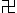

PODSTATA DALŠÍHO POKROKU
(Česká verze)
Li Hongzhi
Obsah
Podstata dalšího pokroku I
O Dafa (Lunyu)Bohatství se ctností
Široký a nesmírný
Opravdová kultivace
Mějte jasnou mysl
Osvícení
Proč člověk nemůže vidět
Studium Fa
Jak poskytovat podporu
Nebeská klenba
Úrovně
Co je prázdnota?
Odhodlání
Učení buddhismu jsou nejslabší a nejmenší částí Buddhova Fa
Co je moudrost?
Není to práce, ale kultivační praxe
Praktikování kultivace po odchodu do důchodu
Náprava Fa
Mudrc
Vstoupit do učení k Učiteli
Výslovná připomínka
Pro koho praktikujete kultivaci?
Názvosloví Buddhova Fa
Utište vnější kultivací vnitřního
Pokračujte v odstraňování připoutání
Potvrzení
Kultivující je s tím přirozeně spojen
Co je Snášenlivost (Ren)?
Co je to slepá víra (mi xin)?
Karma nemoci
Čemu se mají praktikující vyhýbat
Dokonalý soulad
Neopomenutí
Kultivace a práce
Oprava
Nezměnitelný
Nedělejte troufalá vyhlášení
Probuzení
Pevnost Fa
Kultivační praxe a nesení zodpovědnosti
Co dělat s rukopisy písem
Konference Fa
Dopis hlavnímu asistenčnímu centru Dafa v Shijiazhuangu
Náprava vlastního charakteru
Stručné vysvětlení Shan
Dodatek k „Nápravě vlastního charakteru“
Buddhovská povaha a démonická povaha
Velké odhalení
Kultivační praxe není politika
Zodpovědná osoba je také praktikujícím
Co je kultivační praxe?
Dafa bude navěky čistý jako diamant
Další porozumění
Slova varování
Dafa si nikdy není možné přivlastňovat
Co je osvícení?
Přetváření lidstva
Úpadek
Neopomenutí v buddhovské povaze
Jasná mysl
Navždy si pamatujte
Těžký úder
Další poznámka ke kritériím hodnocení
Konečný závěr
Rozhovor s Časem
Vysvětlení k Fa
Opusťte lidská připoutání a pokračujte ve skutečné kultivaci
Držte se střední cesty
Fa napravuje lidské srdce
Zásady pro učedníky, kteří jsou mnichy a mniškami
Prostředí
Vykopat s kořeny
Pro koho existujete?
Rozplynout se ve Fa
Buddhův Fa a buddhismus
Dlouhodobým studentům z Pekingu
Asistenčnímu centru Falun Dafa v Shandongu
Dafa není možné využívat
Odhodlání a pevnost
Zbavte se démonické povahy
Podstata dalšího pokroku II
Pravdivá povaha odhalenaNěkolik mých myšlenek
Pozice
Stabilita
Věnování pro ruskou verzi Falun Dafa
Další komentáře k pověře
Fotografie Mistra: V tichosti pozorujíc svět
Znající srdce
K Dovršení
Tchajwanské Konferenci Dafa
Zmínka o proroctvích
Používání podle vlastní vůle
Zastrašte rušivé zasahování
Vyhlášení
Racionalita
Odstraňte svá poslední připoutání
Komentář I.
Zaduste zlo
Za hranice snášenlivosti
Blahopřání
Konferenci Dafa na Floridě
Napravujíc kolosální nebeskou klenbu
Donucování nemůže změnit lidské srdce
Zpráva
Návrh
Spravedlivé myšlenky učedníků Velkého Zákona jsou mocné
Velkolepost učedníků
Přísahy bohů se naplňují
Žádná politika
Komentář II.
Dvě pozice rukou při vysílání spravedlivých myšlenek
Co jsou nadpřirozené schopnosti
Všem žákům na Severské konferenci Dafa
Velký Zákon je nezničitelný
Dešifrování posledních tří oktáv z Básně o švestkovém květu
Náprava Zákona a kultivace
Účinek spravedlivých myšlenek
O článku „Důstojnost Velkého Zákona“
Velký Zákon je všezahrnující
Učedníci Velkého Zákona období nápravy Zákona
Také několika slovy
Cesta
Evropské webstránce Čistá harmonie
Od Mistra Druhé Konferenci Dafa v Rusku
Chlad podzimních větrů
Předpovídání nápravy Zákona lidského světa
Podstata dalšího pokroku III
Blahopřání konferenci Fa v New YorkuVšichni učedníci Dafa po celém světě, šťastný nový rok!
Pohlížejte na věci se spravedlivými myšlenkami
Požehnání z Dafa
Komentář
Spravedlivé myšlenky
Novoroční pozdrav
Novoroční pozdrav učedníkům Dafa v roce 2003
Komentář ke článku studenta
Komentář ke článku studenta
Komentář ke článku studenta
Komentář ke článku studenta
Pozdrav učedníkům Dafa ke svátku Nového roku 2004
Vyučování Fa na mezinárodní telekonferenci
Zastavte zlé skutky spravedlivými myšlenkami
Odstraňte temné přisluhovače spravedlivými myšlenkami
Mějte jasnou mysl
Komentář ke článku studenta
Konferenci Fa v Montrealu v Kanadě
Evropské konferenci Fa pořádané ve Vídni
Odložte lidská připoutání a zachraňte lidi světa
Komentář ke článku studenta
Při nápravě Fa musejí být vaše myšlenky spravedlivé, nikoli lidské
Pozdravy
Má verze „probuzení holí“
Evropské konferenci výměny zkušeností 2005
My se nepolitizujeme
Novoroční pozdrav
Otáčení kola směrem k lidskému světu
Evropské konferenci Fa ve Stockholmu
Studovat dobře Fa a zbavovat se připoutání není těžké
Zbavte se lidského myšlení
Všem učedníkům Dafa po celém světě i v pevninské Číně, šťastný Svátek středu podzimu!
Kráčejte po své cestě přímo
Pražské konferenci Fa
Čím blíže ke konci, tím pilnější byste měli být
Vyzrálí
Konferenci Fa v Izraeli
Odpověď peruánským učedníkům Dafa
Blahopřání
Odstraňování zla
Projděte smrtící zkouškou
Ukrajinské konferenci Fa
Konferenci Fa v Chicagu
Důkladně rozložte zlo
Australské konferenci Fa
Děkuji vnímajícím bytostem za jejich pozdravy
Ještě pár poznámek k politice
Zcela rozložte všechna rušivá božstva ve Třech říších, která se podílejí na zasahování do nápravy Fa
Ohledně románu Vesmírná katastrofa
Kanadské konferenci Fa
Konferenci Fa na Středozápadě USA v Minnesotě
Evropské konferenci Fa
Francouzské konferenci Fa
Pozdravy
Pozdravy
Komentář
Prosévání písku
Objasnění
Opět přeji Evropské konferenci Fa mnoho úspěchů
Komentář
Pozdrav
Buďte ostražití
Udělat si ve věcech pořádek
Konferenci Fa na Středozápadě USA
Brazilské konferenci Fa
Komentář
Evropské konferenci Fa
První konferenci Fa v Indii
Komentář
Co znamená „pomáhat Mistrovi napravit Fa“?
Dávejte si pozor na vytváření démonů ve vlastní mysli
Otázka vybírání peněžních prostředků
Hlavní cíl objasňování pravdy
Slovník pojmů
Podstata dalšího pokroku I
O Dafa (Lunyu)
Dafa je moudrostí Stvořitele. Je základem stvoření světa, na něm stojí nebesa, země a vesmír. Zahrnuje všechny věci, od těch nejnepatrnějších k ještě větším, než jsou ty nesmírně veliké, a přitom se na každé úrovni existence kosmického těla projevuje odlišným způsobem. Z hlubin kosmického těla se poprvé objevují ty nejdrobnější částice, následují vrstvy, jedna za druhou, nespočetných částic lišících se velikostí, od malých k velkým, a dosahují až k vnějším úrovním, které lidstvo zná – k atomům, molekulám, planetám a galaxiím – a ještě dál, k tomu, co je ještě větší. Částice rozmanitých velikostí vytvářejí životy rozmanitých velikostí i světy rozmanitých velikostí, které prostupují celým kosmickým tělem. Život na kterékoli úrovni částic vnímá částice té další, větší úrovně jako planety na obloze, a je tomu tak na každé úrovni. Životům na každé úrovni vesmíru se zdá, že takto to pokračuje neustále do nekonečna. Právě Dafa vytvořil čas a prostor, rozmanité množství životů a druhů a veškerá stvoření světů. Vše mu vděčí za svou existenci, nic mimo něj neexistuje. Na různých úrovních to všechno je konkrétním vyjádřením vlastností Dafa: Zhen, Shan a Ren.
Ať jsou lidské prostředky k výzkumu vesmíru a zkoumání života jakkoliv pokročilé, získané poznatky se omezují pouze na určitou část této jedné dimenze, kde na nízké úrovni vesmíru žijí lidské bytosti. Už dříve, během civilizací, které předcházely historii, lidé prozkoumali jiné planety. I když dosáhli velkých výšek a vzdáleností, lidstvu se ještě nikdy nepodařilo překročit dimenzi, ve které existuje. Pravdivý obraz vesmíru bude lidstvu vždy unikat. Má-li lidská bytost pochopit záhady vesmíru, časoprostoru a lidského těla, musí se začít věnovat kultivaci pravé Cesty, a tím dosáhnout pravého osvícení a pozvednout úroveň své existence. Kultivací se pozvedne její morální charakter a jakmile se naučí rozlišovat to, co je vskutku dobré, od zlého, ctnost od neřesti, a překročí lidskou úroveň, uvidí skutečnost vesmíru i životy jiných úrovní a dimenzí a získá k nim přístup.
I když lidé často tvrdí, že jejich vědecké úsilí slouží k tomu, aby „se zlepšila kvalita života“, žene je technologická soutěživost. A ve většině případů se to stalo teprve poté, co lidé odstrčili bohy a opustili mravní zásady, které u nich měly zajistit sebekázeň. A právě z těchto důvodů byly minulé civilizace mnohokrát zničeny. Lidské zkoumání se nutně omezuje na tento hmotný svět a takovými metodami se studuje pouze to, co se uznává. Současně věci, které jsou v lidské dimenzi nehmatatelné nebo neviditelné, ale objektivně existují a v tomto přítomném světě se skutečně projevují – jako duchovno, víra, božské slovo a zázraky – se považují za tabu, protože lidé odvrhli bohy.
Jestliže bude lidská rasa schopna si zlepšit charakter, chování a myšlení, pokud je založí na morálních hodnotách, bude možné, aby civilizace přetrvala, a dokonce aby se v lidském světě opět odehrávaly zázraky. Mnohokrát v minulosti se na tomto světě objevily kultury, které byly zároveň božské a lidské, a pomohly lidem dospět k pravdivějšímu pochopení života a vesmíru. Když lidé ukáží náležitý respekt a úctu k tomu, jak se Dafa v tomto světě projevuje, oni, jejich rasa nebo národ, se budou těšit požehnání anebo poctě. Byl to Dafa – Velký Zákon vesmíru – který vytvořil kosmické tělo, vesmír, život a veškerá stvoření světů. Jakýkoli život, který se od Dafa odvrací, je vskutku zkažený. Každý člověk, který se dokáže Dafa přizpůsobit, je opravdu dobrým člověkem a bude odměněn a požehnán zdravím a štěstím. A kterýkoliv kultivující, který je schopen se s Dafa sjednotit, je osvíceným – bohem.
Li Hongzhi
24. května 2015
Bohatství se ctností
Dávní lidé říkali: „Peníze jsou něčím mimo toto fyzické tělo.“ Každý to ví, ale každý se za nimi žene. Mladý muž je hledá, aby uspokojil své touhy, mladá žena je chce, aby se zkrášlila a žila v přepychu, starší člověk je hledá, aby se ve stáří o sebe mohl postarat, vzdělaný člověk je chce kvůli své pověsti, státní úředník kvůli nim plní své povinnosti, a tak dále. Takže, každý se za nimi žene.
Někteří lidé o ně dokonce soutěží a bojují. Ti, kteří jsou agresivní, kvůli nim riskují, prchliví lidé se kvůli nim uchýlí k násilí, aby je získali, závistiví lidé možná kvůli nim umřou ve hněvu. Povinností vládce a úředníků je obohatit národ, ale podporovat zbožňování peněz je tím nejhorším postupem, jaký lze zvolit. Bohatství bez ctnosti ublíží všem vnímajícím bytostem, zatímco bohatství se ctností je nadějí všech lidí. Proto se člověk nemůže stát bohatým bez toho, aby prosazoval ctnost.
Ctnost se hromadí v minulých životech. Zda se někdo stane králem, úředníkem, zámožným člověkem nebo šlechtou, vše pochází ze ctnosti. Žádná ctnost, žádný zisk, ztráta ctnosti znamená ztrátu všeho. Proto si ti, kdo usilují o moc a hledají bohatství, musejí nejdříve nahromadit ctnost. Přetrpění těžkostí a konání dobrých skutků může nahromadit ctnost mezi lidmi. Aby toho člověk dosáhl, musí rozumět principu příčiny a následku. S tímto poznáním budou úředníci a lid moci uplatňovat sebeovládání a pod nebesy zavládne blahobyt a mír.
Li Hongzhi
27. ledna 1995
Široký a nesmírný
Principy Falun Dafa mohou poskytnout vedení v kultivační praxi každému, a také v náboženské víře. Toto je princip vesmíru, opravdový Fa, který nikdy nebyl učen. Lidem v minulosti nebylo dovoleno znát princip tohoto vesmíru (Buddhův Fa), který přesahuje všechny akademické teorie a morální zásady lidské společnosti od pradávna až do dneška. Co v minulosti učila náboženství a co lidé prožili, byly pouze povrchní charakteristiky a plytké jevy, zatímco široký a nesmírný, hluboký vnitřní význam Fa se může projevit jen praktikujícím a může být pochopen a poznán jen praktikujícími, kteří jsou na různých úrovních opravdové kultivace. Jedině potom může člověk skutečně uvidět, co je Fa.
Li Hongzhi
6. února 1995
Opravdová kultivace
Moji učedníci opravdové kultivace, co vás učím, je zákon kultivace Buddhy a Taa. Vy si však u mne vyléváte stížnosti nad ztrátou svého světského prospěchu, místo toho, abyste byli nešťastní, že se nedokážete vzdát obyčejných lidských připoutání. Je tohle kultivace? Zda se můžete vzdát myšlení obyčejného člověka, je osudnou zkouškou na cestě k tomu, abyste se stali skutečně mimořádnou bytostí. Každý učedník opravdové kultivace tímhle musí projít, protože je to hranice mezi praktikujícím a obyčejným člověkem.
Ve skutečnosti, když se trápíte nad tím, že bylo ublíženo vaší pověsti, prospěchu a citům mezi světskými lidmi, to už ukazuje, že se nemůžete vzdát připoutání obyčejných lidí. Musíte si zapamatovat toto: samotná kultivace není bolestivá – klíč je v tom, že se nejste schopni vzdát připoutání obyčejných lidí. Jen když se hodláte vzdát své pověsti, prospěchu a citů, ucítíte bolest.
Klesli jste sem ze svatého, neposkvrněného a neporovnatelně nádherného světa, protože jste si na té úrovni vyvinuli připoutání. Potom, co jste spadli do světa, který je v porovnání nejšpinavější, místo abyste se kultivovali a spěchali nazpět, nevzdáváte se těch špinavých věcí, na kterých lpíte v tomto špinavém světě, a dokonce se trápíte z jejich nepatrné ztráty. Víte, že Buddha kdysi žebral o jídlo mezi světskými lidmi, aby vás spasil? Dnes znovu ještě jednou do široka otevírám dveře a učím tento Dafa, abych vás spasil. Nikdy jsem necítil hořkost nad těmi nesčetnými těžkostmi, kterými jsem trpěl. Co tedy máte, čeho se ještě nemůžete vzdát? Můžete si vzít do nebe věci, kterých se ve svém srdci nemůžete vzdát?
Li Hongzhi
22. května 1995
Mějte jasnou mysl
Řekl jsem některým praktikujícím, že extrémní myšlenky jsou způsobeny karmou myšlenek, ale mnozí praktikující nyní považují všechny své špatné myšlenky v každodenním životě za karmu myšlenek. To není správné. Co budete kultivovat, když už nemáte žádné špatné myšlenky?! Když jste už tak čistý, nejste už Buddhou? To je nesprávné porozumění. Jen když vaše mysl prudce projevuje špinavé myšlenky nebo proklíná Učitele, Dafa, jiné lidi a tak dále, a vy se jich nemůžete zbavit nebo je potlačit, tak to je karma myšlenek. Je však také nějaká slabá karma myšlenek, ale je jiná než normální myšlenky či nápady. V tomto musíte mít jasno.
Li Hongzhi
23. května 1995
Osvícení
V kalném světě rozmanitých smrtelných bytostí jsou perly pomíchány s rybíma očima. Do tohoto světa Tathágata sestoupí, aniž si toho někdo všimne. Když učí Fa, zlé cesty musejí zasahovat. Tao a zlé cesty se učí současně a v tomtéž světě. Uprostřed pravdy a klamu je důležité osvícení. Jak je rozlišit? Určitě budou existovat lidé s dobrými vrozenými vlastnostmi. Ti, kteří skutečně mají předurčený vztah a mohou se osvítit, přijdou jeden po druhém, budou následovat Tao a obdrží Fa. Rozliší spravedlivé od zlého, dostanou opravdová učení, rozjasní své tělo, zvýší si moudrost, obohatí své srdce a vstoupí na loď Fa, bezstarostně a nenuceně. Jak nádherné! Snažte se ze všech sil, až k dokončení kultivace.
Ti, kteří přežívají ve světě beze směru a s chatrnou kvalitou osvícení, žijí pro peníze, umírají pro moc a pocítí radost nebo strach kvůli nepodstatným ziskům. Trpce mezi sebou soutěží, a tak po celý život hromadí karmu. Když takoví lidé uslyší Fa, vysmívají se mu a z úst vyplivují slovo „pověra“, protože ho zaručeně shledají těžko pochopitelným a těžko mu ve svém srdci uvěří. Takoví lidé jsou osoby nízké úrovně. Je těžké je spasit, protože mají tak velkou karmu, že jim zahalila tělo a zapečetila moudrost, a jejich původní povaha se ztratila.
Li Hongzhi
14. června 1995
Proč člověk nemůže vidět
„Vidět znamená věřit – co se nevidí, tomu se nevěří.“ Toto je názor průměrného člověka. Lidé jsou ztraceni v iluzi a vytvořili mnoho karmy. Jak by mohli vidět, když jejich původní povaha je zatemněna? Osvícení přichází před viděním. Kultivujte svoji mysl a odstraňujte svoji karmu. Když vaše pravá povaha vystoupí, budete schopni vidět. Vidět či nevidět – to pro mudrce nemá význam. Opírá se o svoji schopnost osvícení, a tak může dosáhnout Dovršení. Lidé mohou a nemusejí vidět, toto je určeno jejich úrovní a jejich vrozenými vlastnostmi. Důvodem, proč většina kultivujících nevidí, je to, že se snaží vidět, což je připoutání. Pokud se jej tedy nevzdají, neuvidí. Toto převážně pochází z karmických překážek, nevhodného prostředí nebo ze způsobu, jakým se člověk kultivuje. Je množství důvodů, lišících se od člověka k člověku. Dokonce i osoba, která je schopna vidět, nemusí vidět jasně, protože pouze nejasné vidění může člověka osvítit k Tao. Když člověk může vidět všechno jasně, jako by byl osobně na scéně, dosáhl Odemčení gongu (kaigong) a nemůže už dále praktikovat kultivaci, protože už pro něj není nic, k čemu by se osvítil.
Li Hongzhi
16. června 1995
Studium Fa
Při studování Dafa by si intelektuálové měli být vědomi nejvýznamnějšího problému: studují Dafa stejným způsobem, jako světští lidé studují teoretické spisy, například vybírají důležité citáty slavných, aby je porovnali se svými postupy. Toto bude brzdit praktikujícího při pokroku. Navíc poté, co pochopí, že Dafa má hluboký vnitřní význam a věci z vysokých úrovní, které mohou vést kultivační praxi na různých úrovních, se ho někteří lidé dokonce pokoušejí zkoumat slovo za slovem, ale nakonec nic nenajdou. Tyto návyky, získané studováním politických teorií během dlouhého časového období, jsou také prvky, které zasahují do kultivační praxe a vedou k nesprávnému pochopení Fa.
Když studujete Fa, neměli byste vyhledávat důležité části, zatímco se tvrdohlavě snažíte rozluštit určitý problém. Toto je ve skutečnosti (s výjimkou těch problémů, které potřebují okamžité řešení) také forma připoutání. Jediná cesta, jak získat dobré pochopení Dafa, je studovat ho bez jakéhokoliv záměru. Pokaždé, když skončíte se čtením Zhuan Falunu a něco jste pochopili, udělali jste pokrok. Dokonce i kdybyste po jeho přečtení pochopili pouze jednu věc, skutečně jste udělali pokrok.
Ve skutečnosti v kultivační praxi stoupáte pomocí neustálého sebezlepšování postupně a nevědomě. Pamatujte: člověk by měl získávat věci přirozeně, bez toho, aby o ně usiloval.
Li Hongzhi
9. září 1995
Jak poskytovat podporu
Mnoho asistentů v různých oblastech má velmi vysoké pochopení Dafa. Jsou schopni jít dobrým příkladem svým chováním a dobře se činí při organizování svých skupin praktikujících. Přece jsou však i asistenti, kterým to až tak nejde, a toto se projevuje hlavně v metodách jejich práce. Například ve snaze přimět studenty, aby je poslouchali, a aby si ulehčili svoji práci, někteří asistenti to dělali pomocí příkazů. Toto není dovoleno. Učit se Fa je dobrovolné. Když to student nechce z hloubky svého srdce, žádné problémy se nedají vyřešit, a místo toho mohou vzniknout rozpory. Když to nebudeme napravovat, rozpory se budou zvětšovat, což bude vážně podkopávat učení se Fa.
Co je ještě vážnější, někteří asistenti, aby přinutili praktikující věřit jim a poslouchat je, často šíří nějaké zvěsti nebo nějakou senzaci, aby si zvýšili prestiž, případně dělají zvláštní věci, aby se předváděli. Nic z tohoto není dovoleno. Naši asistenti slouží jiným na dobrovolných základech. Nejsou mistrem, ani by neměli mít tato připoutání.
Jak tedy máme dělat správně práci asistentů? Především, měli byste se považovat za jednoho z učedníků, místo toho, abyste se považovali za někoho nad nimi. Když je ve vaší práci něco, co nevíte, měli byste to skromně diskutovat s ostatními. Když jste udělali něco nesprávně, měli byste upřímně říci učedníkům: „Já jsem také kultivující, stejně jako vy, takže nevyhnutelně udělám ve své práci chyby. Protože jsem udělal chybu, udělejme nyní to, co je správné.“ Když upřímně chcete, aby všichni praktikující spolupracovali na dosažení cíle, jakých výsledků dosáhnete? Nikdo vám neřekne, že nejste na nic dobrý. Místo toho si budou myslet, že jste dobře studovali Fa a máte otevřenou mysl. Ve skutečnosti, Dafa je tady a všichni ho studují. Učedníci budou každý krok, který asistent udělá, měřit podle Dafa, a zda je dobrý nebo ne, může být jasně rozlišeno. Pokud máte úmysl vyvyšovat se, učedníci si budou myslet, že máte problém s charakterem. Proto pouze když jste čestný, můžete dělat věci dobře. Vaše pověst je založena na dobrém pochopení Fa. Jak by mohl být kultivující bez chyb?
Li Hongzhi
10. září 1995
Nebeská klenba
Vesmír je tak široký a nebeská těla tak ohromná, že to nikdy nemůže být pochopeno lidmi pomocí zkoumání. Nepatrnost hmoty nemůže být lidmi nikdy odhalena. Lidské tělo je tak záhadné, že je to mimo dosah lidského poznání, které se sotva může dotknout povrchu. Život je tak bohatý a složitý, že pro lidstvo navždy zůstane věčnou záhadou.
Li Hongzhi
24. září 1995
Úrovně
Zlému člověku vládne závist.
Ze sobeckosti a hněvu si stěžuje na nespravedlnost vůči sobě.
Dobrý člověk má vždy srdce soucitu.
Bez nespokojenosti a nenávisti, bere těžkosti jako radost.
Osvícený člověk nemá žádná připoutání.
Klidně pozoruje lidi ve světě, podvedené iluzemi.
Li Hongzhi
25. září 1995
Co je prázdnota?
Co je prázdnota? Bytí bez připoutání je pravým stavem prázdnoty. Neznamená to materiální prázdnotu. Zen-buddhismus však dosáhl konce své Dharmy a už nemá co učit. V tomto chaotickém Období konce Dharmy se někteří, kdo ho studovali, dále tvrdohlavě drží jeho teorie prázdnoty a chovají se přitom nerozumně a hloupě, jako by se osvítili k principům jeho filosofie. Jeho zakladatel, Bódhidharma, sám potvrdil, že jeho učení může být účinné pouze po šest generací a potom už nebude nic, co by se dalo odevzdávat dále. Proč se k tomu neprobudit? Když někdo řekne, že všechno je prázdné, bez Fa, bez Buddhy, bez obrazu, bez Já a že nic neexistuje, jakou věcí je Bódhidharma? Když neexistuje žádná Dharma, jakou věcí je zen-buddhistická teorie prázdnoty? Když není žádný Buddha, žádný obraz, kdo je Šákjamuni? Když není žádné jméno, žádný obraz, žádné Já, nic neexistuje a všechno je prázdné, proč se namáháte jíst a pít? Proč nosíte šaty? Co když vám vyklovou oči? K čemu je připoutáno vašich sedm citů a šest tužeb obyčejných lidí? Ve skutečnosti to, co Tathágata myslí pod „prázdnotou“, je bytí bez všech připoutání obyčejných lidí. Neopomenutí je skutečným základem prázdnoty. Vesmír přece existuje kvůli hmotě, je složen z hmoty a zůstává hmotou. Jak by mohl být prázdným? Učení, které není odevzdáváno Tathágatou, určitě nebude mít dlouhého trvání a tato učení odumřou – učení arhata není Buddhův Zákon. Pochopte to! Pochopte!
Li Hongzhi
28. září 1995
Odhodlání
V přítomnosti Učitele jste plni odhodlání. Když tady Učitel není, nemáte už o kultivaci zájem, jako byste se kultivovali kvůli Učiteli a vydali se na tuto cestu kvůli nějakému zájmu. Toto je velkou slabostí průměrného člověka. Šákjamuni, Ježíš, Lao-c’ a Konfucius už tady nejsou více než dva tisíce let, jejich učedníci však nikdy necítili, že by nemohli praktikovat kultivaci bez svých mistrů při sobě. Kultivace je vaší osobní záležitostí a nikdo ji nemůže udělat za vás. Učitel vám může pouze říci zákony a principy na povrchu. Je vaší vlastní zodpovědností, abyste kultivovali svoje srdce a mysl, opustili své touhy, dosáhli moudrosti a vyvedli se z bloudění. Jestliže jste se vydali na tuto cestu z nějakého zájmu, vaše mysl určitě nebude pevná, a jakmile se ocitnete v lidské společnosti, určitě zapomenete svůj základ. Pokud se pevně nedržíte své víry, nedosáhnete ničeho, po celý život. Nikdo neví, kdy bude další šance. Je to velmi těžké!
Li Hongzhi
6. října 1995
Učení buddhismu jsou nejslabší a nejmenší částí Buddhova Fa
Všechny vnímající bytosti! Nikdy neměřte buddhismem Velký Zákon Zhen-Shan-Ren, protože ten je neměřitelný. Lidé si už zvykli nazývat svaté knihy buddhismu Fa. Ve skutečnosti jsou kosmická těla tak obrovská, že jsou mimo Buddhovo pochopení vesmíru. Teorie Taiji školy Tao je taktéž pochopením vesmíru na nízké úrovni. Na úrovni běžných lidí není žádný skutečný Fa, pouze slabá znalost jevů na okraji vesmíru, které mohou člověku umožnit praktikovat kultivaci. Protože obyčejní lidé jsou bytostmi nejnižší úrovně, není jim dovoleno poznat skutečný Buddhův Fa. Lidé ale přece slyší od mudrců: „Uctívání Buddhy může zasadit semínka pro příležitost praktikovat kultivaci. Praktikující, kteří čtou zaklínadla, mohou získat ochranu od vyšších bytostí. Dodržování pravidel může člověku umožnit dosažení standardu praktikujícího.“ Během historie se vždy našli lidé, kteří zkoumali, zda slova Osvíceného jsou Buddhův Fa. Učení Tathágaty je projevem buddhovské povahy a může také být nazváno projevem Fa. Ale není to pravý zákon vesmíru, protože v minulosti bylo lidem zcela zakázáno poznat pravý projev Buddhova Fa. K Buddhovu Fa se mohl osvítit pouze ten, kdo dosáhl vysoké úrovně pomocí kultivační praxe, takže lidem tím více nebylo dovoleno poznat pravou podstatu kultivační praxe. Falun Dafa poprvé během věků poskytl podstatu vesmíru – Buddhův Fa – lidským bytostem. Toto se rovná poskytnutí žebříku lidem, aby mohli vystoupit do nebe. Jak byste tedy mohli měřit Dafa vesmíru něčím, co bylo kdysi vyučováno v buddhismu?
Li Hongzhi
8. října 1995
Co je moudrost?
Lidé se domnívají, že slavné osoby, učenci a rozliční odborníci v lidské společnosti jsou významní. Ve skutečnosti jsou opravdu bezvýznamní, protože jsou to obyčejní lidé. Jejich vědomosti jsou pouze tím kousíčkem pochopeným moderní vědou lidské společnosti. V širokém vesmíru, od nejmakroskopičtějšího po nejmikroskopičtější, se lidská společnost nachází přesně ve středu, na nejzevnější vrstvě a na nejzevnějším povrchu. Její živé bytosti jsou tedy nejnižší formou existence, takže jejich pochopení hmoty a mysli je velmi omezené, povrchní a ubohé. Dokonce i kdyby někdo měl všechny vědomosti lidstva, stále by zůstal obyčejným člověkem.
Li Hongzhi
9. října 1995
Není to práce, ale kultivační praxe
Zda můžete následovat požadavky, které jsem stanovil pro asistenční centra, je velmi důležitá, principiální záležitost a ovlivní to způsob, jakým se bude Fa šířit v budoucnosti. Proč se nemůžete vzdát zvyků, které jste získali během dlouhého časového období v byrokratických kancelářích? Neberte asistenční centra jako administrativní úřady v lidské společnosti a nepřevezměte jejich metody a přístupy, jako je vydávání dokumentů, realizace politiky nebo „zvyšování pochopení lidí“. Praktikující Dafa by si měl pouze zlepšovat svůj charakter v kultivaci a zvyšovat si svoji Úroveň dosažení. Někdy se dokonce zorganizuje schůze jako na pracovišti světských lidí. Nějaký funkcionář například udělá projev, nebo nějaký vedoucí udělá shrnutí. V dnešní době se dokonce i stát pokouší napravit tyto zkažené praktiky a byrokratické postupy ve společnosti. Jako praktikující už víte, že žádný aspekt lidské společnosti už v tomto Období konce Dharmy není dobrý. Proč nemůžete opustit tyto pracovní postupy, které jsou pro kultivační praxi nejméně vhodné? My se absolutně nikdy nezměníme na administrativní instituci nebo podnik ve společnosti.
V minulosti nám nějací lidé v důchodu, kteří neměli co dělat a Falun Dafa se jim zdál dobrý, nabídli pomoc, aby si vyplnili bolestivé prázdno ve svých jednotvárných životech. Samozřejmě že to nestačí! Falun Dafa je kultivační praxe – není to zaměstnání. Všichni naši dobrovolní pracovníci musejí být nejprve pravými praktikujícími s vysokou úrovní charakteru, protože jsou vzory pro charakterovou kultivaci. Nepotřebujeme typy vůdců, jako jsou ti mezi světskými lidmi.
Li Hongzhi
12. října 1995
Praktikování kultivace po odchodu do důchodu
Je velká škoda, že někteří studenti, kteří navštěvovali moje přednášky a mají dobré vrozené vlastnosti, přestali praktikovat, protože jsou příliš zaneprázdněni prací. Kdyby to byli průměrní, obyčejní lidé, už bych nic neřekl a nechal bych je tak. Ale tito lidé jsou stále slibní. Lidská morálka klesá dolů katastrofickou rychlostí každým dnem a obyčejní lidé jsou všichni unášeni tímto proudem. Čím dále od Tao, tím těžší je vrátit se pomocí kultivace zpět. Popravdě řečeno, kultivační praxe je o kultivování svého srdce a mysli. Složité prostředí, na pracovišti zvlášť, vám poskytuje dobrou příležitost ke zlepšení charakteru. Jakmile jste v důchodu, neztratíte nejlepší prostředí k praktikování kultivace? Jak se budete kultivovat bez překážek? Jak se můžete zlepšovat? Čas života člověka je omezen. Často plánujete věci poměrně dobře, ale víte, zda budete mít dostatek zbývajícího času na svoji kultivaci? Kultivační praxe není dětská hra. Je vážnější než cokoliv mezi obyčejnými lidmi a není to něco, co se bere jako samozřejmost. Jakmile zmeškáte příležitost, kdy budete znovu schopni získat lidské tělo v šesti stupních cesty reinkarnace? Příležitost zaklepe jen jednou. Když se iluze, které se nedokážete vzdát, rozplyne, uvědomíte si, co jste ztratili.
Li Hongzhi
13. října 1995
Náprava Fa
Když lidem chybí ctnost, bude se vyskytovat mnoho neštěstí, zaviněných živly i lidmi. Když zemi chybí mravnost, všechno bude vadnout a opadávat. Když nebe postrádá Tao, země praskne, obloha se zřítí a celý vesmír zpustne. S nápravou Fa se napraví vesmír, život bude vzkvétat, nebe a země budou stabilní a Fa bude existovat věčně.
Li Hongzhi
12. listopadu 1995
Mudrc
Je člověkem plnícím vůli nebe na zemi i na nebesích. Má hojnost ctnosti a zachovává shovívavé srdce. Klade na sebe vysoké cíle, a přitom dává pozor na drobnosti. Má širokou znalost zákonů a principů a je schopen objasnit pochybnosti. Nabízí spásu světu a lidem, a tak přirozeně buduje své zásluhy.
Li Hongzhi
17. listopadu 1995
Vstoupit do učení k Učiteli
Dafa se šíří široko daleko. Ti, kteří o něm slyšeli, ho hledají. Ti, kteří ho získali, se z něho těší. Počet kultivujících roste denně a stává se nespočitatelným. Avšak většina samouků má znatelný úmysl formálně vstoupit do učení k Učiteli, protože se obávají, že by nemuseli obdržet skutečné učení, kdyby nepotkali Učitele osobně. Toto je ve skutečnosti způsobeno slabým pochopením Fa. Učením Dafa v široké míře chci nabídnout spásu všem. Kdokoliv se ho učí, je mým učedníkem. Nepostupuji podle starých rituálů a zvyklostí, nevšímám si povrchních formalit a dívám se pouze na srdce člověka. Když se nekultivujete opravdově, jaký má smysl, že mě formálně uznáváte za „Učitele“? Člověk, který se skutečně kultivuje, získá věci přirozeně, bez toho, aby se o ně snažil. Celá kultivační energie a celý Fa se nacházejí v knize a člověk je přirozeně získá čtením Dafa. S těmi, kdo se ho učí, se přirozeně dějí změny a oni už budou v Tao, když znovu a znovu čtou knihu. Učitelova Těla Zákona (fashen) je jistě budou potichu ochraňovat. Vytrvalostí určitě v budoucnu dosáhnou Spravedlivého dovršení.
Li Hongzhi
8. prosince 1995
Výslovná připomínka
V současnosti se objevuje jedna velmi vážná otázka: když prapůvodní duše (yuanshen) některých studentů opustí jejich tělo, na určitých úrovních vidí určité dimenze nebo s nimi přicházejí do styku. Cítí, jak je to nádherné a že tam všechno skutečně existuje, a nechtějí se vrátit. Toto vyústilo do smrti jejich fyzických těl. Takže zůstali v tom světě a nemohli se vrátit. Přesto se nikdo z nich nedostal za Tři říše. Už jsem o tomto problému předtím mluvil. Nepřipoutejte se ve své kultivaci k žádné dimenzi. Pouze když jste dokončili celý průběh kultivace, můžete dosáhnout Dovršení. Takže když vaše duše vyjde ven, bez ohledu na to, jak pěkná se vám ta místa zdají, musíte se vrátit.
Také máme několik studentů s nesprávným pochopením. Myslí si, že jakmile praktikují Falun Dafa, mají zaručeno, že jejich fyzické tělo nikdy nezemře. Náš kultivační systém kultivuje obojí, mysl i tělo. Kultivující si může praktikováním kultivace prodloužit život. Ale někteří lidé nedělali ve své kultivaci v Zákonu trojitého světa pilný pokrok a vždy se zdržují na určité úrovni. Po velkém úsilí dostat se na další úroveň se na té úrovni opět zdržují. Kultivace je vážná, takže je těžké zaručit, že něčí život neskončí v předurčenou dobu. Tento problém však neexistuje v kultivační praxi nad Zákonem trojitého světa. Situace v Zákonu trojitého světa je složitější.
Li Hongzhi
21. prosince 1995
Pro koho praktikujete kultivaci?
Jakmile někdo začne kritizovat qigong přes média, někteří studenti zaváhají ve svém odhodlání a přestanou praktikovat, jako by ti, co využívají média, byli moudřejší než Buddhův Fa a jako by se někteří praktikující kultivovali pro někoho jiného. Jsou také lidé, kteří se polekají, když musejí čelit tlaku, a kultivaci vzdají. Mohou takoví lidé dosáhnout Spravedlivého dovršení? Nezradili by v rozhodující chvíli i Buddhu? Není strach připoutání? Kultivační praxe je jako velké vlny, které odnášejí písek: co zůstává, je zlato.
Popravdě řečeno, od dávných dob po dnešek měla lidská společnost princip nazývaný „vzájemné rození a vzájemné potlačování“. Tedy kde je dobré, je i nedobré, kde je spravedlnost, tam je i zlo, kde je dobrota, tam je i zkaženost, kde jsou lidé, tam jsou i duchové, kde jsou Buddhové, jsou i démoni. Je to ještě zjevnější v lidské společnosti – tam, kde je pozitivní, je i negativní, kde jsou straníci, je i opozice, kde jsou věřící, jsou i nevěřící, kde jsou dobří lidé, jsou i zlí, kde jsou nesobečtí lidé, jsou i sobečtí, kde jsou lidé, kteří se mohou obětovat pro druhé, jsou i lidé, kteří se nezastaví před ničím, jen aby oni sami získali. Toto byl v minulosti princip. Proto když chce člověk, skupina, nebo dokonce národ dosáhnout něčeho dobrého, střetne se se stejným množstvím opačného odporu. Po dosažení úspěchu tedy bude člověk cítit, že byl tvrdě vybojován a měl by si ho vážit. Takto se lidstvo vyvíjelo (princip vzájemného rození a vzájemného potlačování se v budoucnosti změní).
Jinak řečeno, kultivační praxe je něčím nadpřirozeným. Bez ohledu na to, kdo je člověk, který kritizuje qigong, nekritizuje ho z pohledu obyčejného člověka? Má nějaké právo popírat Buddhův Fa a kultivaci? Může se některá z lidských organizací postavit nad Bohy a Buddhy? Mají ti, kteří kritizují qigong, schopnost ovládat Buddhy? Budou Buddhové zlí jen proto, že on tak mluví? Přestanou Buddhové existovat jen proto, že on tvrdí, že Buddhové neexistují? Utrpení Dharmy během kulturní revoluce vyplývalo z kosmického vývoje. Buddhové, Taové a Bohové všichni následují vůli nebes. Utrpení Dharmy bylo utrpením pro lidi a náboženství, ne utrpením pro Buddhy.
Největším důvodem toho, že jsou náboženství podkopávána, je úpadek lidské mysli. Lidé uctívají Buddhu ne proto, aby kultivovali buddhovství, ale proto, že chtějí Buddhovo požehnání k tomu, aby vydělali peníze, odstranili neštěstí, měli syna nebo aby vedli pohodlný život. Každý si v minulých životech nashromáždil množství karmy. Jak by mohl člověk žít pohodlně? Jak by mohl člověk nezaplatit za svoji karmu, poté co spáchal zlé skutky? Démoni viděli, že lidská mysl není spravedlivá, a jeden po druhém vyšli ze svých jeskyní, aby do lidského světa přinesli neštěstí a chaos. Bohové a Buddhové viděli, že lidská mysl není spravedlivá, a jeden po druhém odešli ze svých míst a opustili chrámy. Mnoho lišek, lasic, duchů a hadů bylo přineseno do chrámů těmi, kteří se přišli modlit za bohatství a zisky. Jak by takovéto chrámy mohly být bez problémů? Lidské bytosti jsou hříšné. Buddhové lidi netrestají, protože všichni lidé jsou hnáni nevědomostí a už si ublížili. Ba co více, nahromadili si pro sebe obrovské množství karmy a velmi brzy je očekávají obrovské katastrofy. Je tedy nutné je ještě trestat? Ve skutečnosti, když člověk udělá něco zlého, určitě bude někdy v budoucnosti snášet odplatu. Lidé si to pouze neuvědomují nebo tomu nevěří. Myslí si, že neštěstí jsou náhody.
Bez ohledu na to, kdo nebo jaké společenské síly vám říkají, abyste už nepraktikovali kultivaci, vy se své kultivace vzdáváte. Praktikujete kultivaci pro ně? Dají vám Spravedlivé dovršení? Není vaše náklonnost k nim slepou vírou? Toto je popravdě skutečná nevědomost. Kromě toho, my nejsme qigongovou praxí, ale kultivační praxí Buddhova Fa. Není každá forma tlaku zkouškou, aby se vidělo, zda má vaše víra v Buddhův Fa pevné základy? Když ještě stále nejste ve Fa pevně odhodláni, všechno ostatní je nepodstatné.
Li Hongzhi
21. prosince 1995
Názvosloví Buddhova Fa
Někteří učedníci byli předtím následovníky buddhismu a hluboce si pamatují pojmy z buddhistických svatých písem. Když zjistí, že používám tatáž slova, jaká jsou v buddhismu, myslí si, že jejich význam je tentýž jako v buddhismu. Jejich význam ve skutečnosti není zcela tentýž. Některé pojmy v buddhismu z oblasti Han jsou slovní zásobou čínštiny a nejsou výlučně buddhistickými pojmy.
Klíčovou věcí zůstává, že tito studenti se stále nemohou zbavit věcí z buddhismu, protože si neuvědomují, že jejich mysl stále ovlivňují dojmy z buddhismu, a ani nemají dostatečné pochopení nepraktikování druhé kultivační cesty. Nezpůsobuje ve skutečnosti povrchní podobnost, kterou člověk vnímá, zasahování? Jestliže si špatně vysvětlujete moje slova, nepraktikujete kultivaci v buddhismu?
Li Hongzhi
21. prosince 1995
Utište vnější kultivací vnitřního
Když si lidé neváží ctnosti, svět bude ve velkém nepořádku a mimo kontrolu. Všichni se navzájem stanou nepřáteli a budou žít bez štěstí. Když budou žít bez štěstí, nebudou se obávat smrti. Lao-c’ řekl: „Když se lidé neobávají smrti, na co je dobré jim jí vyhrožovat?“ Toto je velké hrozící nebezpečí. Lidé doufají v poklidný svět. Když se nyní vytvoří nadměrné množství zákonů a nařízení na zabezpečení klidu, skončí to opačným výsledkem. Aby se tento problém vyřešil, po celém světě se musí kultivovat ctnost – pouze takto může být tento problém od základu vyřešen. Když jsou úředníci nesobečtí, stát nebude zkorumpovaný. Když si obyvatelstvo váží sebekultivace a pěstování ctností a když úředníci i občané stejně uplatňují sebeovládání ve svých myslích, celý národ bude stabilní a obyvatelstvo jej bude podporovat. Když bude národ pevný a stabilní, přirozeně zastraší vnější nepřátele a pod nebesy zavládne mír. To je práce mudrce.
Li Hongzhi
5. ledna 1996
Pokračujte v odstraňování připoutání
Moji učedníci! Mistr je velmi znepokojen, ale to nepomůže! Proč nemůžete opustit připoutání obyčejných lidí? Proč tolik váháte vykročit vpřed? Naši učedníci, včetně našeho personálu, na sebe žárlí dokonce i v práci pro Dafa. Můžete se takto stát Buddhou? Chci mít méně strohý režim řízení jednoduše proto, že se nemůžete zbavit věcí obyčejných lidí, a tak se ve své práci nebudete cítit pohodlně. Dafa patří celému vesmíru, a ne nějakému jednomu nepodstatnému člověku. Kdokoliv tu práci dělá, šíří Dafa. Není podstatné, zda byste to měli dělat vy nebo někdo jiný. Chystáte se přinést si do ráje toto připoutání, které neumíte opustit, a hádat se s Buddhy? Nikdo by neměl zacházet s Dafa jako s výhradně svojí věcí. Zbavte se myšlenky, že s vámi nebylo zacházeno čestně. Když se vaše mysl neumí přes něco dostat, není to způsobeno vaším vlastním připoutáním? Naši učedníci by si neměli myslet, že toto se jich netýká! Doufám, že se na sebe každý podívá, protože vy všichni jste kultivující, kromě mne, Li Hongzhiho. Každý by se nad tím měl zamyslet: proč v době Konce zpustošení učím takovýto ohromný Fa? Jestliže bych odhalil pravdu, učil bych zlé učení, protože by se určitě našli tací, kteří by se učili Fa kvůli tomu. To by bylo záměrné studium Fa. Pro spásu lidí je třeba přivést je na spravedlivou cestu, a jedině pak mohou být jejich připoutání odstraněna. Všichni víte, že když se člověk nezbaví připoutání, v kultivaci neuspěje. Proč se neodvážíte opustit více a jít další krok dopředu? Ve skutečnosti musí existovat nevyslovitelný důvod pro moje vyučování tohoto Dafa. Když už bude pravda odhalena, bude příliš pozdě na lítost. Viděl jsem připoutání některých z vás, ale nemohu vám je říci přímo. Kdybych to udělal, drželi byste si Učitelova slova v mysli a stali byste se k nim připoutáni po zbytek života. Doufám, že se žádný z mých žáků nezahubí. Spasit lidi je velmi těžké, a přivést je k pochopení je ještě těžší. Tím spíše by se měl v tomto světle každý podrobně přezkoumat. Všichni víte, že Dafa je dobrý, tak proč se nemůžete zbavit svých připoutání?
Li Hongzhi
6. ledna 1996
Potvrzení
Buddhův Fa může spasit lidstvo, ale Buddhův Fa nevznikl kvůli spáse lidských bytostí. Buddhův Fa může objasnit záhady vesmíru, života a vědy. Umožňuje lidstvu pokračovat ve správné cestě ve vědě, ale nezrodil se kvůli napravení lidské vědy.
Buddhův Fa je podstatou vesmíru. Je činitelem, který vytvořil původ hmoty, a je příčinou vzniku vesmíru.
V budoucnosti bude mnoho odborníků a vzdělanců, jejichž moudrost se rozšíří pomocí Buddhova Fa. Stanou se průkopníky nového lidstva v různých oblastech vědy. Ale Buddhův Fa vám nedal moudrost proto, abyste se stali průkopníky. Získali jste ji proto, že jste kultivující. To znamená, že jste v prvé řadě kultivující, a až potom odborník. Jako kultivující byste tedy měli využít všechny možné situace, abyste šířili Dafa a potvrzovali Dafa jako správnou a pravdivou vědu, místo toho, abyste hlásali idealismus – toto je povinností každého kultivujícího. Bez tohoto obrovského Buddhova Fa by nebylo nic – a to zahrnuje všechno ve vesmíru, od nejmakroskopičtějšího po nejmikroskopičtější, jakož i všechny vědomosti lidské společnosti.
Li Hongzhi
8. ledna 1996
Kultivující je s tím přirozeně spojen
Všechna trápení, se kterými se kultivující mezi světskými lidmi setkává, jsou prověrkami vytrvalosti, a všechny pochvaly, kterých se mu dostane, jsou zkouškami.
Li Hongzhi
14. ledna 1996
Co je Snášenlivost (Ren)?
Snášenlivost je klíčem ke zlepšování charakteru. Vydržet s rozhořčením, pocitem křivdy nebo slzami je snášenlivostí obyčejného člověka, který je připoután ke svým zájmům. Vydržet úplně bez rozhořčení nebo pocitu křivdy je snášenlivostí kultivujícího.
Li Hongzhi
21. ledna 1996
Co je to slepá víra (mi xin)?
Lidé v Číně dnes skutečně zblednou při pouhé zmínce dvou slov, „slepá víra“, protože mnoho lidí nazývá všechno, čemu nevěří, slepou vírou. Ve skutečnosti tato dvě slova, slepá víra, byla za kulturní revoluce pokryta ultralevicovým podtónem a byla v té době použita jako nejškodlivější výraz proti národní kultuře a jako nejhorší nálepka. Stala se nejnezodpovědnější oblíbenou frází těchto hloupých a tvrdohlavých lidí. Dokonce i tamti samozvaní, takzvaní „materialisté“ označují všechno mimo jejich vědomosti nebo mimo pochopení vědy slepou vírou. Kdyby věci měly být chápány podle této teorie, lidstvo by ještě neudělalo žádné pokroky. Ani věda by se dále nevyvíjela, protože všechny nové pokroky a objevy vědy byly mimo pochopení svých předchůdců. Nejsou tedy tito lidé sami idealisty? Jakmile lidská bytost něčemu věří (xin), není to samo o sobě zaměření se na něco (mi)? Není pravda, že důvěra některých lidí v moderní vědu nebo moderní medicínu je také slepou vírou? Není pravda, že klanění se idolům je také slepou vírou? Ve skutečnosti tato dvě slova, slepá a víra, vytvářejí velmi běžný pojem. Jakmile lidé v něco zaníceně věří – včetně pravdy – stane se to slepou vírou. Nemá to žádný znevažující význam. Pouze když lidé s postranními úmysly útočí na jiné, tehdy slepou víru pokryjí takzvaným feudálním vedlejším významem a stane se z něj klamné a bojovné pojmenování, které může vést hloupé lidi k jeho opakování.
Popravdě řečeno by tato dvě slova, slepá víra, sama o sobě neměla být použita tímto způsobem, a neměl by existovat ani onen vnucený vedlejší význam. To, co znamenají tato dvě slova, slepá víra, není nic negativního. Bez slepé víry v disciplínu by vojáci neměli bojové schopnosti, bez slepé víry ve školy a učitele by studenti nezískali vědomosti, bez slepé víry ve své rodiče by se děti nenechaly vychovávat, bez slepé víry ve své povolání by lidé neodváděli dobrý výkon v práci. Bez víry by lidské bytosti neměly morální standardy, lidská mysl by neměla dobré myšlenky a byla by překonána zkaženými myšlenkami. Morální hodnoty lidské společnosti by v té době prudce upadly. Všichni by se stali navzájem nepřáteli, ovládáni zkaženými myšlenkami, a nezastavili by se před ničím, aby uspokojili svá sobecká přání. Přestože špatní lidé, kteří vložili do dvou slov slepá víra negativní vedlejší význam, dosáhli svého cíle, velmi pravděpodobně zruinovali lidstvo od jeho nejhlubší podstaty.
Li Hongzhi
22. ledna 1996
upraveno 29. srpna 1996
Karma nemoci
Proč nový učedník, který právě začal praktikovat, nebo starší učedník, jehož tělo už bylo upraveno, prožívá při své kultivaci fyzické nepohodlí, jako by byl vážně nemocný? A proč se to stane jednou za čas? Řekl jsem vám ve svých přednáškách Fa, že to je odstraňování vaší karmy, a spolu s odstraňováním karmy, nasbírané během vašich různých minulých životů, se zlepšuje vaše kvalita osvícení. Kromě toho je to na prozkoušení, zda jste odhodláni následovat Dafa. Toto bude pokračovat, dokud vaše kultivace nedosáhne Zákona nad trojitým světem. Toto je vysvětlení ze všeobecného hlediska.
Popravdě řečeno, člověk prožil neznámo kolik životů a v každém z nich nashromáždil velké množství karmy. Když se člověk po smrti znovu narodí, část jeho karmy nemoci je na mikroskopické úrovni vtlačena do jeho těla. Když se znovu narodí, látka jeho nového fyzického těla nemá na povrchu žádnou karmu nemoci (existují ale výjimky pro ty, kteří mají příliš mnoho karmy). Co bylo vtlačeno do těla v minulém životě, potom vystoupí, a když se to vrátí na povrch tohoto fyzického těla, člověk onemocní. Nemoc se však obvykle jeví tak, že je spuštěna nějakou vnější okolností v tomto fyzickém světě. Tímto způsobem to na povrchu zodpovídá objektivním zákonům našeho fyzického světa. To znamená, že je to v souladu s principy tohoto lidského světa. Z toho vyplývá, že světští lidé nemají možnost poznat skutečnou pravdu o původu nemoci, a jsou proto ztraceni v klamné představě a nemohou ze zabloudění vyjít. Když je člověk nemocný, bere léky nebo vyhledává různé druhy léčení, které ve výsledku zatlačují nemoc zpět do těla. Tímto způsobem, místo toho, aby nemocí zaplatil za své zlé skutky v minulých životech, dělá další zlé věci v tomto životě a ubližuje jiným. Toto přináší novou karmu nemoci a vede k různým druhům nemocí. On však dále bere léky nebo používá různá léčení, aby zatlačil nemoc zpět do svého těla. Chirurgie může odstranit pouze hmotu těla v této povrchové fyzické dimenzi, přičemž nemoci v další dimenzi se to nedotklo – je to prostě mimo dosah techniky moderní medicíny. Když se nemoc vrátí, člověk opět vyhledá léčení. Když se po smrti člověk znovu narodí, všechna karma nemoci, kterou nahromadil, se znovu zatlačí zpět do jeho těla. Tento koloběh probíhá jeden život za druhým, přičemž se v těle člověka nahromadí neznámo kolik karmy nemoci. Proto jsem řekl, že celé dnešní lidstvo přišlo do tohoto bodu s karmou nabalenou na karmě. Kromě karmy nemoci má člověk ještě další druhy karmy. A tak mají lidé ve svých životech těžkosti, utrpení a rozpory. Jak by člověk mohl pouze jít za štěstím bez splacení karmy? Lidé dnes mají tolik karmy, že jsou jí prosáknuti a setkají se s nepříjemnostmi vždy a všude. Problémy čekají na člověka, jen co vykročí ze dveří. Když se však neshody přihodí, lidé je nestrpí, protože si neuvědomují, že platí za svoji karmu z minulosti. Když s člověkem ostatní nezacházejí dobře, on bude zacházet s jinými ještě hůře, čímž vytváří novou karmu před splacením staré. To způsobuje, že morální hodnoty upadají každým dnem a lidé se mezi sebou stávají nepřáteli. Mnoho lidí to nedokáže pochopit: co se stalo s dnešními lidmi? Co se děje s dnešní společností? Když bude lidstvo takto pokračovat, bude to velmi nebezpečné.
Pro nás kultivující platí, že kromě té karmy, kterou Mistr odstranil, stále musíme část splatit sami. Budete se proto cítit fyzicky nepohodlně, jako byste trpěli nemocí. Kultivační praxe vás očistí od prapůvodu vašeho života. Lidské tělo je jako letokruhy na stromě, přičemž každý letokruh obsahuje karmu nemoci. Takže vaše tělo musí být očištěno od samého středu. Ale kdyby celá karma měla vyjít naráz, nebyli byste to schopni snést, protože by to ohrozilo váš život. Mohou se vytlačit pouze jeden či dva kousky jednou za čas, což vám umožní překonat ji a zaplatit za svoji karmu utrpením. Ale toto je pouze ten malý kousíček, který byl ponechán, abyste ho snášeli vy, potom co jsem pro vás odstranil karmu. Toto bude pokračovat, dokud vaše kultivace nedosáhne nejvyššího stadia Zákona trojitého světa (tj. Čistě bílého těla), kdy se všechna vaše karma vytlačí. Jsou však i nějací lidé s velmi malým množstvím karmy nemoci a jsou jiné speciální případy. Kultivační praxe Zákona nad trojitým světem je kultivací čistého těla arhata – těla, které nemá žádnou karmu nemoci. Ale jako osoba, která ještě nedosáhla Dovršení a která stále praktikuje kultivaci k vyšším úrovním Zákona nad trojitým světem, bude stále trpět a mít trápení a zkoušky, aby se zvýšila jeho úroveň. Ty budou zahrnovat pouze mezilidské rozpory nebo jiné věci v oblasti charakteru a další opouštění jeho připoutání. Už více nebude mít karmu fyzické nemoci.
Karma nemoci není něco, co se může neuváženě odstranit pro světského člověka. Je to úplně nemožné udělat pro nepraktikujícího, který se musí spoléhat na lékařské léčení. Kdybychom to dělali pro světské lidi, narušovali bychom nebeské zákony, protože by to znamenalo, že člověk může dělat zlé věci bez toho, aby za svoji karmu zaplatil. Je úplně nepřijatelné, aby člověk nesplatil své dluhy – nebeské zákony to nedovolí! Dokonce i běžné qigongové léčení zatlačuje karmu do nitra lidského těla. Když má člověk příliš mnoho karmy a stále dělá zlé věci, při smrti ho čeká zničení fyzického těla i duše, což je úplný zánik. Když velká osvícená bytost léčí nemoc lidské bytosti, může úplně odstranit karmické důvody této nemoci, ale dělá se to většinou za účelem spasení lidí.Li Hongzhi
10. března 1996
Čemu se mají praktikující vyhýbat
Ti, kteří jsou připoutáni ke své pověsti, praktikují zlou cestu, plnou záměru. Hned jak se stanou v tomto světě známými, určitě povědí dobré, ale myslí zlé, čímž zavádějí veřejnost a poškozují Fa.
Ti, kteří jsou připoutáni k penězům, hledají bohatství a svoji kultivaci předstírají. Poškozují praktikování a Fa, a mrhají svými životy, místo aby kultivovali buddhovství.
Ti, kteří jsou připoutáni k žádostivosti, se ničím neliší od zkažených lidí. Zatímco recitují posvátné knihy, dokonce vrhají kradmé pohledy. Jsou daleko od Tao a jsou to zkažení, světští lidé.
Ti, kteří jsou připoutáni k rodinným citům, jimi budou určitě popáleni, zamotáni a trápeni. Nit těchto citů je bude svazovat po celý život. Když se objeví smrt, bude pro ně příliš pozdě litovat.
Li Hongzhi
15. dubna 1996
Dokonalý soulad
(I.)
Lidé v různých pracovních prostředích jsou zapleteni do různých druhů zabíjení. Rovnováha v životě se projevuje různými způsoby. Jako praktikující byste se měli v první řadě vzdát každého připoutání a přizpůsobit se lidské společnosti, protože to je udržování projevu Fa na určité úrovni. Kdyby nikdo nevykonával lidská povolání, Fa na této úrovni by zanikl.
(II.)
Životy ve Fa přirozeně existují a umírají. Vesmír prochází utvářením, stabilitou a úpadkem a lidské bytosti podstupují narození, stárnutí, nemoc a smrt. V rovnováze životů také existují nepřirozená narození a smrti. Ve snášenlivosti je zřeknutí se a úplné zřeknutí se je vyšším principem neopomenutí.
Li Hongzhi
19. dubna 1996
Neopomenutí
Ve snášenlivosti je zřeknutí. Schopnost zřeknout se je výsledkem zlepšení v kultivaci. Fa má různé úrovně. Pochopení Fa kultivujícím je jeho pochopením Fa na jeho úrovni v kultivaci. Různí praktikující rozumějí Fa různě, protože jsou na různých úrovních.
Fa má na různých úrovních na praktikující různé požadavky. Zřeknutí se projevuje tím, že se člověk nedrží běžných lidských připoutání. Jestliže se člověk může opravdu všeho klidně zříci bez toho, aby se to dotklo jeho srdce, skutečně na té úrovni už je. Kultivační praxe je však o vašem sebezdokonalování: když už dokážete opustit to připoutání, proč také neopustit sám strach z připoutání? Není vzdání se všeho bez opomenutí vyšším obětováním? Když se však kultivující nebo světský člověk nedokáže vzdát ani základních věcí a také o tomto principu diskutuje, poškozuje vlastně Fa tím, že hledá výmluvy pro připoutání, kterých se není schopen zbavit.
Li Hongzhi
26. dubna 1996
Kultivace a práce
S výjimkou profesionálních praktikujících v klášterech drtivá většina našich učedníků Falun Dafa praktikuje kultivaci ve společnosti světských lidí. Studováním a praktikováním Dafa jste nyní schopni brát slávu a vlastní zájmy zlehka. Nedostatek důkladného pochopení Fa však dal vznik problému: několik učedníků se vzdalo práce mezi světskými lidmi nebo odmítli být povýšeni na vedoucí pozice. Toto způsobilo mnoho zbytečného zlého vlivu na jejich práci a život, což přímo ovlivnilo jejich kultivaci. Někteří slušní podnikatelé si myslí, že začali brát peníze zlehka a že podnikání může ublížit jiným a ovlivnit jejich vlastní kultivaci, a také se svého podnikání vzdali.
Ve skutečnosti je obsah Dafa velmi hluboký. Opustit připoutání obyčejných lidí neznamená vzdát se práce světského člověka. Vzdání se slávy a osobního zájmu neznamená vzdálit se společnosti světských lidí. Vícekrát jsem zdůraznil, že ti, kteří se kultivují ve společnosti světských lidí, se musejí přizpůsobit společnosti světských lidí.
Když se na to podíváme z jiného pohledu, kdyby se všechny vedoucí pozice ve společnosti zaplnily lidmi, jako jsme my, kteří dokáží opustit starost o svoji vlastní pověst a osobní zájmy, jaký obrovský přínos by to lidem přineslo? A co by přineslo společnosti, kdyby převzali moc chamtiví lidé? Kdyby všichni podnikatelé byli praktikujícími Dafa, jak by vypadala společenská morálka?
Dafa vesmíru (Buddhův Fa) je souvislý a úplný, od nejvyšší úrovně po nejnižší. Měli byste vědět, že běžná lidská společnost je také projevem Fa na určité úrovni! Kdyby každý studoval Dafa a vzdal se své práce ve společnosti, běžná lidská společnost by zanikla, a spolu s ní i tato úroveň Fa. Běžná lidská společnost je projevem Fa na nejnižší úrovni a je také způsobem existence života a hmoty pro Buddhův Fa na této úrovni.
Li Hongzhi
26. dubna 1996
Oprava
V současnosti se podle slov Výzkumné společnosti šíří a studuje na různých místech jako Fa nebo moje slova následující:
Pečlivě čtěte Dafa,
Skutečně kultivujte svůj charakter,
Usilovně cvičte,
… atd.
Ve skutečnosti to nejsou moje slova ani nemají hlubší význam – určitě nejsou Fa. Význam „pečlivě číst“ se velmi liší od mého požadavku na studium Fa. Ve skutečnosti jsem se o čtení knih velmi jasně vyjádřil v článku „Studium Fa“, který jsem napsal 9. září 1995. Navíc význam slov „pečlivě číst“ se stal vážnou překážkou pro „Studium Zákona“. Odteď musíte věnovat pozornost závažnosti tohoto problému. Mluvil jsem o důvodu zmizení buddhismu z Indie a ponaučení z toho. Jestliže si v budoucnosti nebudete dávat pozor, bude to začátek narušování Fa. Buďte opatrní: když se objeví problém, nesnažte se zjistit, kdo by za to měl nést zodpovědnost. Místo toho byste měli prověřit své vlastní chování. Nesnažte se vypátrat, kdo to napsal. Vezměte si z toho ponaučení a buďte v budoucnosti opatrní.
Li Hongzhi
28. dubna 1996
Nezměnitelný
Abychom udrželi Dafa navždy neměnný, zdá se, že je zde stále jeden problém. Vždy se totiž najdou takoví učedníci, kteří, hnáni svou touhou ukazovat se a úmyslem být jiní, dělají věci, které rušivě zasahují do Dafa, hned jak vznikne příležitost. Toto je někdy skutečně vážné. Například v poslední době někdo říká, že jsem osobně kohosi učil to nejpodstatnější ve cvičení (ve skutečnosti jsem pouze opravoval pohyby učedníka, když mě o to požádal). Tím popírá pohyby cvičení, které jsem učil v různých oblastech za posledních několik let. Tento člověk dokonce veřejně pozměnil cvičební pohyby Dafa, zatímco jsem stále nablízku a všichni mají k dispozici videokazetu s instrukcemi. Řekl studentům, aby nepraktikovali podle videokazety, ale následovali jeho, a prohlásil, že Učitel má kultivační energii vysoké úrovně, odlišuje se od svých učedníků a tak dále. Také řekl učedníkům, aby praktikovali nejprve podle svých vlastních podmínek a postupně dělali změny v budoucnosti, a tak podobně.
Od samého počátku jsem učil celý systém cvičení, protože jsem se obával, že někteří učedníci by do něj mohli dělat svévolné zásahy. Energetický mechanismus už nikdy není možné změnit, jakmile se zformuje. Tento problém se může zdát bezvýznamný, ale ve skutečnosti je to začátek vážného poškozování Fa. Někteří lidé dělají z přechodných pohybů samostatné pohyby a říkají studentům, aby je dělali určitým způsobem. Dělají to, aby byli odlišní, což s sebou v současnosti přineslo vážné důsledky na různých místech. Učedníci moji! Mé videokazety s instrukcemi jsou stále dostupné – proč tyto lidi tak slepě následujete? Dafa je vážný, obrovský Fa vesmíru. Dokonce i když z něho poškodíte pouze maličký kousek, bude to mamutí hřích! Jako kultivující byste měli praktikovat kultivaci otevřeným a důstojným způsobem a vidět širší perspektivu. Jak by pohyby všech mohly být úplně stejné, bez nejmenšího rozdílu? Nezaměřujte svoji mysl na takové malichernosti. Pohyby cvičení pomáhají dosáhnout Dovršení a jistě jsou důležité. Ale místo toho, abyste šli do slepé uličky, měli byste věnovat více úsilí zlepšování svého charakteru. Popravdě řečeno, převážná část zasahování do Dafa přichází zevnitř, od samotných praktikujících. Vnější činitelé mohou ovlivnit pouze několik jedinců a nemohou změnit Fa. Ať v současnosti nebo v budoucnosti, ti, kteří mohou poškodit náš Fa, nejsou nikdo jiný než naši učedníci. Dávejte pozor! Náš Fa je pevný jako diamant a neměnitelný. Za žádných okolností a ze žádného důvodu nemůže nikdo změnit ani jen kousek z pohybů, s nimiž dosahujeme Dovršení. Jinak tento člověk poškozuje Fa, bez ohledu na to, zda jsou jeho motivy dobré nebo ne.
Li Hongzhi
11. května 1996
Nedělejte troufalá vyhlášení
Nedávno koloval takový výraz. A to, když praktikující šíří Dafa a tím pomohou lidem s předurčeným vztahem získat Fa a začít kultivační praxi, někteří z těchto praktikujících tvrdí, že spasili lidi. Říkají: „Dnes jsem spasil několik lidí a ty jsi spasil několik lidí,“ a tak dále. Ve skutečnosti je to Fa, který lidi spasí, a pouze Mistr může takovouto věc udělat. Vy pouze pomáháte lidem s předurčeným vztahem získat Fa. Zda mohou skutečně být spaseni, stále závisí na tom, zda mohou pomocí kultivace dosáhnout Dovršení. Dávejte si pozor: takováto divoká prohlášení mohou pohoršit Buddhu, úmyslně či neúmyslně. Nevytvářejte si překážky pro svou vlastní kultivační praxi. V tomto ohledu musíte kultivovat i svoji řeč. Doufám, že to dokážete pochopit.
Li Hongzhi
21. května 1996
Probuzení
Čas na skutečnou kultivaci studováním Dafa je omezen. Mnoho učedníků si uvědomilo, že musejí pospíchat, a usilovně dělají neustálý pokrok. Někteří učedníci si však svého času neváží a zaměřují svoji mysl na nepodstatné věci. Od té doby, co vyšla tato kniha Dafa, Zhuan Falun, mnoho lidí porovnávalo záznamy mých přednášek s knihou a prohlašovali, že Výzkumná společnost změnila Učitelova slova. Někteří další řekli, že kniha byla napsána s pomocí toho a toho, a tím poškodili Dafa. Říkám vám nyní, že Dafa patří mně, Li Hongzhimu. Je vyučován, abych vás spasil, a pochází z mých úst. Navíc, když jsem učil Fa, nepoužil jsem žádné texty nebo jiné materiály, pouze kus papíru na zapsání konspektu s několika body, kterým nikdo jiný nemohl rozumět. Pokaždé, když jsem učil Fa, prezentoval jsem ho z jiného úhlu a vyjadřoval se podle schopnosti pochopení studentů. Takže pokaždé, když jsem učil Fa, věnoval jsem se téže věci z jiného pohledu. Tato kniha Fa navíc představuje povahu vesmíru a je pravým projevem mocného Buddhova Fa. Je to něco, co jsem původně měl – a rozpomněl jsem se na to poté, co jsem kultivační praxí dosáhl osvícení. Potom jsem to zveřejnil v běžném lidském jazyce a vyučuji to vám, jakož i těm na nebesích, a tak pomocí Fa napravuji vesmír. Abych kultivaci studentům ulehčil, určil jsem několik studentů na přepsání obsahu mých přednášek z kazetových nahrávek, bez toho, aby měnili moje původní slova. To mi potom dali k přepracování. Studenti potom pouze zkopírovali moje úpravy nebo je přepsali do počítače, abych mohl dělat další úpravy. Co se týká knihy Zhuan Falun, osobně jsem ji třikrát upravoval, než byla dokončena a vydána.
Nikdo nikdy neudělal ani malou změnu v obsahu této knihy Dafa. Navíc, kdo by to mohl udělat? Jsou tři důvody, proč se liší od kazetových nahrávek. Za prvé, abych pomohl lidem praktikovat kultivaci, zkombinoval jsem mnoho svých přednášek Fa, když jsem dělal úpravy. Za druhé, když jsem přednášel Fa, vyučoval jsem podle různých schopností pochopení učedníků a podle situace a okolností v té době, a proto jsem musel změnit strukturu jazyka, když jsem to upravoval do knihy. Za třetí, když ho kultivující studují, mohou vzniknout nedorozumění v důsledku rozdílu mezi mojí řečí a psaným jazykem, takže byly nutné úpravy. Stále se však zachovala forma a hovorový styl mých přednášek Fa. Zhuan Falun (II. díl) a Vysvětlení obsahu Falun Dafa jsem také osobně upravil předtím, než byly publikovány. Když jsem psal Zhuan Falun (II. díl), použil jsem myšlení na různých úrovních, takže některým lidem se zdá styl psaní jiný a podivují se nad tím. Ale vždyť tohle nejsou věci obyčejných lidí! Popravdě řečeno, II. díl má zůstat pro budoucí generace, aby pochopily rozsah úpadku dnešního lidstva a mohly si z toho vyvodit hluboké historické ponaučení. Kniha Falun Gong, včetně upravené verze, je pouze přechodným materiálem ve formě qigongu, který má ulehčit lidem pochopení na počátku.
Poškozování Fa se děje mnohými způsoby, přičemž neúmyslné poškozování samotnými učedníky je nejtíže objevitelné. Poškozování Šákjamuniho buddhismu začalo právě takto a ponaučení je hluboké.
Učedníci si musejí pamatovat: všechny texty Falun Dafa jsou Fa, který jsem učil já, a osobně jsem je prohlédl a upravil. Od této chvíle nikdo nesmí vybírat něco ze zvukových nahrávek mých přednášek Fa ani z nich sestavovat textové materiály. Bez ohledu na to, jaké jsou vaše výmluvy, je to stále poškozování Fa. Toto zahrnuje takzvané „zdůrazňování rozdílů mezi projevem a jeho písemnou podobou“, a tak dále.
Nic ve vývoji kosmických těl nebo ve vývoji lidstva není náhodné. Vývoj lidské společnosti je uspořádáním historie a je poháněn kosmickým klimatem. V budoucnosti se bude více lidí ve světě učit Dafa. To není něco, co může udělat nějaký nadšenec pouze proto, že chce. Pro událost tohoto rozsahu, jak by nebyla různá uspořádání v minulosti? Ve skutečnosti všechno, co jsem udělal, bylo uspořádáno před bezpočtem let, a to zahrnuje i to, kdo získá Fa – nic není náhodné. Ale způsob, jakým se tyto věci projevují, je v souladu s běžnými lidmi. Ve skutečnosti věci, které mi byly odevzdány mými několika mistry v tomto životě, jsou také věcmi, které jsem před několika životy naplánoval, aby je získali. Když předurčená příležitost přišla, bylo naplánováno, aby mi ty věci odevzdali zpět, takže jsem si mohl vzpomenout na celý svůj Fa. A tak vám řeknu, že tuto knihu Fa se neučí pouze ti na lidské úrovni, ale také bytosti na vyšších úrovních. Protože se obrovský kus kosmického těla odchýlil od povahy vesmíru, musí být napraven pomocí Fa. Lidstvo je v obrovském vesmíru poměrně bezvýznamné. Země je pouze smítkem prachu ve vesmíru. Jestliže lidské bytosti chtějí, aby si jich bytosti na vysokých úrovních vážily, musejí praktikovat kultivaci a také se stát bytostmi vysoké úrovně!
Li Hongzhi
27. května 1996
Pevnost Fa
Za poslední dva roky se v kultivaci praktikujících objevily určité problémy. Pozoroval jsem situaci kultivace učedníků. Abych pohotově napravil vznikající problémy, často napíši nějaký krátký článek s určitým úmyslem (naši učedníci je nazývají „jingweny“ – „písma“), abych vedl učedníky v jejich kultivaci. Cílem je zanechat stabilní, zdravou a správnou cestu pro kultivační praxi Dafa. Budoucí generace po následující tisíce let se musejí kultivovat způsobem, který jsem jim osobně zanechal, když mají dosáhnout Dovršení.
Nedávno jsem však viděl sbírku materiálů na cvičebním místě v Hongkongu, které tam byly přivezeny z jiných míst. Zahrnovaly dva krátké články, které jsem neměl v úmyslu uveřejnit. To byl vážný a úmyslný pokus poškodit Dafa! Dokonce i přepisování našich kazetových záznamů vámi samotnými je nesprávné! Objasnil jsem v článku „Probuzení“, že neexistuje žádná výmluva pro něčí přepisování mých slov do písemných materiálů z kazetových záznamů – toto je poškozování Fa. Mezitím jsem opakovaně zdůrazňoval, že nemůžete dávat do oběhu své osobní poznámky, které jste si napsali během mých přednášek. Proč to stále děláte? Co vás k tomu vede? Řeknu vám, že kromě několika mých oficiálně publikovaných knih a starších krátkých článků s mým podpisem a datem, které jsou rozesílány do různých oblastí Výzkumnou společností, všechno opsané bez dovolení je poškozování Fa. Kultivace je vaše vlastní záležitost, a co chcete, je vaše věc. Světští lidé mají všichni démonickou povahu i buddhovskou povahu. Démonická povaha začne účinkovat, když mysl člověka není spravedlivá. Opět vám řeknu, že člověk zvenčí nikdy nemůže poškodit Fa. Pouze studenti mohou Fa poškodit – pamatujte na to!
Každý krok, který dělám já, Li Hongzhi, slouží na vytvoření neměnného a neporušitelného způsobu pro odevzdávání Dafa dalším generacím. Takovýto obrovský Fa neskončí po chvilce popularity. Nemůže být ani drobná odchylka v bezpočtu následujících let. Chránit Fa svým vlastním chováním je navždy zodpovědností učedníků Dafa, protože Dafa patří všem vnímajícím bytostem ve vesmíru, což zahrnuje i vás.
Li Hongzhi
11. června 1996
Kultivační praxe a nesení zodpovědnosti
Cílem usilovného a pevného praktikování je dosáhnout Dovršení co nejdříve. Kultivující je jednoduše ten, kdo odstraňuje připoutání obyčejného člověka. Učedníci, musíte mít jasno v tom, co děláte!
Protože nesou zodpovědnost vůči Dafa, asistenční centra, hlavní asistenční centra v rozličných oblastech a Výzkumná společnost mají právo nahradit kteréhokoliv asistenta nebo vedoucího místního centra. Za rozličných okolností mohou být osoby na pozicích zodpovědnosti vyměněny. Protože zodpovědný člověk je v prvé řadě praktikujícím, který se sem přišel kultivovat, a ne být za něco zodpovědný, měl by být schopen být na pozici nahoře i dole. To, že dostal místo se zodpovědností, je pro kultivační praxi, člověk však může dělat kultivaci i bez toho, aby zastával zodpovědnou pozici. Když se vyměňovaný člověk neumí přes to dostat, není to způsobeno jeho připoutáním? Není to pro něj dobrá příležitost, aby se tohoto připoutání zbavil? Když se za těchto okolností stále nemůže tohoto připoutání zbavit, jasně to říká, že výměna byla správná. A tak vám, učedníci, připomínám: nebudete schopni dosáhnout Dovršení bez toho, abyste se vzdali tohoto připoutání.
Li Hongzhi
12. června 1996
Co dělat s rukopisy písem
Dafa se nyní učí stále více lidí a jejich počet se zdvojnásobuje každý týden. Zásoby knih vydavatelů jsou nedostačující, a tak nemohou pokrýt poptávku. V některých oblastech nebo na vesnicích proto nejsou knihy přístupné. Někteří studenti se mě ptali, co mají dělat se svými rukopisnými kopiemi knih Dafa. Mohu vám říci, že za tohoto stavu je v pořádku, když dáváte kopie Zhuan Falunu nebo jiných textů, které jste ručně přepsali během svého studia Dafa, těm, kteří jdou do vzdálených oblastí šířit praxi a Fa. Když je přinesete rolníkům, může to současně snížit jejich finanční zatížení. Vyžaduje to proto, aby rukopisy učedníků byly čitelné, aby jim rolníci s omezeným vzděláním mohli porozumět. Rukopisné kopie mají stejnou sílu Fa jako vytištěné knihy.
Li Hongzhi
26. června 1996
Konference Fa
Pro učedníky je nezbytné, aby si vzájemně vyměňovali zážitky a zkušenosti ze své kultivace. Pokud nemají úmysl předvádět se, není problém, když si vzájemně pomáhají dělat společný pokrok. Některé konference na výměnu kultivačních zkušeností se konaly v různých oblastech, aby se ulehčilo šíření Dafa. Všechny tyto konference byly vynikající a prospěšné, ve formě i obsahu. Ale projevy studentů musejí být schváleny asistenčními centry, aby nevznikl problém politického charakteru – který nemá nic do činění s kultivační praxí – nebo aby nevznikly nesprávné trendy v kultivační praxi a ve společnosti. Měli bychom se vyhnout i povrchnímu vychloubání, které pochází z teoretických studií světských lidí. Nikdo by s úmyslem předvádět se neměl sestavovat články ve formě oficiálních referátů a potom je přednášet na větším veřejném projevu.
Velké konference na výměnu kultivačních zkušeností, které jsou organizovány hlavními asistenčními centry na úrovni krajů a měst, by neměly být rozšířeny na celonárodní úroveň. Národní nebo mezinárodní konference by měla být organizována Výzkumnou společností a neměla by se pořádat příliš často. Jedenkrát ročně by mělo stačit (kromě mimořádných případů). Nedělejte z nich formalitu nebo soutěž, místo toho ať je to slavnostní konference Fa, která skutečně může přinést pokrok v kultivaci.
Li Hongzhi
26. června 1996
Dopis hlavnímu asistenčnímu centru Dafa v Shijiazhuangu
Hlavnímu asistenčnímu centru Dafa v Shijiazhuangu:
Slyšel jsem, že se vaše konference na výměnu kultivačních zkušeností setkala s překážkami. Jsou pro to tři důvody, ze kterých si jistě vezmete ponaučení. Tato událost přímo ovlivnila aktivity Dafa v Pekingu a v celé zemi a bude to mít jistý negativní dopad na další běžné činnosti Dafa. Myslím, že si to jistě uvědomíte a v budoucnosti si povedete lépe.
Dodám ještě několik slov o seminářích jistého studenta. V několika vybraných případech se pořádaly semináře na potvrzení vědeckého charakteru Dafa za použití vědeckých prostředků, v nichž vystupovali studenti s nadpřirozenými schopnostmi, aby vědecké a technologické společenství a akademické kruhy pochopily Dafa. Tito jednotlivci neměli dávat přednášky studentům, protože by to nepřineslo nic dobrého a pouze by to způsobilo, že by si noví studenti nebo učedníci bez pevného pochopení Fa vytvořili připoutání. Ti učedníci, kteří dobře studují Fa, budou i tak, bez jakékoliv potřeby poslouchat takovéto přednášky, odhodlaně pokračovat v kultivaci v Dafa.
Chtěl bych ještě něco zdůraznit. Učil jsem Fa dva roky a dal jsem studentům dva roky na praktikování kultivace. Během těchto dvou let, kdy učedníci dělali skutečnou kultivaci, jsem nedopustil, aby nějaká událost, která není spojena se skutečnou kultivací, zasahovala do učedníků, kteří postupně, krok za krokem procházejí procesem zlepšování, který jsem pro ně sestavil. Když nejsou projevy přednášeny vědeckým a akademickým společnostem, aby potvrdily vědeckou povahu Dafa, ale spíše kultivujícím se učedníkům, kteří mají omezený čas, přemýšlejte o tom: mohla by pro studenty existovat větší překážka? Dokonce se ani se studenty nesetkávám, abych je nevyrušoval. Studenti se nemohou uklidnit nejméně několik dní poté, co mě viděli, a toto narušuje uspořádání, která jsem pro ně dal udělat mými Těly Zákona. Řekl jsem o tomto problému Výzkumné společnosti, ale možná to nebylo objasněno dotyčnému studentovi. Teď, když je ta věc za námi, by se nikdo z vás neměl snažit zjistit, kdo by za to měl být zodpovědný. Myslím, že hlavním důvodem, proč se to stalo, je to, že jste si to neuvědomili. Ale od této chvíle si musíte dávat pozor. Vše, co dnes děláme, je na položení základů pro šíření Dafa během následujícího bezpočtu let a na zanechání dokonalého, správného a bezchybného způsobu kultivační praxe. Dnes na to poukazuji, ne abych někoho kritizoval, ale abych opravil způsob kultivační praxe a zanechal ho budoucím generacím.
Pošlete tento dopis do asistenčních center ve všech oblastech.
Li Hongzhi
26. června 1996
Náprava vlastního charakteru
Jak se kultivace Dafa prohlubuje, mnoho učedníků postupně dosáhlo osvícení nebo postupného osvícení. Mohou vidět skutečné, nádherné, velkolepé scény v jiných dimenzích. Učedníci zažívající proces osvícení jsou tak rozrušeni, že nazývají moje Těla Zákona „druhý mistr“, nebo berou moje Těla Zákona jako pravého a nezávislého mistra – toto je nesprávné pochopení. Těla Zákona jsou projeveným obrazem mé všudypřítomné moudrosti, ale nejsou to nezávislé živé bytosti. Někteří další učedníci nazývají Falun „Učitel Falun“. Toto je zcela očividně nesprávné. Falun je další formou projevu povahy mé síly Fa a moudrosti Dafa – věc příliš nádherná na to, aby se dala popsat slovy. Falun je projevem podstaty Fa veškeré hmoty ve vesmíru, od makroskopické úrovně až po mikroskopickou úroveň, a není to nezávislá živá bytost.
Učedníci moji, když vidíte moje Těla Zákona a Falun, jak pro vás dělají ty velké, zázračné a velkolepé věci, nesmíte se dívat na moje Těla Zákona a Falun nebo je chválit pomocí běžného lidského myšlení. Tento druh myšlení je výrazem nižší kvality osvícení smíšené s nižším charakterem. Popravdě řečeno, všechny projevené formy jsou konkrétními projevy mého použití obrovské síly Fa na napravení Fa a spásu lidí.
Li Hongzhi
2. července 1996
Stručné vysvětlení Shan
Shan je na různých úrovních a v různých dimenzích projevem povahy vesmíru. Je také základní povahou Velkých osvícených bytostí. Proto musí kultivující kultivovat Shan a přizpůsobit se povaze vesmíru, Zhen-Shan-Ren. Nesmírné kosmické tělo bylo zrozeno z povahy vesmíru, Zhen-Shan-Ren. Učení Dafa na veřejnosti znovu ukazuje původní povahu živých bytostí ve vesmíru. Dafa je v dokonalé harmonii: když od sebe oddělíme tři znaky Zhen-Shan-Ren, každý z nich úplně obsahuje Zhen-Shan-Ren. Je tomu tak proto, že hmota je složena z mikroskopické látky, která je znovu složena z ještě mikroskopičtější látky – takto to pokračuje až do konce. Proto se Zhen skládá z Zhen-Shan-Ren, Shan se skládá z Zhen-Shan- Ren a Ren se také skládá z Zhen-Shan-Ren. Není kultivování Zhen v taoistické škole kultivací Zhen-Shan-Ren? Není kultivace Shan v buddhistické škole také kultivací Zhen-Shan-Ren? Ve skutečnosti se liší pouze ve svých povrchních formách.
S ohledem na samotný Shan, když se projevuje v lidské společnosti, mohou někteří světští lidé, kteří jsou připoutáni k běžné lidské společnosti, položit společenskou otázku běžného člověka: „Kdyby se každý učil Dafa a praktikoval Shan, jak bychom si poradili s nepřátelskými vpády nebo válkami proti nám?“ Vlastně jsem už řekl v Zhuan Falunu, že vývoj lidské společnosti je poháněn vývojem kosmického klimatu. Jsou tedy potom lidské války náhodné? Oblast s velkým množstvím karmy nebo oblast, kde se lidské mysli pokazily, je určitě nestabilní. Jestliže má být národ skutečně ctnostný, musí mít málo karmy; jistě potom nebudou proti němu žádné války. Takto je to proto, že to principy Dafa zakazují, protože povaha vesmíru vládne všemu. Není třeba se obávat, že by byl ctnostný národ napaden. Povaha vesmíru – Dafa – je přítomna všude a zahrnuje celé kosmické tělo, od makroskopické úrovně po mikroskopickou úroveň. Dafa, který učím dnes, nevyučuji pouze lidem na Východě, ale současně i lidem na Západě. Tamější laskaví lidé by také měli být spaseni. Všechny národy, které by měly vstoupit do další, nové historické epochy, získají Fa a zlepší se jako celek. Není to pouze věc jednoho národa. Morální standard lidstva se také vrátí ke standardu původní lidské povahy.
Li Hongzhi
20. července 1996
Dodatek k „Nápravě vlastního charakteru“
Poté, co jsem řekl, že „Těla Zákona a Falun nejsou nezávislé živé bytosti“, se někteří studenti ptali, zda to neprotiřečí tomu, co se uvádí v Zhuan Falunu: „Mysl a myšlenky [Těl Zákona] ovládá jejich hlavní bytost. Avšak samotné Tělo Zákona je stejně tak úplným, nezávislým a skutečným jednotlivým životem.“ Myslím, že je to kvůli slabému pochopení Fa. Těla Zákona není možné porovnávat s nějakým plně samostatným životem, protože jsou záměrným projevem síly a moudrosti mistrova obrazu a myšlenek. Jsou schopna uskutečnit všechno sama, podle vůle osoby mistra. Učedníci si prohlédli pouze druhou větu a přehlédli první: „Mysl a myšlenky [Těl Zákona] ovládá jejich hlavní bytost.“ Těla Zákona tedy nemají jen nezávislý a úplný obraz bytosti mistra, ale i jeho charakter. Mohou sama uskutečnit všechno to, co by udělal mistr osobně, zatímco obyčejná bytost není řízena nikým. Když lidé vidí Těla Zákona, zdají se jim být úplnými, nezávislými a reálnými samostatnými bytostmi. Jednoduše řečeno, moje Těla Zákona jsou ve skutečnosti mnou.
Li Hongzhi
21. července 1996
Buddhovská povaha a démonická povaha
Ve velmi vysoké a velmi mikroskopické dimenzi vesmíru existují dva různé druhy látek. Jsou dvěma formami materiální existence, projevené nejvyšší povahou vesmíru, Zhen-Shan- Ren, na určitých dimenzionálních úrovních ve vesmíru. Pronikají určitými dimenzemi odshora dolů, a z mikroskopické úrovně až po makroskopickou. S projevy Fa na různých úrovních, čím nižší úroveň, tím větší rozdíl v projevech a variacích těchto dvou odlišných látek. Ve výsledku to vyvolává to, co taoistická škola nazývá principy yin a yang a Taiji. Když klesáme dále do nižších úrovní, tyto dva druhy látky s různými vlastnostmi budou stát čím dál více proti sobě a toto dává vznik principu vzájemného rození a vzájemného potlačování.
Pomocí vzájemného rození a vzájemného potlačování se objevují dobrota a zkaženost, správné a nesprávné, dobré a zlé. Potom, co se týká živých bytostí, jsou-li Buddhové, jsou i démoni, jsou-li lidé, jsou i duchové – toto je očividnější a komplikovanější ve společnosti světských lidí. Kde jsou dobří lidé, jsou i zlí, kde jsou nesobečtí, jsou i sobečtí, kde jsou otevření lidé, tam jsou i omezení lidé. Co se týká kultivace, kde jsou lidé, kteří v ni věří, tam jsou ti, kteří nevěří, kde jsou ti, kteří mohou být osvíceni, tam jsou ti, kteří nemohou, kde jsou lidé pro ni, jsou i proti ní – toto je lidská společnost. Kdyby každý mohl praktikovat kultivaci, být k ní osvícen a věřit v ni, lidská společnost by se změnila na společnost bohů. Lidská společnost je pouze společností lidských bytostí a není dovoleno, aby přestala existovat. Lidská společnost bude existovat navždy. Proto je normální, že jsou lidé, kteří jsou proti. Bylo by nenormální, kdyby nikdo nic nenamítal. Bez duchů, jak by se lidé mohli znovu narodit jako lidé? Bez existence démonů by člověk nebyl schopen kultivovat buddhovství. Bez trpkosti by nemohlo být štěstí.
Když se lidé snaží něčeho dosáhnout, setkají se s překážkami přesně kvůli existenci principu vzájemného rození a vzájemného potlačování. Pouze když dosáhnete toho, co chcete, pomocí trpkého úsilí a překonáte překážky, shledáte, že to není lehce získáno, vážíte si toho, co jste získali, a cítíte se šťastně. Jinak, kdyby neexistoval princip vzájemného rození a vzájemného potlačování, a mohli byste dosáhnout všeho bez námahy, cítili byste se životem unuděni a chyběl by vám pocit štěstí a radosti z úspěchu.
Každý druh látky nebo života ve vesmíru je složen z mikroskopických částic, které vytvářejí větší částice, a ty potom vytvářejí povrch látek. V mezích, kde platí tyto vlastnosti věcí, které se skládají ze dvou druhů látky, všechna látka a život má taktéž duální povahu. Například železo a ocel jsou tvrdé, ale oxidují, když je zakopeme do země. Keramika a porcelán na druhé straně neoxidují, když je zakopeme do země, ale jsou křehké a lehce rozbitelné. Totéž platí pro lidské bytosti, které vlastní současně buddhovskou povahu a démonickou povahu. Co člověk dělá bez morálních závazků a omezení, má démonickou povahu. Kultivování buddhovství je odstraňování vaší démonické povahy a posilování a zvětšování vaší buddhovské povahy.
Buddhovská povaha člověka je Shan a projevuje se jako soucit, myšlení na druhé před konáním a schopnost vydržet utrpení. Démonická povaha člověka je krutost a projevuje se jako zabíjení, loupení a okrádání, sobeckost, zlé myšlenky, zasévání neshod, vyvolávání problémů šířením fám, žárlivost, podlost, hněv, lenost, incest a tak dále.
Povaha vesmíru, Zhen-Shan-Ren, se na různých úrovních projevuje různými způsoby. Tyto dva různé druhy látek v rámci určitých úrovní vesmíru také mají na rozličných úrovních různé formy projevu. Čím nižší úroveň, tím je zřejmější vzájemný protiklad a tedy odlišení dobrého a zlého. Ctnostné se stane ctnostnějším a zkažené zkaženějším. Dvojaká povaha stejného fyzikálního předmětu se také stane komplikovanější a proměnlivější. Přesně to měl Buddha na mysli, když řekl: „Všechno má buddhovskou povahu.“ Ve skutečnosti má všechno i démonickou povahu.
Přece však je vesmír charakterizován Zhen-Shan-Ren, a stejně tak i společnost světských lidí. Tyto dva druhy látek, o kterých jsem hovořil, nejsou nic jiného než dva druhy látek, které existují odshora dolů, od mikroskopické úrovně po makroskopickou, po lidskou společnost, a jsou odzrcadleny v živých bytostech a hmotě a mohou v nich způsobit dvojakou povahu. Ale život a hmota odshora až dolů, po lidskou společnost, se skládá z bezpočtu druhů látek od mikroskopické úrovně až po makroskopickou.
Jestliže lidstvo nebude dodržovat lidské morální standardy, společnost vstoupí do nekontrolovatelného chaosu, s přírodními neštěstími a lidskými katastrofami. Jestliže se kultivující pomocí kultivace nezbaví své démonické povahy, jeho kultivační energie bude v hrozném nepořádku a nedosáhne ničeho nebo bude následovat démonickou cestu.
Li Hongzhi
26. srpna 1996
Velké odhalení
Velký počet učedníků nyní dosáhl nebo se chystá dosáhnout Dovršení. Jak slavnostní je pro lidskou bytost dosáhnout Dovršení! Nic na tomto světě nemůže být úžasnější, velkolepější a nádhernější. V tom případě musejí být na každého praktikujícího při kultivaci kladeny přísné požadavky. Navíc, postoupení do každé vyšší úrovně je uskutečněno pevným dosažením jejích standardů. Co se týče celkové situace, učedníci Dafa jsou způsobilí, ale jsou také nějací lidé, kteří jdou s proudem s různými připoutáními, kterých se nezbavili. Navenek také říkají, že je Dafa dobrý, ale ve skutečnosti nepraktikují kultivaci. To se děje především tam, kde je všeobecné ovzduší takové, kde každý říká, že Dafa je dobrý, protože každý – od horní společenské třídy po obyčejné lidi – o něm mluví dobře. Některé vlády o něm také říkají dobré věci a veřejnost to opakuje. Kdo je potom upřímný? Kdo pouze opakuje hlasy jiných? Kdo na něj pěje chválu, a přitom ho ve skutečnosti poškozuje? Když změníme situaci v lidské společnosti a obrátíme všeobecné klima, uvidíme, kdo bude stále říkat, že je Dafa dobrý, a kdo změní názor. Nestane se takto najednou všechno naprosto jasné?
Od události s deníkem Guangming až po dnešek hrál každý učedník Dafa nějakou úlohu: někteří byli rozhodnuti se poctivě kultivovat, někteří psali bez výhrad úřadům kvůli pověsti Dafa, někteří vystoupili proti nespravedlnosti způsobené nezodpovědnou zprávou. Jsou však i tací, kteří si uprostřed složitých situací nekultivovali své nitro, ale zapojili se do rozkolu, čímž udělali současnou situaci ještě složitější. Někteří se dokonce přestali kultivovat, protože měli strach, že to poškodí jejich vlastní pověst a zájmy. Další ještě rozšiřovali fámy bez jakéhokoliv ohledu na stabilitu Dafa, a zhoršovali činitele, které poškozují Fa. Je také velké množství klíčových kontaktních osob v různých oblastech, které analyzovaly situaci Dafa s nezdravým zvykem pozorování společenského vývoje, zvykem, který se vytvořil během let politického boje. Při hledání souvislostí mezi jednotlivými problémy, které vznikly v různých oblastech, vyvodily, že se vynořila jistá společenská tendence, a tak ji úmyslně oznámily učedníkům. Přestože pro to byly různé důvody, mohlo něco poškodit Fa vážněji? Ba co hůře, někteří lidé rozvířili problémy vytvářením fám svou démonickou povahou, jako by situace už nebyla dost chaotická.
Dafa patří vesmíru a proniká až dolů do lidské společnosti. Když je vyučován Fa této velikosti, jak by něco mohlo být mimo plán? Není to, co se stalo, zkouškou charakteru učedníků Dafa? Co je kultivace? Když vy řeknete, že je to dobré, já řeknu, že je to dobré, a každý řekne, že je to dobré, jak můžete vidět srdce člověka? Pouze v kritické chvíli můžeme vidět jeho srdce. Když nenechá odejít určité připoutání, mohl by se dokonce odvážit zradit Buddhu – mohl by to být malý problém? Někteří lidé byli vystrašeni. Ale čeho jste se báli? Učedníci moji! Neslyšeli jste mě říci, že když člověk uspěl v kultivaci arhatství, klopýtl, protože si ve svém srdci vyvinul strach? Každé lidské připoutání musí být odstraněno, bez ohledu na to, co to je. Někteří učedníci řekli: „Čeho se obávat? Mé tělo tu stále bude sedět, i když mi useknou hlavu.“ Když je porovnáte, je na pohled jasné, jak dobře se kultivují. Samozřejmě, některé klíčové kontaktní osoby se obávají o bezpečnost Dafa, a to je něco jiného.
Chceme pouze to, aby ti učedníci, kteří nepraktikují kultivaci usilovně, viděli své nedostatky, aby ti, kteří pouze jdou s proudem, byli zviditelněni, odhalit ty, kteří skrytě poškozují Fa, a umožnit skutečným učedníkům dosáhnout Dovršení.
Li Hongzhi
28. srpna 1996
Kultivační praxe není politika
Někteří učedníci nejsou spokojeni se společností a politikou. Učí se náš Dafa s tímto silným připoutáním, které neopouštějí. Dokonce se pokoušejí využít náš Dafa pro vstup do politiky – čin zrozený z nečestné mysli, který znesvěcuje Buddhu a Fa. Když toto uvažování neopustí, jistě nedosáhnou Dovršení.
Ve svých přednáškách jsem opakovaně zdůraznil, že forma lidské společnosti, bez ohledu na sociální a politický systém, je předurčena a stanovena nebesy. Kultivující se nemusejí starat o záležitosti v lidském světě, natož se zapojovat do politických bojů. Není to, jak s námi společnost zachází, zkoušení srdcí praktikujících? Neměli bychom se zapojovat do politiky.
Taková je forma naší kultivační praxe Dafa. Nebudeme se spoléhat na žádné politické síly doma nebo ve světě. Tito vlivní lidé nejsou kultivující, takže jistě nemohou zastávat žádná zodpovědná místa v našem Dafa – ať už čestná nebo skutečná.
Učedníci moji, nezapomeňte, že my děláme opravdovou kultivační praxi! Měli bychom opustit běžné lidské starosti o pověst, zisk a city. Mají podmínky společenského systému něco do činění s vaší kultivační praxí? Dosáhnout Dovršení můžete pouze, když jste opustili všechna svá připoutání a žádná z nich nezůstala. Kromě vykonávání své práce poctivě se praktikující nebude zajímat o politiku nebo politickou moc jakéhokoliv druhu, jinak vůbec není mým učedníkem.
Jsme schopni umožnit našim praktikujícím získat Fa a dosáhnout Pravého ovoce, tak jako jsme schopni naučit lidi, aby byli ohleduplní ve společnosti – toto je dobré pro stabilitu lidské společnosti. Dafa však není vyučován kvůli lidské společnosti, ale proto, abyste dosáhli Dovršení.
Li Hongzhi
3. září 1996
Zodpovědná osoba je také praktikujícím
Lidé zodpovědní za naše asistenční centra v různých oblastech jsou těmi, kdo mohou bez stížností tvrdě pracovat pro Dafa. Ale zdá se, že mnoho z těchto lidí mezi sebou navzájem nevychází dobře, takže jejich vzájemná spolupráce selhává. Toto velmi poskvrnilo obraz Dafa v myslích lidí. Někteří se mě ptali: „Je to proto, že tito lidé nejsou schopni dělat svoji práci?“ Já říkám, že takto by to řekl světský člověk. Rozhodujícím důvodem je to, že vy jako koordinátoři a pomocní koordinátoři center jste kultivujícími, kteří také mají připoutání, která nedokážete opustit, a potřebujete prostředí, abyste se jich zbavili. Ale když se mezi zodpovědnými osobami objeví rozpory, používáte většinou výmluvu jako „nespolupracuje v práci“ nebo „pracuji pro Dafa“, abyste to odsunuli bokem, místo abyste využili tuto dobrou příležitost na hledání uvnitř a zlepšení se. Protože jste se nezbavili svých připoutání a nezlepšili jste se, problém se bude v budoucnu znovu opakovat. Toto bude jistě zasahovat do vaší práce pro Dafa. Nevíte, že rozpory mezi zodpovědnými osobami jsem zařídil pro vás, abyste se zlepšili? Vy však používáte svoji práci pro Dafa na skrývání připoutání, ve kterých jste se měli zlepšit, ale nezlepšili jste se. Utíkáte ke mně ve své mysli, když se problémy stanou příliš vážnými na překonání. Víte, co si tehdy myslím? Nemůžete dosáhnout Dovršení bez zlepšení svého charakteru jen proto, že jste koordinátorem centra a pracujete pro Dafa. Dokonce i učedník si může uvědomit, že si charakter zlepšuje v jakémkoliv sporu – proč si to tedy nedokáže uvědomit koordinátor centra? Abyste se zlepšili, vaše srdce musí být pohnuto, když se objeví problémy, jinak to nepůjde. Práce pro Dafa je také dobrou příležitostí na zlepšení vašeho charakteru!
Proč jsem tento článek napsal právě pro vás? Protože každý váš čin a každá vaše věta přímo ovlivňují studenty. Když se vám ve vaší kultivaci daří, bude se vám dařit v šíření Fa ve vašem okolí a studentům se bude dařit lépe v jejich kultivaci. Když tomu tak není, uškodíte Fa. Protože jste elitou Dafa na úrovni světských lidí, nemohu vás nechat pouze pracovat bez dosažení Dovršení.
Li Hongzhi
3. září 1996
Co je kultivační praxe?
Když se mluví o kultivační praxi, mnozí lidé si myslí, že kultivační praxe je pouze provádění nějakých cvičení, sezení v meditaci a naučení se nějakých zaklínadel, která je potom mohou přeměnit na Bohy nebo Buddhy, nebo jim umožní dosáhnout Taa. Toto ve skutečnosti není kultivační praxe, ale pouze praktikování kvůli pozemským schopnostem.
V náboženství je kultivaci věnováno mnoho pozornosti a říká se tomu „kultivace chování“. To potom vede k jinému extrému. Mnich nebo mniška se pokouší usilovně odříkávat posvátné knihy a považuje osobní znalost posvátné knihy za prostředek k dosažení Dovršení. Popravdě řečeno, když byli na tomto světě Buddha Šákjamuni, Ježíš a Lao-c’, nebyly žádné posvátné knihy – byla pouze skutečná kultivace. Co tito ctihodní mistři vyučovali, bylo na vedení kultivační praxe. Později si následovníci připomenuli jejich slova, vložili je do knih a nazvali je posvátnými knihami. Postupně začali studovat buddhistickou filozofii a teorie Dharmy. Na rozdíl od toho, jak tomu bývalo za dob těchto ctihodných mistrů – kdy lidé skutečně praktikovali kultivaci a používali jejich učení jako návod ke své kultivaci – tito lidé místo toho berou studium náboženských textů a učenost za kultivační praxi.
Toto je lekce z historie. Učedníci, kteří praktikují kultivaci ve Falun Dafa, si musejí pamatovat, že Fa absolutně není možné brát jako obyčejné lidské vědní odvětví nebo něco na studium pro mnichy, ale že je na skutečné praktikování kultivace. Proč vám říkám, abyste studovali, četli a učili se nazpaměť Zhuan Falun? Aby vedl vaši kultivaci! Ti, co pouze cvičí a nestudují Fa, vůbec nejsou učedníky Dafa. Pouze když studujete Fa a kultivujete své srdce a mysl, a navíc používáte cvičení jako prostředek k dosažení Dovršení, skutečně se od základu měníte, zlepšujete si charakter a zvyšujete si úroveň; toto je možné nazvat skutečnou kultivační praxí.
Li Hongzhi
6. září 1996
Dafa bude navěky čistý jako diamant
Náboženství se nemůže míchat s politikou, jinak budou jeho představitelé nutně zaměstnáni světskými problémy. Slovy se jakoby budou dožadovat toho, aby lidé byli dobří a vrátili se do čisté země, ale v srdci budou samé zlo a pokrytectví. Určitě budou usilovat o slávu a osobní zájem. Světští lidé touží po moci, přestože sláva je velkou překážkou na cestě k Dovršení. Tito lidé se jistě postupně stanou představiteli zlého náboženství. Protože cílem náboženství je učit lidi, aby byli dobří, aby se nakonec mohli vrátit do svých nebeských rájů, principy, které káží, musejí být vyšší než ty v lidské společnosti. Když se použijí na politiku v lidském světě, je to nejvážnější porušení nebeských principů. Jak by Bohové a Buddhové mohli být hnáni lidskými připoutáními, aby se zapletli do špinavých politických záležitostí a bojů o moc v lidské společnosti? Toto dělá lidská bytost, když je hnána svou démonickou povahou. Takovéto náboženství bude určitě použito vládami na zapojení se do násilí a zahájení náboženských válek, a tím se stane zlým náboženstvím, které škodí lidstvu.
Nepřijatelná je taktéž existence „celonárodního náboženství“. Za prvé, může to lehce pozměnit náboženské nauky a omezit je na teorie běžné lidské společnosti. Za druhé, náboženství se lehce může stát politickým nástrojem, který poskvrní obraz Buddhova Fa. Za třetí, vedoucí představitelé náboženství se stanou politiky, což způsobí úpadek náboženství, čímž se z něj stane zlé náboženství.
Falun Dafa není náboženství, ale budoucí generace ho budou za náboženství považovat. Cílem jeho vyučování je poskytnout lidem vedení při kultivaci, a ne založit náboženství. Může existovat velké množství lidí učících se Dafa, ale není dovoleno obrátit všechny občany národa na přívržence a přinutit každého účastnit se jednotných činností kultivační praxe. Kultivace Dafa je vždy dobrovolná. Nikdy nikoho nenuťte účastnit se kultivační praxe.
Nikdy a v žádném případě nesmí být Dafa v budoucnosti použit na nějaké politické cíle. Dafa může zlepšit lidská srdce a tím upevnit společnost. Ale Dafa se v žádném případě nevyučuje, aby udržoval věci lidské společnosti. Učedníci, pamatujte si, že bez ohledu na to, kolik tlaku může být v budoucnosti od politických a jiných sil, Dafa nesmí být nikdy použit politickými silami.
Nikdy se nepleťte do politiky ani nezasahujte do státních záležitostí. Skutečně se kultivujte a staňte se dobrými. Udržujte Dafa čistý, nezměněný a neporušitelný jako diamant a potom bude existovat navždy.
Li Hongzhi
7. září 1996
Další porozumění
Otázku o buddhovské a démonické povaze jsem vám už nemohl vysvětlit jasněji. Zkoušky, kterými totiž musíte projít, jsou určeny na odstranění vaší démonické povahy. Znovu a znovu jste však používali různé výmluvy nebo sám Dafa, abyste ji skryli, a selhali jste při zlepšování svého charakteru, přičemž jste opakovaně promeškali příležitosti.
Uvědomujete si, že pokud jste praktikující, použiji všechny problémy nebo nepříjemnosti, se kterými se střetnete v jakémkoliv prostředí a za jakýchkoliv okolností – dokonce i když zahrnují práci pro Dafa nebo bez ohledu na to, za jak dobré nebo svaté je považujete – abych odstranil vaše připoutání a vynesl na světlo vaši démonickou povahu, aby mohla být odstraněna? Vždyť vaše zlepšení je nejdůležitější.
Když se budete schopni zlepšovat tímto způsobem, to, co budete dělat s čistým srdcem, bude to nejlepší a nejposvátnější.
Li Hongzhi
9. září 1996
Slova varování
Už jsou to čtyři roky, kdy jsem začal vyučovat Dafa. U některých studentů se charakter a úroveň dosažení zvyšuje velmi pomalu. Zůstávají na úrovni pochopení mne a Dafa pomocí svých pocitů. Vždy jsou mi vděčni za změnu ve svém těle a za objevení se nadpřirozených schopností – toto je myšlení světského člověka. Když nechcete změnit svůj lidský stav a racionálně se pozvednout k pravému pochopení Dafa, zmeškáte šanci. Když nezměníte lidskou logiku, kterou jste si jako obyčejní lidé vytvořili hluboko v sobě za tisíce let, nebudete schopni uniknout z této povrchové lidské schránky a dosáhnout Dovršení. Nemůžete se na mne neustále spoléhat, že za vás odstraním karmu, když nedokážete skutečně pokročit v pochopení Fa a vystoupit nad lidské chápání a názory. Vaše způsoby myšlení, chápání a uznávání mne a Dafa jsou výsledkem myšlení obyčejných lidí. Ale to, co vás učím, je ve skutečnosti vykročení nad obyčejné lidi, abyste racionálně a opravdově pochopili Dafa!
Při praktikování kultivace vy sami neděláte skutečný a pevný pokrok, který by způsobil velké, zásadní změny v nitru. Místo toho se spoléháte na mou sílu a využíváte silné vnější faktory. Toto nikdy nemůže proměnit vaši lidskou povahu na buddhovskou povahu. Když každý z vás dokáže porozumět Fa z hloubky srdce, bude to skutečně projev Fa, jehož síla nezná hranic – znovuobjevení se mocného Buddhova Fa v lidském světě!
Li Hongzhi
10. září 1996
Dafa si nikdy není možné přivlastňovat
Učedníci moji! Opakovaně jsem říkal, že už v odevzdání Dafa lidem se projevuje nejvyšší milosrdenství k nim. Toto se nestalo za miliardy roků! Někteří lidé si však jednoduše neuvědomují, že by si toho měli vážit. Jsou takoví, kteří dokonce chtějí pozměnit Fa nebo cvičení, aby z toho udělali něco, co patří jim, jejich společenství nebo národu. Přemýšlejte o tom! Myslíte si, že je to dobré kvůli vašim zájmům, ke kterým jste připoutáni, nebo kvůli zájmům národa a podobně – toto je myšlení světského člověka. Bylo by to v pořádku, kdyby se to týkalo věcí běžné lidské společnosti, ale toto není věc běžných lidí! Fa není vyučován kvůli vašemu národu. Toto je Dafa vesmíru, nejzákladnější Buddhův Fa. Je odevzdáván lidem proto, aby byli spaseni. A vy změníte takovýto velký Fa...? I jen jeho malá změna je už kolosální hřích. Nikdy si nevytvářejte zlé myšlenky jen kvůli svým připoutáním k běžné lidské společnosti! Toto je mimořádně nebezpečné!
Věděli jste, že v posledních letech někteří studenti náhle zemřeli? Někteří z nich zemřeli přesně proto, že dělali takovéto věci. Nemyslete si, že váš mistr vám může něco udělat. Měli byste vědět, že je množství strážných bohů Fa na různých úrovních, jejichž povinností je ochraňovat Fa. Navíc, démoni vás také neušetří! Protože praktikujete kultivaci ve spravedlivém Fa, unikli jste karmě, kterou jste dlužili ve svých minulých životech. Jakmile se snížíte na úroveň světského člověka, nikdo vás nebude chránit a démoni přijdou, aby vás připravili o život. Je dokonce zbytečné hledat ochranu u jiných Buddhů, Taů a Bohů, protože ti nebudou chránit někoho, kdo poškozuje Fa. Navíc, vaše karma bude také navrácena vašemu tělu.
Je těžké praktikovat kultivaci, ale je velmi lehké spadnout dolů. Když člověk neprojde nějakou zkouškou nebo se nemůže zbavit silného lidského připoutání, může se obrátit nebo přejít na opačnou stranu. Takovýchto ponaučení je v historii příliš mnoho. Pouze potom, co člověk spadne dolů, začne litovat, ale potom je už příliš pozdě.
Li Hongzhi
22. září 1996 v Bangkoku
Co je osvícení?
Osvícení se také nazývá Probuzení moudrosti. V našem Dafa se to nazývá Odemčení kultivační energie, což značí, že člověk dosáhl Dovršení pomocí kultivace, dokončil celou dráhu kultivace a chystá se odejít do nebeského ráje.
V jakém stavu se nachází člověk potom, co dosáhl osvícení? Člověk, který uspěl v kultivaci buddhovství, se stane Buddhou, člověk, který uspěl v kultivaci bódhisattvovství, se stane Bódhisattvou, člověk, který uspěl v kultivaci arhatství, se stane Arhatem, ten, kdo kultivuje Tao, dosáhne Taa, a kdo uspěl v kultivaci božství, už bude Bohem. Protože po dosažení Dovršení některé osvícené osoby stále mají nějakou práci ve společnosti světských lidí nebo přání, která chtějí splnit, potřebují po nějakou dobu žít mezi světskými lidmi. Ale takový život mezi světskými lidmi je pro ně těžký. Protože jsou příliš daleko od sféry uvažování světských lidí, jsou schopni jasně zjistit všechny špatné myšlenky v myslích světských lidí, včetně jejich silných připoutání, sobeckosti, špinavostí a machinací vůči ostatním. Mohou i naráz vnímat nejmenší aktivity mysli tisíců lidí. Navíc, karma a viry jsou všude ve společnosti světských lidí, je tu i mnoho jiných zlých věcí ve vzduchu, neznámých lidským bytostem. Oni toto všechno mohou jasně vidět. Karma v současné lidské společnosti Konce zpustošení je obrovská. Jak lidé dýchají, vdechují velké množství karmy, viry a jedovaté plyny. Je pro ně skutečně velmi těžké zůstat v tomto běžném lidském světě.
Takže jací jsou? Toto se snaží zjistit učedníci, kteří jsou k této věci připoutáni. Nepokoušejte se zhodnotit, zda se tento člověk zdá být osvícený nebo zda vypadá jako někdo, kdo dosáhl Dovršení. Měli byste zaměřit svoji mysl na usilovnou a skutečnou kultivaci a dříve dosáhnout Dovršení. Proč se dívat na jiné? Popravdě řečeno, tito lidé, kteří jsou osvíceni, jsou často učedníci, kteří se neukazují, ale kteří se potichu a skutečně kultivují. Jsou různého věku a nevypadají odlišně od světských lidí. Je velmi pravděpodobné, že nepřitahují mnoho pozornosti. Přestože mají všechny božské síly a druhy přeměn, myslí si, že lidské bytosti ve skutečnosti vypadají jako malé, nízké bytosti, které si nezaslouží, aby se jim tyto věci ukázaly. Navíc, lidé by si vyvinuli různá drobná lidská pochopení a myšlenky, kdyby tyto věci viděli, a pracovali by s nimi se svým lidským připoutáním k nadšení – osvícené osoby toto nemohou snést. Pro světské lidi je složité pochopit pravý smysl a vnitřní význam božských sil Buddhova Fa.
V současnosti někteří učedníci, kteří se starají o příliš mnoho jiných věcí, než aby pilně kultivovali, všude hledají lidi, kteří se stali osvícenými, a tak dále. Přemýšlejte o tom, všichni: Osvícené osoby jsou už Buddhové a mají všechno, co by Buddha měl mít. Jak by neuváženě mohly dovolit lidem, aby o nich věděli? Jak by lidé mohli vědět o Buddzích? Když je všude hledáte, vaše připoutání, soutěživost, zvědavost, touha se ukázat a dotíravost, spolu s připoutáním k úsilí, budou překážkou v klidné kultivaci studentů. Víte, jak to oni prožívají? Každý záměrný lidský krok nebo myšlenka jsou jim nepříjemné!
Protože někteří studenti přišli z velmi vysokých úrovní, aby získali Fa, stanou se osvícenými velmi brzy. Doba kultivování dva roky, o které jsem se zmínil, byla pro tyto učedníky. Ale všichni naši učedníci Dafa skutečně udělali prudký pokrok v opravdové kultivaci. Mnozí z nich se brzy stanou osvícenými, což bylo předtím mimo představu kultivujících. Doufám, že si každý zachová klidnou mysl a neustále bude dělat vytrvalý pokrok. Budu přijímat a vyprovázet každého, když dosáhne Dovršení.
Li Hongzhi
26. září 1996
Přetváření lidstva
Realita známá lidem je iluze vytvořená jejich nevědomým pohledem na historický vývoj a empirickou vědou. Není to pravdivý projev velké reality ve vesmíru. Navíc, skutečná realita musí přinést novou vědu a nové pochopení. V lidském světě se znovu objeví zákony a principy vesmíru.
Lidská sobeckost, lakomství, hloupost a nevědomost jsou poprotkávány s dobrotou vlastní lidské povaze a lidé si nevědomě vytvářejí všechno to, co budou muset snášet. Toto v současnosti rozkládá společnost. Ve světě se objevuje bezpočet sociálních problémů různých druhů a všude číhají krize. Lidé však neumějí najít příčiny ve své vlastní povaze. Po poklesu morálky lidé nejsou schopni vidět, že jedovatým kořenem sociálních problémů je zlé lidské srdce, a tak se vždy bláznivě snaží najít řešení ve společenských opatřeních. V důsledku toho si lidé nikdy neuvědomí, že všechna ta takzvaná „řešení“, která pro sebe vytvářejí, je ve skutečnosti uzavírají, takže potom je řešení ještě méně, a nové problémy, které vznikají, jsou ještě horší. Potom s velkou námahou lidé najdou úzkou škvíru a udělají další opatření, čímž tento maličký prostor opět uzavřou. Jak se to po nějaký čas opakuje, nezůstane žádný prostor a už nemohou najít žádnou cestu ven ani nemohou zpod uzavřeného prostoru vidět pravdu. Lidé začínají trpět vším tím, co si pro sebe vytvořili. Toto je konečný způsob, kterým vesmír odstraňuje životy.
Pán Buddhů, jehož milosrdenství je nesmírné, zanechal Buddhův Fa lidským bytostem. Vesmír dává lidem další příležitost a dovoluje mocnému Buddhovu Fa, aby znovu lidskému světu odhalil skutečnou pravdu o vesmíru, smyl všechnu špínu a nevědomost a použil lidský jazyk na opětovné získání svého lesku a nádhery. Važte si toho! Buddhův Fa je přímo před vámi.
Li Hongzhi
28. září 1996
Úpadek
Špatné chování duchovenstva úplně porušuje sliby čistoty, které složili, dělá Boží pověření nehodným ani za halíř a ohromuje lidstvo i bohy. Dobrosrdeční lidé je považovali za jediné lidi, na něž se mohou spolehnout ohledně spasení. Zklamání způsobilo, že lidé stále méně věřili v náboženství, a nakonec úplně ztratili svoji víru v Boha, a tak bez výhrad páchají všechny druhy zlých skutků. Toto se rozvinulo do takového rozsahu, že se dnes lidé stali úplně zkaženými lidmi, kteří projevují démonické chování, a toto způsobilo, že všichni bohové úplně ztratili svoji důvěru v člověka. Toto je jeden z hlavních důvodů, proč se už bohové o lidské bytosti nestarají.
Li Hongzhi
10. října 1996
Neopomenutí v buddhovské povaze
Během vyučování Fa jsem mnohokrát vzpomněl, že objevení se písem v Šákjamuniho buddhismu a během Období konce Dharmy bylo způsobeno hlavně tím, že někteří lidé přidali do Dharmy svá vlastní slova a pochopení. Toto je největší ponaučení z historie. Někteří učedníci i přes to jednoduše odmítají opustit svá běžná lidská připoutání. Zneužiti démonickou povahou, projevující se v připoutání ukázat svou výřečnost a literární talent, nevědomě poškozují Buddhův Fa.
Když učedníci při výměně zkušeností po prohloubení svého pochopení v kultivaci mluví o svých minulých nedostatcích, někteří lidé to nedávno nazvali „vyléváním špinavé vody“. Toto úplně změnilo obsah kultivační praxe. Kultivační praxe je posvátná a není to něco jako sebekritika nebo pokání světského člověka. Učedníci! Neměli byste nedbale převzít frázi, kterou každý zmiňuje nebo používá. Není to přidávání něčeho lidského do Dafa? Minulý rok, poté co asistenční centrum v Pekingu šířilo ty čtyři fráze, jsem speciálně kvůli tomu napsal článek „Oprava“. Mělo by se to brát vážně. Samozřejmě, že jsou ještě v oběhu nějaké další nesprávné fráze. Měli byste o tom přemýšlet: když se jedno slovo přidá dnes a další pozítří, po určité době další generace učedníků nebude schopna rozlišit, koho jsou to slova, a Dafa bude postupně změněn.
Musí vám být jasné, že forma kultivační praxe, kterou vám zanechávám, nesmí být nikdy změněna. Nedělejte nic, co já nedělám, a nepoužívejte nic, co já nepoužívám. V kultivaci byste měli říkat věci tak, jak je říkám já. Dávejte pozor! Nevědomá změna Buddhova Fa je také jeho poškozováním!
Také vám chci říci, že vaše povaha v minulosti byla ve skutečnosti založena na egoismu a sobectví. Od této chvíle, ať děláte cokoliv, měli byste nejprve brát ohled na druhé, abyste dosáhli pravého osvícení k nesobeckosti a altruismu. Takže od této chvíle, kdykoliv něco děláte nebo říkáte, musíte myslet na druhé – nebo dokonce na budoucí generace – a stejně tak na věčnou pevnost Dafa.
Li Hongzhi
13. února 1997
Jasná mysl
Přišel čas, abych pronesl několik poznámek k současným metodám práce, používaným koordinátory asistenčních center v různých oblastech. Je správné realizovat požadavky Výzkumné společnosti, ale měli byste dávat pozor na to, jak to děláte. Často říkávám, že když jediné, co člověk chce, je blaho ostatních, a když je to bez nejmenší osobní motivace nebo osobního pochopení, to, co řekne, pohne posluchače k slzám. Neučil jsem vás pouze Dafa, zanechal jsem vám také svoje způsoby. Když pracujete, váš tón hlasu, vaše dobrosrdečnost a vaše argumenty mohou změnit srdce člověka, zatímco příkazy nemohou! Když druzí nejsou přesvědčeni hluboko v nitru, ale přizpůsobí se pouze na povrchu, budou se stále chovat podle vlastní vůle, když v okolí není nikdo, kdo by je viděl.
Každá práce v Dafa je určena pro lidi, aby získali Fa, a pro učedníky, aby se zlepšovali. Cokoliv jiného než tyto dva body nemá smysl. Proto by všechny činnosti měly být organizovány podle místních podmínek a situace učedníků, místo toho, aby byly pevně stanoveny. Dokonce studium Dafa je dobrovolné, nemluvě o organizování činností! Popravdě řečeno, člověk, který má na starosti centrum, je v prvé řadě vůdcem ve studiu Fa. Když člověk sám nestuduje dobře Fa, neodvede dobrou práci. Konference k výměně zkušeností, organizované asistenčními centry v různých oblastech, by se nikdy neměly změnit na konference sebekritiky. Takovéto slavnostní konference Dafa k výměně kultivačních zkušeností by se nikdy neměly změnit na výstavní konference na ukazování temné stránky společnosti, a ještě méně byste měli nutit učedníky, aby odhalili nedostatky, které měli, a chyby, které udělali, když byli světskými lidmi. Způsobili byste tím vážné, negativní následky a poškodili byste pověst Dafa. Mělo by vám být jasné, co byste měli dělat a co byste dělat neměli. Toto je vážná kultivační praxe. Konference pro výměnu zkušeností jsou určeny ke zlepšení studentů a zviditelnění Dafa, a ne na zveřejňování toho, jak byli naši studenti kdysi špatní. Jsou na rozmlouvání o tom, jak dělat kultivační praxi Dafa, ne na vylévání takzvané „špinavé vody“! Práce, kterou děláte pro Dafa, není nepodstatná pro vaši kultivační praxi. Prvky na zlepšení vašeho charakteru se objevují všude ve vaší práci. Neměli byste pouze dělat svoji práci, ale také dosáhnout Dovršení. Vím, že několik z vás zřídka čte knihy nebo studuje Fa, ani se nezkoumáte podle několika článků, které jsem napsal a vy je nazýváte písma. Co jsou „písma“ (jingweny)? Jsou to jednoduše články, které je nutno často číst. Čtete je? Když budete více studovat Fa, nebudete svou práci dělat špatně. Poukazuji na vaše nedostatky, aby se Dafa vyvíjel zdravějším způsobem, s méně problémy. Ve skutečnosti Dafa také obohacuje vaše pochopení a vytváří elitu Dafa.
Li Hongzhi
13. června 1997, v Hongkongu
Navždy si pamatujte
Asociace Dafa:
Navrhuji, aby každý učedník hned na místě zničil všechno, co jsem veřejně nevydal, ale co je v oběhu bez povolení, jako: mé projevy, které vyšly v Chengde2, věci o nadpřirozených schopnostech, které rozebíral praktikující z Pekingu, projev koordinátora asistenčního centra v Dalianu3, jeskynní příběh od koordinátora asistenčního centra v Guizhou4 a jiné projevy, nemluvě o projevech vedoucích center v různých oblastech; to, co řekli učedníci poté, co mě uviděli, projev vedoucích představitelů Výzkumné společnosti Dafa atd., včetně textů, nahrávek, videokazet atd., které byly přepsány z mých projevů bez dovolení. Všechny tyto musejí být ihned zničeny a nemohou být uchovávány, bez ohledu na výmluvy. Co je „ochrana Dafa“? Toto je nejúplnější ochrana Dafa a zkouška, zda dokážete následovat to, co vám říkám, a zda jste skutečně mými učedníky! Znovu všem říkám, že Dharma, kterou učil Buddha Šákjamuni, byla také zničena tímto způsobem. Toto je ponaučení z historie. Od této chvíle by nikdo neměl nahrávat na kazetu nebo na videokazetu projevy jakýchkoliv představitelů různých oblastí nebo učedníků, a tyto nesmějí být přepsány do textové formy ani nemohou být rozšiřovány mezi lidmi. Toto není problém žádného konkrétního člověka ani tu tím nekritizuji žádnou konkrétní osobu, ale je to náprava Dafa. Mějte na paměti: kromě konferencí studentů Dafa na výměnu zkušeností ke studiu Fa a aktivit organizovaných hlavními asistenčními centry se souhlasem Výzkumné společnosti, všechno, co nepatří k Dafa, ale je v rámci Dafa šířeno, poškozuje Dafa.
Li Hongzhi
18. června 1997
Těžký úder
Aby ještě více lidí mohlo praktikovat kultivaci, Dafa má v současnosti hlavně formu kultivační praxe ve společnosti světských lidí. Praktikující se zocelují v práci a dalších prostředích světských lidí. Pouze mniši a mnišky musejí putovat. Někteří lidé však nyní cestují po celé zemi a nazývají se učedníky Dafa. Bezdůvodně pobývají v domovech učedníků Dafa, přičemž jedí, pijí, berou a žádají si věci. Podvádějí a blafují a využívají Dafa zneužíváním laskavé povahy učedníků. Ale proč je naši učedníci nedokáží rozeznat? Praktikování kultivace je kultivování sebe samého. Přemýšlejte o tom: proč tito lidé nedělají skutečnou kultivaci potichu ve svých vlastních domovech? Složité prostředí může pomoci člověku lépe se kultivovat. Proč tito lidé nerespektují moje slova a pohybují se po celé zemi? Proč tito lidé jedí, berou a žádají si věci učedníků, a říkají jim, že jsou to jejich vlastní připoutání, která mají opustit? Je to to, co jsem je učil? Ba co hůře, někteří zůstávají v domovech učedníků po několik měsíců. Není to nápadné zasahování a poškozování kultivační praxe studentů? Myslím, že tito lidé musejí plně zaplatit za to, co snědli a vzali podvodem. Dafa nedovolí, aby tomu bylo jinak. Jestliže se takováto věc v budoucnosti znovu přihodí, můžete s touto osobou zacházet jako s obyčejným podvodníkem a ohlásit ji na policii, protože tato osoba v žádném případě není naším učedníkem.
Lidé v některých oblastech také bez povolení zorganizovali takzvané „skupiny kázající Fa“, chovali se mezi učedníky okázale a všude podváděli lidi. Jsou také lidé, kteří zvou jednotlivce, aby udělali projev, čímž poškozují kultivaci učedníků a zasahují do ní. Na povrchu se zdá, že tito učedníci šíří Dafa, ale ve skutečnosti dělají reklamu sobě. Učedníkova kultivace je systematicky uspořádána mými Těly Zákona. Pouze to někteří učedníci nevědí, nebo si toho nejsou vědomi. Takže nezpůsobují tito lidé škodu? Je mimořádně obtížné to jasně rozlišit hlavně pro ty, kteří se právě začali učit Fa. Jsou také lidé, kteří přednášejí takzvané „projevy“ na konferencích, kterých se zúčastňují tisíce lidí. Všechno, co říkají, je o nich. Dokonce popisují význam některých vět z Dafa nebo vysvětlují Dafa, přičemž jejich těla vyzařují na studenty černou karmu a materiál připoutání. V Zhuan Falunu jsem jasně řekl, že toto je zakázáno. Proč o tom nepřemýšlíte? Zvláště to platí pro ty, kteří mají na starosti pořadatelství a pozvali lidi, aby tyto věci dělali, protože jste mohli způsobit nehmatatelnou škodu učedníkům Dafa, a už nejste způsobilí pro vedení učedníků Dafa. Bez toho, abyste mě poslouchali a následovali požadavky Dafa, jak byste mohli být mými učedníky? Nejde to proti Dafa? Když to není čin poškozování Dafa, co to je? Učedníci moji, nemělo by to být vždy tak, že si věci uvědomíte, až když na ně poukážu. Popravdě řečeno, všechno je zahrnuto ve Fa. Proč více nečíst knihy? Navrhuji, aby si každý v klidu desetkrát přečetl knihu Podstata dalšího pokroku, kterou jsem napsal a kterou vy nazýváte písmem. Když vaše mysl není v klidu, studium Fa není účinné. Měli byste ho studovat s klidnou myslí.
V některých oblastech máme na zodpovědných pozicích lidi, kteří nečtou knihy a nestudují Fa. Navíc vyhlašují, že kdykoliv čtou Fa, rozbolí je hlava. Je zřejmé, že je vyrušují démoni, a přece se nechtějí osvobodit od jejich kontroly? Dokonce i nový učedník si to může uvědomit. Jak může být takový člověk na zodpovědné pozici? Myslím, že pro takové lidi je lepší dobrovolně se stát obyčejnými učedníky a skutečně praktikovat kultivaci po nějaký čas klidně – je to dobré pro Dafa i pro ně. Byla také osoba, která pochopila můj kritický dopis pro ni opačným způsobem. Udělala z něho kopie a rozšiřovala jej, aby se ukázala, bez toho aby si uvědomila svoji chybu. Vyhlašovala: „Učitel mi dokonce napsal.“ Najdou se i takoví, kteří s cílem udržet si poslušnost učedníků používají často ve svých projevech slova jako „Ve jménu Učitele Li jsem já...“ a tak dále. Nikdo mě nemůže reprezentovat. Jak by se vaše slova mohla stát mými slovy? Moje slova jsou Fa. Mohla by vaše slova být Fa? Učedníci moji! Navrhuji, abyste byli nejprve po určitou dobu obyčejnými učedníky a poté, co se vám v mysli vyjasní, pokračovali ve své práci. Bez ohledu na to, kolik práce udělal člověk na zodpovědné pozici mezi světskými lidmi, pracuje pro Dafa ze své vlastní vůle. Úspěch jeho práce je pouze projevem mezi světskými lidmi. Je to mocná síla samotného Dafa a určitých uspořádání udělaných mými Těly Zákona, co umožňuje lidem získat Fa a šířit Fa. Bez toho, aby moje Těla Zákona tyto věci dělala, by i ochrana zodpovědných lidí mohla být jen těžce zaručena, nemluvě o šíření Fa. Proto byste o sobě neměli mít stále příliš vysoké mínění. V Dafa neexistuje sláva, vlastní prospěch nebo oficiální tituly, ale pouze kultivační praxe.
Li Hongzhi
18. června 1997
Další poznámka ke kritériím hodnocení
V poslední době bylo mnoho nových učedníků, kteří ještě nezískali hlubší pochopení požadavků Dafa. Jsou také některé oblasti, kde jsou praktikující Dafa na zodpovědných pozicích noví. To vyžaduje, abyste během krátké doby studovali Fa do hloubky, aby celé vaše chování a vaše způsoby zodpovídaly Dafa. Hlavní asistenční centra v různých oblastech musejí být také opatrná při výběru lidí. Ti, kteří učedníky zavádějí, by měli být co nejdříve vyměněni, a ti, co studují Dafa dobře, by měli být vybráni, aby převzali zodpovědnost.
Nedávno se v některých asistenčních centrech ptali těch, kteří údajně mají otevřené Třetí oko (tianmu), aby prozkoumali kultivaci učedníků. Všechno, co tito lidé viděli, je ve skutečnosti nepravdivé a klamné. Už dávno jsem řekl, že kritériem na ohodnocení učedníka je pouze jeho charakter, a nikdy nedovolím někomu, kdo nedosáhl osvícení nebo nedosáhl Dovršení, jasně vidět skutečný kultivační stav mých učedníků. Co je viditelné pro ty, kteří mohou vidět, jsou pouze projevy ukázané jim na jejich příslušných nízkých úrovních, a oni nejsou schopni vidět věci na vyšších úrovních. Jestliže někdo na zodpovědné pozici použije takovouto osobu na prozkoumání jiných učedníků, tento člověk si vytvoří připoutání k předvádění se. Navíc jeho démonická povaha také způsobí zasahování a poškození, takže to, co vidí, se přemění jeho činností mysli. Samotné zkoumání učedníků Dafa bylo nesprávné. Zodpovědná osoba, která tohoto člověka požádala o zkoumání učedníků, také nenásledovala moje slova. Proč neposloucháte slova svého Mistra: „Jediným kritériem na ohodnocení učedníkovy kultivace je jeho charakter“? Nevíte, že všechny dimenze existují současně na tomtéž místě? Žijící bytosti v jakékoli dimenzi se mohou překrývat s lidskými těly a jsou velmi podobné posedajícím duchům (futi). Avšak existují v jiných dimenzích a nemají nic do činění s lidmi. Mohou ti, kteří údajně mají otevřené Třetí oko, pochopit tyto složité situace?
Někteří lidé také neuváženě prohlašují, že tato nebo tamta osoba je posedlá. Řeknu vám, že problém je v těch, kdo dělají takováto vyhlášení.
Vesmírné dimenze jsou nesmírně složité. O čem jsem mluvil, vyčerpalo všechny prostředky lidského jazyka. Mnoho situací se lidským jazykem popsat nedá. Dokonce i učedník, který dosáhl Dovršení, může jasně vidět pouze to, k čemu se osvítil na své Úrovni dovršení, nemluvě o člověku, který ještě praktikuje kultivaci.
Li Hongzhi
18. června 1997
Konečný závěr
Učedníci Dafa, musíte mít na paměti, že v budoucnosti každé chování, které rozděluje Dafa na větve, školy, sekty a proudy, kýmkoliv, kdykoliv, kdekoliv a s jakoukoliv výmluvou, je poškozováním Fa. Nikdy byste neměli dělat to, co vám nedovoluji dělat. Touha vyniknout spolu s připoutáním k horlivosti bývají velmi lehce zneužity démonickou částí vaší mysli. K čemukoliv jste se osvítili v Dafa, není nic víc než drobná část principů Fa na určité úrovni v bezmezných principech Fa. Nikdy nesmíte definovat Fa nebo nějakou jeho část, dokonce ani jednu větu. Když to uděláte na veřejnosti, hned jak to vyslovíte, vytvoříte hříšnou karmu. Ve vážných případech může být hřích tak velký jako hora nebo obloha – jak byste se potom mohli kultivovat? Když někdo pozmění Dafa a vytvoří jiný systém, jeho hřích bude tak velký, že nebude mít hranic. Když život splácí takovouto zlou karmu, bolest z jejího odstraňování vrstvu po vrstvě bude nekonečná a věčná.
Dafa může napravit vesmír, takže má jistě moc Fa potlačit zlo, odstranit nepořádek, všechno sladit a zůstat nepřemožitelný. Popravdě řečeno, v tomto ohledu bylo mnoho ponaučení. O věci, které poškozují Fa, se postarají strážní bohové Fa. Když si všechny vnímající bytosti váží Dafa, váží si svých vlastních životů a mají soucit se všemi vnímajícími bytostmi. Dafa je neměnitelný a neotřesitelný. Bude žít navěky a navždy existovat ve světě. Nebe a země zůstanou navždy stabilní.
Li Hongzhi
1. července 1997
Rozhovor s Časem
Mistr: Jaké problémy vidíš, že u mých učedníků ještě přetrvávají?
Božstvo: Tvé učedníky lze rozdělit na dvě skupiny.
Mistr: Jaké jsou to skupiny?
Božstvo: Jedna skupina je schopna pilně dělat pokrok ve Fa následováním tvých požadavků. Tato skupina je celkem dobrá. Druhá skupina je připoutána k lidským záležitostem, nechce se jich vzdát a není schopna vytrvale dělat pokrok.
Mistr: Ano, viděl jsem to.
Božstvo: Ponecháváš jim nějaký čas, aby porozuměli Fa, takže někteří lidé přicházejí s různými úmysly. Po studování Fa je většina z nich schopna změnit svůj původní úmysl pro učení se Fa.
Mistr: Někteří z nich se ještě nezměnili.
Božstvo: Už ale uplynula příliš dlouhá doba.
Mistr: Ano!
Božstvo: Podle mého názoru není potřeba čekat na ty, kteří se nemohou stát bohy. Ve skutečnosti mohou být jen lidmi.
Mistr: (říká si sám pro sebe) V lidském světě jsou skutečně příliš ztraceni. Možná takto i skončí. Obávám se však, že na konci nebudou moci být ani lidmi!
Božstvo: Ve skutečnosti není špatné stát se člověkem v novém světě. V porovnání s těmi nesčetnými bytostmi vysokých úrovní ve vesmíru, které byly dějinami odstraněny, už mají nesrovnatelné štěstí.
Mistr: Přesto chci ještě nějaký čas počkat, vidět, jací jsou, poté co jsem očistil mikroskopičtější látku, která poškozuje lidstvo. Potom se rozhodnu. Nakonec, přišli proto, aby získali Fa.
Božstvo: Co se týká této skupiny lidí v současnosti, někteří přišli studovat Fa, protože nemohli najít smysl života. Jsou připoutáni k těmto myšlenkám, které nechtějí změnit.
Mistr: Takovýchto lidí je více mezi novými praktikujícími.
Božstvo: Někteří přišli a hledali stránku Fa, kterou považují za dobrou, ale nejsou schopni opustit stránku, která jim brání v úplném pochopení Fa.¨
Mistr: Takovíto lidé jsou i mezi dlouhodobými učedníky. Nejzjevnějším důkazem toho je, že se stále porovnávají s lidmi a se svou vlastní minulostí, ale nedokáží se prozkoumat s ohledem na požadavky Fa na různých úrovních.
Božstvo: Tyto problémy se už staly velmi vážnými. Bylo by dobré, kdyby dokázali pátrat ve svém nitru po věcech, které byli schopni najít u jiných.
Mistr: Přišel čas, aby se stali jasně myslícími, aby se jejich prostředí mohlo změnit na prostředí pro skutečnou kultivační praxi, a oni se tak budou schopni stát skutečnými bohy.
Li Hongzhi
3. července 1997
Vysvětlení k Fa
Po dlouhou dobu měly vnímající bytosti v Dafa, hlavně učedníci, špatné porozumění Fa na různých úrovních, týkající se zlepšování charakteru. Jakmile přijde utrpení, nevidíte ho z pohledu své původní povahy, ale díváte se na ně úplně ze své lidské stránky. Zlí démoni toho potom využijí a vytvoří nekonečné překážky a poškození, což způsobí studentům dlouhodobé trápení. Popravdě řečeno, toto je důsledek nedostatečného pochopení Fa vaší lidskou stránkou. Lidsky jste omezili svoji božskou stránku, jinými slovy jste omezili stránky, které už byly úspěšně zkultivované, a zabránili jste jim dělat nápravu Fa. Jak může nezkultivovaná stránka omezit vaše hlavní myšlenky nebo stránku, která už dosáhla Fa? Když podporujete zlé démony lidskou stránkou, dovolujete jim využít mezery ve Fa. Když se objeví utrpení, pokud si vy, učedníci, můžete skutečně zachovat neotřesitelný klid nebo být odhodláni splnit různé požadavky na různých úrovních, toto by vám mělo stačit k tomu, abyste tou zkouškou prošli. Když to neustále pokračuje a když neexistují jiné problémy ve vašem charakteru nebo chování, musí to být tak, že zlí démoni využívají slabá místa způsobená nedostatkem vaší kontroly. Nakonec, kultivující není nějaký světský člověk. Proč tedy ta vaše část, která je vaší pravou povahou, nenapravuje Fa?
Jsou dva důvody, proč Mistr tento Fa do dneška neučil: jeden je, že se váš problém v tomto ohledu stal nápadným. Další je ten, že jste získali velmi hluboké pochopení Fa a už ho nebudete chápat povrchním způsobem.
Mělo by vám také být jasné, že „přirozené“ neexistuje a pro „nevyhnutelné“ existují důvody. Ve skutečnosti je „přirozené“ nezodpovědně používáno světskými lidmi, aby si našli výmluvu pro sebe, když nedokáží vysvětlit vesmírné jevy, život a věci. Nedokáží si představit, co „přirozenost“ sama je. Pod vlivem názorů tohoto druhu si myslíte, že všechna tato utrpení jsou nevyhnutelná a že takto to musí být, a proto si vytváříte pasivní a pesimistický postoj. Takže vaše lidská strana to musí pochopit. Co je ještě důležitější, vaše část, která dosáhla Fa, v tom musí mít jasno.
Pozor: nežádám vás, abyste záměrně něco dělali. Snažím se jen, abyste pochopili principy Fa, takže budete mít jasné pochopení tohoto. Ve skutečnosti Dafa neslouží pouze na spasení lidských bytostí – vyučuje se také všem bytostem v různých dimenzích. Vaše osvícená, původní povaha bude sama vědět, co dělat. Vážení si vaší lidské stránky vám umožňuje osvítit se a stoupat ve Fa. Dafa dává do souladu všechny vnímající bytosti a všechny vnímající bytosti také dávají do souladu Dafa. Obeznámil jsem vás s vážností a posvátností Fa, abych odstranil vaše nejasné představy o Fa a nesprávné porozumění Fa.
Li Hongzhi
5. července 1997
Opusťte lidská připoutání a pokračujte ve skutečné kultivaci
Jak se Dafa šíří, více a více lidí je schopno Dafa pochopit. A tak musíme dávat pozor na jednu věc: nepřenášejme lidské chápání společenského postavení nebo hierarchie do Dafa. Dlouhodobí i noví studenti musejí být v této otázce pozorní. Kdokoliv, kdo se přijde učit Fa, bez ohledu na to, jak je vzdělaný, jak velký je jeho podnik, jak vysoký je jeho post, jaké zvláštní dovednosti ovládá nebo jaké nadpřirozené schopnosti má, musí skutečně praktikovat kultivaci. Kultivační praxe je velkolepá a vážná. Zda dokážete opustit své konkrétní lidské názory, je velkou zkouškou, kterou bude těžké projít, ale projít jí musíte. Nakonec, jako učedník skutečně praktikující kultivaci musíte tato připoutání opustit, protože bez opuštění těchto názorů nikdy nemůžete dosáhnout Dovršení.
Dlouhodobí učedníci by také měli této otázce věnovat pozornost. Jak více lidí studuje Fa, měli byste věnovat více pozornosti vedení nových studentů, aby skutečně praktikovali kultivaci. Mezitím byste sami neměli zvolnit. Když to dovolí okolnosti, můžete prodloužit čas, který věnujete studiu Fa a provádění cvičení. Udržování tradice Dafa, obhajování principů kultivace Dafa a setrvávání ve skutečné kultivaci jsou dlouhodobými zkouškami pro každého učedníka Dafa.
Li Hongzhi
31. července 1997
Držte se střední cesty
Aby se učedníci Dafa nedostali ve své kultivační praxi na scestí, pokaždé když se objeví obecný nebo vážný problém, napíšu článek, abych na něj včas poukázal, aby si to učedníci mohli uvědomit a Dafa utrpěl méně škody. Vždyť to, zda bude naše cesta správná, nezávisí pouze na tom, zda se učedníci skutečně kultivují. Klíčovým faktorem je také to, zda je správná celková forma Dafa. Proto jako váš učitel často napravuji odchylky, které se objeví.
Kvůli rozdílům v pochopení učedníků jdou někteří učedníci vždy z jednoho extrému do druhého. Pokaždé, když čtou Fa, který jsem napsal, dělají extrémní kroky, čímž způsobují nové problémy. Když vám říkám, abyste změnili své lidské chápání, nežádám vás, abyste přechovávali lidský způsob pochopení Dafa. Neměli byste však být ani iracionální a výstřední. Chci, abyste měli jasno v chápání Dafa.
Li Hongzhi
3. srpna 1997
Fa napravuje lidské srdce
Jak se zvyšuje počet učedníků praktikujících kultivaci v Dafa, více a více lidí se chce o Dafa dozvědět. Někteří sem však nepřicházejí proto, aby praktikovali kultivaci. Místo toho chtějí najít v Dafa řešení, protože zjistili, že v lidské společnosti žádné cesty ven není. Toto vede k tomu, že praktikující jako celek nejsou čistí, což současně rušivě zasahuje do Dafa z jiné strany. Například někteří lidé se inspirují Dafa a zahajují ve společnosti něco jako občanské hnutí. Tento druh vykrádání Fa, který pochází z Dafa, ale nepotvrzuje Dafa, působí proti Dafa z další strany. Popravdě řečeno, žádné hnutí nemůže přinést podstatnou změnu v lidském srdci. Hnutí nejsou trvalá – lidé se časem stanou lhostejnými. Potom se objeví nezdravé jevy, se kterými je těžké se vyrovnat. Dafa se v žádném případě nesmí dostat do takovéhoto stavu.
V současnosti, ze všech dobrých občanů a všech dobrých činů publikovaných v médiích – jako např. v rozhlase, televizi, novinách atd. – bylo mnoho vykonáno našimi praktikujícími Dafa, protože praktikují kultivaci v Dafa a zlepšili si svůj charakter. Ale média tvrdí, že to tito lidé udělali proto, že jsou vzory, klíčovými postavami a podobně, čímž úplně opomíjejí fakt, že takovéto chování je výsledkem jejich praktikování kultivace v Dafa. Toto je způsobeno hlavně samotnými učedníky. Kultivační praxe je velká a vznešená věc. Proč nemůžete říci reportérům otevřeným a důstojným způsobem, že tyto věci děláte proto, že praktikujete kultivaci v Dafa? Když se reportér nechce zmínit o Dafa, neměli bychom to kvůli tomu skrývat, protože to je vykrádání Fa, projev, který nepotvrzuje Dafa. My všichni se pokoušíme být dobrými lidmi a to je v zájmu společnosti a lidstva. Proč nemůžeme mít spravedlivé a legitimní prostředí? Učedníci, měli byste mít na mysli, že Dafa vás harmonizuje a vy také harmonizujete Dafa.
Li Hongzhi
17. srpna 1997
Zásady pro učedníky, kteří jsou mnichy a mniškami
V poslední době část učedníků, kteří jsou mnichy a mniškami v náboženství, začala praktikovat kultivaci Dafa. Aby se zlepšovali co možná nejrychleji, měli by opustit špatné sklony, které si moderní náboženství vyvinula během dlouhého časového období. V tomto ohledu by naši učedníci Dafa praktikující kultivaci mezi světskými lidmi neměli podporovat tyto lidi v rozvíjení těchto věcí. Kultivační metoda, kterou Buddha Šákjamuni zanechal pro mnichy a mnišky, byla velmi dobrá. Ale moderní mniši a mnišky ji pozměnili, protože mnozí se nemohli vzdát svého připoutání k penězům. Dokonce si vymysleli nějaké výmluvy, aby to omluvili, jako například renovování chrámů, budování soch Buddhů, tisk buddhistických posvátných knih, pokrytí nákladů na udržování chrámů a tak dále. Nic z tohoto není kultivační praxe, místo toho jsou to všechno konání se záměry, která nemají nic do činění se skutečnou kultivací. Člověk jejich prostřednictvím vůbec nemůže dosáhnout Dovršení.
Když se chcete kultivovat v Dafa, musíte opustit připoutání k penězům a vlastnictví. Jak byste jinak mohli splnit standard pro učedníka Dafa? Navíc, kromě speciálních situací, učedníkům, kteří jsou mnichy a mniškami, není dovoleno cestovat motorovým vozidlem, letadlem nebo lodí. Všichni by měli chodit pěšky. Pouze pomocí vydržení těžkostí může člověk splatit svoji karmu. Můžete vybírat almužnu s miskou na almužnu, když máte hlad (můžete žebrat jen o jídlo, nikdy ne o peníze nebo věci). V noci smíte zůstat v domech učedníků Dafa v různých oblastech, ale ne po dlouhou dobu. Musíte na sebe klást přísné požadavky! Jinak nejste mými učedníky. Protože učedníci, kteří jsou mnichy a mniškami, mají jiné kultivační prostředí než ti učedníci, kteří praktikují kultivaci doma, společnost s vámi také nezachází jako se světskými lidmi. Aby mohli brzy dosáhnout Dovršení, učedníci, kteří jsou mnichy a mniškami, by se měli zocelovat v lidském světě, v žádném případě by neměli být připoutáni k pohodlí a potěšení ani by neměli použít žádnou výmluvu pro vyhledávání slávy či zisku. Ještě méně byste měli prosit o peníze, které chcete poslat domů. Když nemůžete opustit světské myšlenky, neměli jste se stát mnichem nebo mniškou. V dávných dobách byly velmi přísné požadavky pro to, stát se mnichem nebo mniškou. Učedníci Dafa, kteří jsou mnichy nebo mniškami, by na sebe měli klást ještě přísnější požadavky. Když jste se stali mnichem nebo mniškou, proč neumíte opustit světské myšlenky?
Učedníci! Co se týká učedníků praktikujících kultivaci doma, postupně úplně opustí svá připoutání k lidskému světu. Ale pro učedníky, kteří jsou mnichy a mniškami, je to nezbytná podmínka, kterou musejí splnit na samém začátku, stejně jako i požadavek pro to, stát se mnichem nebo mniškou.
Li Hongzhi
16. října 1997
Prostředí
Forma kultivační praxe, kterou jsem zanechal pro učedníky Dafa, zabezpečuje, že se učedníci mohou skutečně zlepšovat. Například, žádám vás, abyste dělali cvičení jako skupina v parcích, abyste si vytvořili prostředí. Toto prostředí je nejlepší způsob, jak změnit povrch člověka. Vznešené chování ustavené učedníky v tomto prostředí – včetně každého slova a každého činu – může způsobit, že lidé poznají své vlastní slabosti a rozpoznají své nedostatky; může to pohnout jejich srdcem, zušlechtit jejich chování a umožnit jim dělat pokrok rychleji. Proto noví učedníci nebo učedníci samouci musejí chodit na cvičební místa provádět cvičení. V současnosti je v Číně asi 40 milionů praktikujících, zúčastňujících se denně skupinových cvičení na cvičebních místech, a jsou desítky milionů dlouhodobých učedníků, kteří na cvičební místa velmi často nechodí (pro dlouhodobé učedníky je to normální, protože to vyplývá z jejich stavu v kultivační praxi). Jako noví učedníci byste však nikdy neměli toto prostředí vynechat. Je to proto, že všichni ti, se kterými přicházíte do styku ve společnosti, jsou světští lidé. Navíc jsou to světští lidé, kteří podlehli prudkému úpadku lidské morálky. V tomto velkém barvicím kotli se lidé mohou pouze nechat unášet proudem.
Je také mnoho nových praktikujících Dafa, kteří tajně praktikují doma, obávajíce se rozpaků, kdyby to jiní zjistili. Přemýšlejte o tom: jaká je tohle myšlenka? Obyčejný strach je připoutání, které musí být odstraněno pomocí kultivační praxe. Vy se však obáváte, že jiní zjistí, že se učíte Dafa? Kultivační praxe je velmi vážná záležitost. Jak byste se měli stavět k sobě a k Fa? Jsou také někteří lidé na vedoucích pozicích, kterým se zdá trapné jít ven a provádět cvičení. Když nedokážete překonat ani takovýto bezvýznamný pocit, co byste byli schopni kultivovat? Dokonce i když jdete na cvičební místo, nemusejí tam být lidé, kteří vás znají. Na některých pracovištích se téměř všichni vedoucí učí Dafa, ale nikdo neví, že jiní se také učí. Prostředí je vytvářeno vámi samými, a je také nevyhnutelné pro vaše zdokonalování. Často zjišťuji, že jste v dobrém stavu mysli, když studujete Fa nebo děláte cvičení, ale když přijdete do kontaktu se svou prací nebo jinými lidmi, stanete se stejnými jako světští lidé. Někdy se dokonce zdáte horší než světští lidé. Jak toto může být chování učedníka Dafa?
Chci s vámi zacházet jako se svými učedníky, ale co mám dělat, když vy sami nechcete mými učedníky být? Každé připoutání, které máte ve své kultivační praxi odstranit, je stěna, stojící napříč a blokující vaši cestu kultivační praxe. Když nemůžete být pevně přesvědčeni o Fa samotném, nemůžete praktikovat kultivaci. Neberte svoji pozici mezi světskými lidmi příliš vážně. Nemyslete si, že jiní vás nebudou schopni pochopit, když se učíte Dafa. Přemýšlejte o tom: dokonce i prohlášení lidí, že se vyvinuli z opic, je vysoce hodnoceno. Stydíte se však dát na správné místo takovýto obrovský Dafa vesmíru – toto je pro lidské bytosti skutečná hanba.
Li Hongzhi
17. října 1997
Vykopat s kořeny
V poslední době někteří darebáci z literárních, vědeckých a qigongových kruhů, kteří doufají, že se proslaví tím, že budou vystupovat proti qigongu, neustále způsobují problémy, jako by poslední věcí, kterou chtějí, byl klidný svět. Některé noviny, rozhlasové stanice a televizní stanice na různých místech v zemi se přímo uchýlily k těmto nástrojům propagandy, aby poškodily náš Dafa, což mělo velmi špatný dopad na veřejnost. Toto bylo úmyslné poškozování Dafa a nelze to ignorovat. Za těchto velmi mimořádných okolností učedníci Dafa v Pekingu přijali mimořádný přístup a žádali tyto lidi, aby přestali poškozovat Dafa – toto skutečně nebylo nesprávné. Udělalo se to, protože nebylo jiné cesty (jiné regiony by neměly jejich přístup napodobovat). Ale když se učedníci dobrovolně obracejí na tyto neinformované a nezodpovědné mediální agentury a vysvětlují jim skutečnou situaci, nemělo by se to považovat za nesprávné.
To, co vám chci říci, není, zda tento případ sám byl správný nebo nesprávný. Místo toho chci poukázat na to, že tato událost odhalila některé lidi. Oni ještě stále od základu nezměnili své lidské názory a stále zažívají problémy s lidskou mentalitou, kde lidské bytosti chrání lidské bytosti. Říkal jsem, že Dafa by se nikdy neměl zatáhnout do politiky. Účelem této události samotné bylo pomoci médiím pochopit naši skutečnou situaci a poznat nás z kladné strany, aby nás netahala do politiky. Řečeno z jiného hlediska, Dafa může naučit lidské srdce být dobrým a může upevnit společnost. Ale musí vám být jasné, že Dafa vůbec není vyučován pro tento účel, ale kvůli kultivační praxi.
Dafa vytvořil způsob existence pro nejnižší úroveň, lidstvo. Nejsou potom jednou z mnohých forem existence, kterou Dafa dává lidstvu na nejnižší úrovni, různé typy lidského chování v rámci lidské formy existence na této úrovni, což zahrnuje kolektivní prezentaci faktů někomu a podobně? Pouze když lidé něco dělají, dobro a zlo existují současně. Proto jsou boje a politika. Za mimořádně speciálních okolností však učedníci Dafa převzali tento přístup z Fa na nejnižší úrovni a úplně použili svoji dobrou stránku. Nebyl to čin, který zesouladil Fa na úrovni lidstva? Avšak tento způsob používejte jen za mimořádných okolností.
Už dávno jsem si všiml, že několik jednotlivců nemá srdce pro ochraňování Dafa, ale místo toho chtějí chránit určité věci v lidské společnosti. Kdybyste byli světskou osobou, neměl bych výhrad – jistě je dobré být dobrým člověkem, který chrání lidskou společnost. Ale teď jste kultivující. Je zásadní, z jakého hlediska se na Dafa díváte – toto vám chci také zdůraznit. Během vaší kultivační praxe použiji všechny prostředky, abych vás vystavil všem vašim připoutáním a vykopal je i s kořeny.
Nemůžete se stále spoléhat na mne, že vás vezmu na vyšší úroveň, zatímco vy sami se nehýbete. Uděláte krok pouze poté, co je Fa podrobně vysvětlen. Když není podrobně vysvětlen, nehýbete se, nebo jdete zpět. Nemohu považovat takovéto chování za kultivační praxi. V kritické chvíli, když vás žádám odpoutat se od lidské stránky, nenásledujete mě. Každá příležitost se nebude znovu opakovat. Kultivační praxe je vážná věc. Vzdálenost se stává větší a větší. Je mimořádně nebezpečné přidávat cokoliv lidského do kultivační praxe. Ve skutečnosti je také dobré být pouze dobrým člověkem. Ale musí vám být jasné, že si volíte svoji vlastní cestu.
Během této události bylo vidět, že se několik jednotlivců pohybovalo mezi učedníky a dělalo škodu. Místo toho, aby mysleli správně a prezentovali přátelsky své názory asistenčním centrům, rozšiřovali fámy mezi praktikujícími, rozsévali nesouhlas, organizovali frakce a používali nejhorší běžné lidské metody. Navíc, někteří se dokonce nerozumně pokusili odehnat učedníky. Někteří učedníci, které jste se pokoušeli odehnat, se kultivovali mnohokrát lépe než vy. Mysleli jste na to? Proč jste se chovali nerozumně s tak velkým hněvem? Nemohl vám tento váš stav mysli umožnit pochopit vaše silné připoutání? Dovolte mi říci všem: tento Fa je nepředstavitelně obrovský a jeho zákony a principy nikdy nebudete úplně znát nebo jim zcela rozumět.
Nezdůrazňuji žádný určitý přístup, používám různé prostředky, abych odhalil vaše hluboko skrývaná připoutání a odstranil je.
Li Hongzhi
6. července 1998
Pro koho existujete?
To, co se člověku nejhůře opouští, jsou jeho názory. Někteří lidé se nemohou změnit, dokonce ani když se musejí vzdát svého života kvůli falešným principům. Názory samotné jsou však získány po narození. Lidé vždy věří, že tyto neotřesitelné představy – představy, které je mohou přinutit zaplatit jakoukoliv cenu bez váhání – jsou jejich vlastní myšlenky. Dokonce i když vidí pravdu, odmítají ji. Popravdě řečeno, všechny představy, kromě lidské vrozené čistoty a nevinnosti, jsou získány po narození a nejsou skutečným Já člověka.
Jestliže se tyto získané názory stanou příliš silnými, jejich funkce se převrátí a budou určovat skutečné myšlenky a chování člověka. V tomto bodě je člověk stále může považovat za své vlastní myšlenky. Toto je případ téměř všech současných lidí.
Jestliže bytost v důležitých otázkách skutečně může vyhodnotit věci bez nějakých předpojatých názorů, potom je tento člověk skutečně schopen vládnout sám sobě. Tato jasnost mysli je moudrostí a odlišuje se od toho, co průměrní lidé nazývají „inteligencí“. Když to člověk nemůže udělat, potom mu vládnou jeho získané názory nebo vnější myšlenky. Může dokonce věnovat celý svůj život boji za ně, ale když zestárne, nebude už ani vědět, co celý život dělal. Přestože v celém životě ničeho nedosáhl, spáchal bezpočet chyb, pokud se nechal unášet těmito názory. Proto ve svém dalším životě bude muset zaplatit za tuto karmu, podle svých vlastních zlých skutků.
Když je člověk rozrušený, to, co řídí jeho myšlenky, není rozum, ale city. Když jsou různé představy člověka, jako víra ve vědu, náboženství, ideologii a tak dále, konfrontovány s pravdou Buddhova Fa, také se stane rozrušeným. Toto způsobí, že špatná strana lidské povahy převáží, čímž se stane ještě nerozumnějším. Toto je výsledek toho, že je ovládán získanými názory. Slepě dělá závěry nebo komplikuje věci. Dokonce i člověk s předurčeným vztahem může kvůli tomuto ztratit předurčenou příležitost, čímž se jeho vlastní konání obrátí na věčnou, hlubokou lítost.
Li Hongzhi
11. července 1998
Rozplynout se ve Fa
V současnosti se více a více lidí stává učedníky Dafa a je tu trend, že nováčkové mají lepší smyslové porozumění. Bez překážek z ultralevicového myšlení, které existovalo dříve ve společnosti, a bez potřeby poznávacího procesu nepotřebují strávit velké množství času diskusemi během skupinového studia Fa. Měli by strávit většinu času studováním Fa, aby se pozdvihli co nejrychleji. Čím více je tím vaše mysl naplněna, tím dřív se změníte.
Minule jsem mluvil o tom, kdo je to dobrý člověk a kdo špatný. Když se zdá, že člověk udělal něco špatného, nemusí to být špatný člověk, a když se zdá, že člověk udělal něco dobrého, nemusí to být dobrý člověk. Mysli některých lidí jsou plné špatných myšlenek – pouze je neukázali, nebo je chytře, celkem dobře skrývali – toto jsou skutečně špatní lidé. Někteří lidé, na druhé straně, nejsou v podstatě špatní, ale příležitostně udělají něco špatného. Tito lidé nejsou nutně špatnými lidmi. Jak bychom tedy měli chápat dobré lidi a špatné lidi?
Člověk je jako nádoba a je tím, co obsahuje. Všechno to, co člověk vidí svýma očima a slyší ušima, jsou násilí, žádostivost, boj o moc v literárních dílech, boj o zisk v praktickém světě, uctívání peněz, jiné projevy démonické povahy a tak dále. Když je jeho hlava plná tohoto, tato osoba je skutečně špatnou osobou, bez ohledu na to, jak se jeví. Chování člověka je určováno jeho myšlenkami. S myslí plnou takovýchto věcí, co je člověk schopen udělat? Pouze proto, že mysl každého člověka je více či méně do jisté míry znečištěná, lidé nedokáží odhalit problém, který se objevil. Nesprávné společenské trendy, které se projevují v různých oblastech společnosti, nepozorovatelně mění lidi, otravují lidstvo a vytvářejí velké množství lidských bytostí s démonickou povahou, které lidé nazývají „antitradiční“, „antiortodoxní“ a „antimorální“. Toto je skutečně znepokojivé! Přestože ekonomika společnosti udělala pokrok, bude zničena v rukou těchto lidí, protože nemají lidské způsoby uvažování.
Na druhé straně, když člověk přijme ohleduplné, tradiční myšlenky lidstva, které převládaly po tisíce let, víru ve správné lidské chování a normy a je naplněn všemi dobrými věcmi, jaké bude chování takovéhoto člověka? Ať už to tento člověk ukazuje nebo ne, je skutečně dobrou osobou.
Jako učedník, když jeho mysl není naplněna ničím jiným než Dafa, tento člověk je jistě pravým kultivujícím. Takže v otázce studování Fa musíte mít jasné pochopení. Častější čtení a studium knih je klíčem k vašemu skutečnému pozdvihnutí. Abych to řekl jednodušeji, pokud čtete Dafa, měníte se, pokud čtete Dafa, stoupáte. Bezmezný obsah Dafa spolu s doplňkovými prostředky – cvičeními – vám umožní dosáhnout Dovršení. Skupinové čtení nebo čtení samostatné je stejné.
V minulosti lidé říkali: „Když člověk ráno slyšel Tao, večer může umřít.“ Nikdo ze současného lidstva nemůže skutečně rozumět významu této věty. Věděli jste, že když mysl člověka přijme Fa, tato část jeho mysli, která přijala Fa, je přizpůsobena Fa? Kam půjde tato část po smrti tohoto člověka, který slyšel Fa? Důvod, proč vás žádám, abyste více studovali Fa, odstranili více svých připoutání a opustili různé lidské představy, je umožnit vám, abyste si odnesli ne pouze část, ale dosáhli Dovršení.
Li Hongzhi
3. srpna 1998
Buddhův Fa a buddhismus
Když se zmiňuje Buddha, mnoho lidí si vzpomene na buddhismus. Ve skutečnosti je buddhismus jen jednou z forem projevů Buddhova Fa v lidském světě. Buddhův Fa se projevuje v lidském světě i jinými způsoby. Jinými slovy, buddhismus nemůže reprezentovat celý Buddhův Fa.
Buddha Šákjamuni neučil všechno, co je v buddhismu. Ve světě jsou jiné formy buddhismu, které neuctívají Buddhu Šákjamuniho jako svého učitele. Popravdě řečeno, některé nemají nic do činění s Buddhou Šákjamunim. Například Žlutá sekta tibetského buddhismu uctívá Tathágatu Vairóčanu, a považuje Buddhu Šákjamuniho za Buddhovo Tělo Zákona Tathágaty Vairóčany. Bílá sekta tibetského buddhismu uctívá Milarepu a nemá nic do činění s Buddhou Šákjamunim ani nezmiňuje Šákjamuniho buddhismus. Jejich věřící v té době dokonce ani neznali jméno Buddhy Šákjamuniho, a už vůbec ne, kdo byl Buddha Šákjamuni. Další sekty tibetského buddhismu – každá chápala Buddhu Šákjamuniho jinak. Théraváda se vždy považovala za ortodoxní buddhismus, vyučovaný Buddhou Šákjamunim, protože skutečně zdědila, co se týká formy, kultivační metodu používanou za dob Buddhy Šákjamuniho. Zachovala si původní přikázání a oděv a uctívá pouze Buddhu Šákjamuniho. Čínský buddhismus byl změněn předtím, než byl uveden do Číny. Kultivační metoda byla drasticky změněna uctíváním mnohých Buddhů místo Buddhy Šákjamuniho samotného. Mezitím se zdvojnásobil počet přikázaní a přidaly se do něj obřady ze starodávných čínských lidových náboženství. Během náboženských obřadů byly používány čínské hudební nástroje – jako dřevěná ryba, zvony, gong a bubny. Oděvy se také změnily na takové, jaké nosili starodávní čínští lidé. Byl přejmenován na „mahájánu“ a stal se podstatně odlišným od raného buddhismu Buddhy Šákjamuniho. Proto théraváda v té době neuznávala mahájánu jako Šákjamuniho buddhismus.
Mluvil jsem zde o vztahu mezi Buddhovým Fa a buddhismem v souvislosti s buddhismem. Nyní promluvím o buddhismu z pohledu historie. V západní společnosti byly mezi archeologickými vykopávkami starověkého Řecka také objeveny symboly

(svastiky). Ve skutečnosti v dávných dobách před Velkou potopou lidé také uctívali Buddhu. V době potopy někteří lidé ze starořecké rasy v západní Asii a v oblastech na jihozápadě Himálaje přežili. Tehdy se nazývali „bráhmani“ a stali se dnešními bílými Indy. Popravdě řečeno, bráhmanismus uctíval na začátku Buddhu. Zdědil tradici uctívání Buddhy od starých Řeků, kteří v té době nazývali Buddhy „bohové“. Asi o tisíc let později v bráhmanismu začala reforma, tak jak se to stalo při změnách buddhismu na moderní mahájánu, při změnách v tibetském buddhismu, japonském buddhismu a tak dále. Za více než tisíc let po tomto začalo v dávné Indii v bráhmanismu Období konce Dharmy. Lidé začali uctívat všechny možné věci místo Buddhy. V té době už bráhmanisté nevěřili v Buddhu. Místo toho to, co uctívali, byli všechno démoni. Zabíjení a obětování zvířat se konalo jako rituál uctívání. V době, kdy se narodil Buddha Šákjamuni, se už bráhmanismus stal úplně špatným náboženstvím. To neznamená, že se změnil Buddha, ale že náboženství se stalo špatným. Mezi zachovalými památkami ze starověké Indie je možné v horských jeskyních ještě stále najít sošky z raného bráhmanismu. Vytesané sošky bohů všechny připomínají vyobrazení Buddhů. Lze je také najít v buddhismu mezi sochami Buddhů v Číně. Například v několika velkých jeskyních jsou sochy dvou Buddhů sedících proti sobě a podobně. Buddha byl stále Buddhou – to náboženství se zkazilo. Náboženství nepředstavuje Bohy nebo Buddhy. To mravní úpadek lidského srdce zdeformoval náboženství.Mluvil jsem zde o vztahu mezi Buddhovým Fa a buddhismem v souvislosti s buddhismem. Nyní promluvím o buddhismu z pohledu historie. V západní společnosti byly mezi archeologickými vykopávkami starověkého Řecka také objeveny symboly (svastiky). Ve skutečnosti v dávných dobách před Velkou potopou lidé také uctívali Buddhu. V době potopy někteří lidé ze starořecké rasy v západní Asii a v oblastech na jihozápadě Himálaje přežili. Tehdy se nazývali „bráhmani“ a stali se dnešními bílými Indy. Popravdě řečeno, bráhmanismus uctíval na začátku Buddhu. Zdědil tradici uctívání Buddhy od starých Řeků, kteří v té době nazývali Buddhy „bohové“. Asi o tisíc let později v bráhmanismu začala reforma, tak jak se to stalo při změnách buddhismu na moderní mahájánu, při změnách v tibetském buddhismu, japonském buddhismu a tak dále. Za více než tisíc let po tomto začalo v dávné Indii v bráhmanismu Období konce Dharmy. Lidé začali uctívat všechny možné věci místo Buddhy. V té době už bráhmanisté nevěřili v Buddhu. Místo toho to, co uctívali, byli všechno démoni. Zabíjení a obětování zvířat se konalo jako rituál uctívání. V době, kdy se narodil Buddha Šákjamuni, se už bráhmanismus stal úplně špatným náboženstvím. To neznamená, že se změnil Buddha, ale že náboženství se stalo špatným. Mezi zachovalými památkami ze starověké Indie je možné v horských jeskyních ještě stále najít sošky z raného bráhmanismu. Vytesané sošky bohů všechny připomínají vyobrazení Buddhů. Lze je také najít v buddhismu mezi sochami Buddhů v Číně. Například v několika velkých jeskyních jsou sochy dvou Buddhů sedících proti sobě a podobně. Buddha byl stále Buddhou – to náboženství se zkazilo. Náboženství nepředstavuje Bohy nebo Buddhy. To mravní úpadek lidského srdce zdeformoval náboženství.
Všechno toto ukazuje, že Buddhův Fa je věčný a že Buddhův Fa je podstatou vesmíru. Mocný Buddhův Fa vytváří Buddhy, a nebyl to Buddha Šákjamuni, kdo vytvořil Buddhův Fa. Buddha Šákjamuni se osvítil k Buddhovu Fa, osvítiv se do výšky své Úrovně dovršení.
Dovolte mi ještě učinit několik poznámek týkajících se tohoto cyklu lidské civilizace. Věděli jste, že Tao je jeden druh boha, Buddha je další druh boha, Jehova, Ježíš a Panna Marie jsou také druhem boha? Jejich Úroveň dovršení a forma těla je odlišná v důsledku rozdílnosti jejich cíle kultivace a jejich pochopení vesmírného Dafa. Byl to Buddhův Fa, který vytvořil obrovské vesmírné tělo, a ne tito Buddhové, Taové a Bohové. Tolik je lidským bytostem známo. Co ještě zůstává lidstvu neznámé, je stále obrovské! Neřekl jednou Buddha Šákjamuni, že pouze co se týká samotných Buddhů Tathágatů, je jich tolik, kolik je zrnek písku v řece Ganze? Mohla by učení těchto Buddhů být stejná jako Dharma vyučovaná Buddhou Šákjamunim? Pokud by přišli do lidské společnosti, mohla by se jejich učení slovo od slova shodovat s Dharmou, kterou učil Buddha Šákjamuni? Učilo šest Buddhů před Buddhou Šákjamunim tutéž Dharmu, kterou učil Buddha Šákjamuni? V buddhismu se zmiňuje, že budoucí Buddha, Buddha Maitréja, přijde na tento svět hlásat své učení. Bude opakovat slova Buddhy Šákjamuniho? Jsem sklíčený, když vidím, že dnes buddhismus dosáhl tohoto stavu, kdy je bláznivě posedlý samotným náboženstvím, místo toho, aby skutečně praktikoval kultivaci. Pokrytci a náboženští ničemníci vážně poškozují kultivační místa i mnichy. Na druhé straně to není až tak překvapivé. Buddha Šákjamuni ve skutečnosti jednou mluvil o situaci v Období konce Dharmy. Nakolik odlišný je dnešní buddhismus od bráhmanismu ve svém závěrečném období?
V současnosti znovu přicházím na tento svět učit Fa, a sice přímo učit nejzákladnější Fa vesmíru. Někteří lidé se tento fakt neodváží připustit – ne proto, že by je zajímala vlastní kultivace, ale spíše z důvodu ochrany samotného náboženství nebo proto, že dovolí svým běžným lidským emocím stát jim v cestě. Považují náboženství za Buddhu. Jsou další, kteří protestují kvůli svému běžnému lidskému myšlení, protože jejich prestiž v buddhismu je ohrožena. Je tohle malé připoutání? Ti s postranními úmysly, kteří se dokonce odváží pomlouvat Buddhův Fa a Buddhy, ti se už stali duchy v pekle. Pouze jejich životy na zemi ještě neskončily. Stále se považují za jakési odborníky na náboženství. Nakolik však skutečně znají Buddhův Fa! Často hned jak je zmíněn Buddha, dávají si to do souvislosti s buddhismem; hned jak je připomenuta buddhistická škola, myslí si, že je to buddhismus jejich vlastní školy; jakmile je připomenut Buddhův Fa, považují ho za to, co oni znají. Na světě je mnoho lidí, kteří po dlouhou dobu praktikují kultivaci hluboko v horách. Mnoho z nich praktikuje kultivaci následováním různých kultivačních cest v buddhistické škole, které byly odevzdávány po stovky let. Nemají nic do činění se Šákjamuniho náboženstvím. Pro ty náboženské vandaly, kterým nejsou jasná ani tato pojetí či pojmy, jakou mají kvalifikaci na kritizování Falun Dafa? V minulosti příchod Ježíše pobouřil židovstvo. Před dvěma tisíci pěti sty lety příchod Šákjamuniho otřásl bráhmanismem. Zdá se, že lidé si nikdy nevezmou pozitivní ponaučení z historie. Místo toho se kvůli svým vlastním zájmům vždy učí na záporných ponaučeních. Ve vesmíru je zákon vytváření, udržování a rozpadu. Nic není pevné a beze změny. V různých obdobích historie jsou Buddhové, kteří přicházejí na tento svět hlásat Fa a spasit lidi. Historie se vyvíjí tímto způsobem. Lidstvo v budoucnosti bude také moci slyšet Buddhův Fa.
Li Hongzhi
17. prosince 1998
Dlouhodobým studentům z Pekingu
Dlouhodobým studentům:
Rád bych se s vámi podělil o své myšlenky týkající se otázky vaší žádosti o registraci. Své stanovisko můžeme také objasnit Generální sportovní správě Číny. V první řadě je třeba jasně vysvětlit, že:
1. Naše disciplína není qigongovou praxí určenou pro kondiční účely. Je to kultivační praxe. Může však umožnit našim praktikujícím, aby si vyléčili nemoci a dosáhli dobrého zdraví.
2. Nemáme žádnou organizační formu a vydali jsme se širokou cestou, která nemá žádný formát ani strukturu. Nedovolujeme hromadit žádné finanční prostředky ani hmotné věci [pro praxi nebo jejím jménem], nenabízíme žádné vedoucí pozice a nepřidělujeme žádné funkce. Je naprosto nepřijatelné, aby praktikující [Falun Gongu] jednali na vlastní pěst a nahodile registrovali naši praxi u státní správy ve svém regionu, což je v rozporu s našimi pravidly, nebo aby ustavovali nějaké pozice, vytvářeli vlastní předpisy nebo se účastnili aktivit kondičních či falešných qigongových praxí.
3. Myslím, že můžete informovat Generální sportovní správu Číny, že důvodem mého tehdejšího vystoupení z Čínské společnosti pro vědecký výzkum qigongu bylo to, že jsem nechtěl být spojován s těmi takzvanými qigongovými praxemi. Cílem těchto praxí je obrat lidi o peníze; dokonce i ty praxe, které mají pomoci lidem dosáhnout dobrého zdraví, jdou po penězích. Odehrála se nějaká „hodnocení“ a následné „jmenování“ mistrů qigongu, ale mistrem qigongu se lze stát až po desítkách let kultivace, a ne jmenováním skrze taková hodnocení. Provádět taková jmenování je nezodpovědné a škodlivé pro společnost a může to podněcovat lidi k nejrůznějším špatným úmyslům – tato lidská připoutání jsou přesně tím, co se v naší praxi snažíme odstranit. Z toho důvodu se s nimi rozhodně nesmíme zaplétat a souhlasit s nimi.
Nejlepší by bylo, aby pekingští praktikující zaregistrovali [naši praxi] u celostátní správy jménem všech praktikujících v Číně. Praktikující z ostatních regionů by se neměli samostatně registrovat či podávat přihlášky u svých regionálních správních subjektů. Pokud se ukáže, že jednotná registrace u celonárodní správy není možná, pak to bude jako předtím a praktikující by měli dále studovat Fa a provádět cvičení spontánně, bez jakékoliv organizace, dobrovolně se účastnit ranních cvičení, a tak zachovat charakteristické rysy a čistotu naší praxe.
Li Hongzhi
25. prosince 1998
Asistenčnímu centru Falun Dafa v Shandongu
Asistenčnímu centru Falun Dafa v Shandongu:
Pokud jde o snahu studentek z okresu Qingyun postavit chrám či klášterní zařízení, musíte jim jasně říci, že toto není něco, co si náš Dafa přeje dělat, že to nemá nic společného s kultivací v Dafa a že se nemají takovou věcí zabývat. Když ti, kteří se zasvětili mnišskému životu, staví chrám, je to akt jejich osobní iniciativy jakožto jednotlivců a záležitost, která se týká jen těch, kteří jsou oddáni mnišskému životu. Tehdy, když mnichové či mnišky začali studovat Dafa, uvažoval jsem jako jejich Mistr o tom, že moji učedníci potřebují střechu nad hlavou, a tak jsem této otázce věnoval pozornost. Nyní však tato záležitost rozvířila mysl lidí a způsobila, že někteří lidé nejsou schopni při studiu Fa zklidnit své myšlenky. A někteří studenti z jiných oblastí, místo aby v klidu studovali Fa doma, odešli do Qingyunu a zamíchali se do toho. Tato záležitost vážně zasáhla do kultivace našich studentů. Někteří učedníci, kteří nejsou mnichy či mniškami, také do jisté míry zaměřili svou mysl na budování chrámu, a když ostatní studenti poukázali na to, že takové chování není v souladu s učením Dafa, [zmíněné studentky] skrývaly svá připoutání za slovy, že Mistr tu byl, a tak dále a tak podobně. Některé jejich chování již velmi vážně zasáhlo do běžné kultivace studentů. Ztrácí se ve svých připoutáních a neuvědomují si své problémy, i když to, co dělají, je v rozporu s formou praxe Dafa. Řekněte těmto studentkám, aby se vzdaly všech připoutání a studovaly Fa, a těm z jiných oblastí poraďte, aby se vrátili domů.
Bez ohledu na to, kde se nacházíte, způsob kultivace v Dafa se nesmí měnit. Ten, kdo není mnich, nesmí všude následovat mnichy, natož pobíhat mezi studenty v různých oblastech, či dokonce od nich ve jménu budování chrámu žádat peníze. Nemyslím si, že to, kolik peněz studenti darovali na stavbu chrámu, nějak pomůže jejich kultivaci. Naopak, s jejich kultivací a duchovním zlepšením to nemá vůbec nic společného. A studentům žijícím v chudobě by to mohlo způsobit určitou zátěž, čímž by došlo k zasahování do jejich kultivace. Nezabývám se věcmi, které chtějí lidé osobně dělat, nicméně toto chování není v souladu s mým vedením a nemá s duchovní praxí nic společného. Učedníci, proč se nemůžete vzdát své touhy dělat určité věci?!
Ve skutečnosti, když dělaly něco špatného, neustále jsem jim dával náznaky, ale jejich neústupnost v tom, co chtěly dělat, zakryla jejich připoutání, a ony se jim nechtěly ani neodvážily postavit. Když studovaly Fa, držely se svých připoutání a hledaly slova, která by podporovala to, k čemu byly připoutány a co by mohlo být použito jako opodstatnění jejich připoutání. Tomu se neříká studium Fa, a ještě méně se to nazývá kultivace. Mnohokrát jsem řekl, že byste neměli cestovat všude možně a že byste měli zůstat v klidu a soustředit se na kultivaci. Také jsem řekl, že nikomu není dovoleno chodit na různá místa a „vyučovat“ studentům Fa. Chování výše zmíněných studentek vyvolalo v různých oblastech značnou odezvu. Pozoroval jsem je a dával jsem jim příležitosti, aby se samy probudily. Ale ony znovu a znovu odstrkovaly příležitosti, které jsem jim poskytl, a opakovaně dělaly věci, které jsou v rozporu s Dafa. Nejenže se samy nedokáží pevně kultivovat, ale také zasahují do ostatních studentů a znovu a znovu přicházejí o svou šanci. Měly by se raději vzpamatovat! Sleduji, jakou cestu si od nynějška zvolí… Když se vyskytne problém, hledejte uvnitř – toto je základní rozdíl mezi učedníkem Dafa a obyčejným člověkem.
Li Hongzhi
3. března 1999
Dafa není možné využívat
Dafa může spasit všechny bytosti. Stojíce před tímto velkým faktem, dokonce i takzvané „bytosti vysoké úrovně“, které utíkají do Tří říší, a ti z Tří říší, kteří uškodili Dafa, to už nemohou popřít. Toto vytvořilo problém, který se projevil mezi světskými lidmi. Například, někteří lidé, kteří se stavěli proti Dafa nebo v Dafa nevěřili, také přišli, aby se učili praktikovat kultivaci Dafa. Dafa může spasit všechny bytosti. Nemám námitek vůči nikomu, kdo se ho přichází učit, a ve skutečnosti jsem vyučoval Dafa všem bytostem. Klíčovým bodem je, že hluboko v nitru mě tito lidé nepovažují za svého opravdového učitele. Cílem jejich učení se Dafa je použít ho na ochranu věcí ve svém hlubokém nitru, které nemohou opustit, věcí v náboženství nebo Boha. Toto je čin využívání Fa. Úmysl použít Dafa je sám o sobě neodpustitelný hřích. Avšak lidská část mysli některých z nich si toho není zcela vědoma, a proto je stále pozoruji. Myslím si totiž, že bez ohledu na důvod, kvůli kterému se rozhodli pro cestu Dafa, je to pro ně stále vzácná příležitost, a tak dávám provinilcům další příležitost. Nakonec, narodili se v době, kdy se Dafa široce hlásá, a jsou také v lidském těle. Čekám na ně, až si to uvědomí.
Takto skutečně přišla skupina lidí, kteří zcela změnili své původní pochopení a stali se odhodlanými, pravými učedníky Dafa. Ale ještě stále je další skupina lidí, kteří se nemají v úmyslu změnit a kteří se po dlouhou dobu nechávají unášet proudem v Dafa. Kvůli stabilitě Dafa v lidském světě už více nemohu tolerovat, aby takto pokračovali. Proto skutečně zmeškají příležitost. Jak jsem řekl, povrchní změny jsou na ukazování jiným, to, zda můžete být spaseni, závisí na změně a pokroku vašeho vlastního srdce. Když se změna neděje tam, nemůžete se zlepšit a nelze dosáhnout ničeho. Ve skutečnosti je to kvůli čtení Zhuan Falunu, že vaše tělo bylo na povrchu trochu požehnáno. Kromě toho jste nedosáhli ničeho. S takovou nečistou myslí, mohli byste dosáhnout ještě něčeho jiného? Lidé! Přemýšlejte! Čemu byste měli věřit? Čemu byste neměli věřit? Proč praktikujete kultivaci? Pro koho praktikujete kultivaci? Pro koho existuje váš život? Věřím, že takovéto otázky náležitě zvážíte. Jinak nikdy nebudete schopni získat zpět to, co ztratíte. Když se Dafa odhalí lidstvu, toto nebudou jediné věci, které ztratíte.
Li Hongzhi
16. března 1999
Odhodlání a pevnost
Kultivační praxe Buddhova Fa je velkolepá a současně také vážná. Učedníci, vy víte pouze to, že na světě existuje pravda a lež, ale nevíte, že životy v jiných dimenzích – včetně bohů – se ve vesmíru velmi liší kvůli svým různým úrovním. Toto vede k rozdílům v jejich pochopení věcí a pravdy. Hlavně s ohledem na to, že jim není jasná skutečnost nápravy Fa, někteří způsobili vážné zasahování a odpor, napáchali škodu použitím různých způsobů, kterými se dostali do kontaktu s učedníky. Proto způsobili, že někteří učedníci, kteří mají otevřené Třetí oko na nízké úrovni, mají pochybnosti a zmatek ohledně Dafa. Většina těchto bytostí ve Třech říších (takzvaní „bohové“) a různé takzvané „bytosti vysoké úrovně“, které sem utekly z vyšších dimenzí, aby unikly nápravě Fa, neznají pravdu o nápravě Fa a odporují samotné nápravě Fa. Poškozují pevnou víru a odhodlání učedníků pomocí předvádění se nebo tím, že vykládají učedníkům některá ze svých pochopení, založená na jejich vlastních představách, nebo odevzdáním nějakých věcí učedníkům a tak dále. Ve skutečnosti jsou toto věci velmi nízké úrovně a jsou to lži. Protože jsou bohové, zdají se být velmi laskaví, což způsobuje, že část učedníků, která má nedostatečné pochopení Dafa, si vyvine myšlenky zaváhání. Následně několik lidí přestalo studovat Dafa, a někteří dokonce přešli na opačnou stranu. V současnosti je tento problém velmi vážný. Kvůli tomuto je situace těchto lidí velmi žalostná. Současně to, co ztratili, nikdy nezískají zpět, a toto je obrovským neštěstím v jejich životě.
Toto všechno jsem vám už zmínil v Podstatě dalšího pokroku a v Zhuan Falunu v tématech „praktikování pouze jedné kultivační cesty“ a „jak praktikovat kultivaci s otevřeným Třetím okem“. Proč se neumíte náležitě chovat, když vidíte ty takzvané „vyšší bytosti“, které předstírají laskavost a něco vám říkají? Umožní vám dosáhnout Dovršení? Proč o tom nepřemýšlíte? Proč vás ignorovaly předtím, než jste se učili Dafa? Proč se začaly o vás tak zajímat, poté co jste se naučili Dafa? Kultivace je vážná. Už jsem vás naučil všechny principy Fa. Všechny tyto věci jsou něčím, přes co musíte projít, a zkouškami, které musíte ve své osobní kultivační praxi absolvovat. Když jimi neprojdete, je to vaše vlastní záležitost. V té době jsem vám dával příležitost uvědomit si to a dostat se zpět na cestu. Kvůli Dafa jsem už nemohl čekat déle a musel jsem napsat tento článek. Vím, že když tento článek čtete, určitě se probudíte, ale toto nepochází z vaší vlastní kultivace. Proč takovéto zasahování jiní nezažili? Řekl jsem, že náprava Fa začala zvenku Tří říší, a proto ji někteří takzvaní „bohové“ uvnitř Tří říší nemohli vidět. Proto se odvážili dělat věci, které poškozovaly Dafa. Když náprava Fa vstoupila do Tří říší a do lidského světa, neměli kam utéci. Jsou však záznamy o všem, co udělali, což se potom stane jejich budoucím místem, na které se sami umístili. Někteří si sníží své úrovně a někteří se stanou lidskými bytostmi. Někteří se stanou duchy v podsvětí a někteří budou úplně zničeni téměř nekonečným a opakovaným zánikem jako splátkou za všechno, co udělali. Toto jsou pozice, které získali kvůli nejpravdivějšímu projevu svého vlastního charakteru. Tímto způsobem si i všechny vyšší životy přeuspořádávají své pozice v Dafa, nemluvě o těchto věcech v lidském světě a jeho běžných lidských bytostech. V nápravě Fa jsou takoví, kteří stoupnou, takoví, kteří klesnou, a takoví, kteří budou zničeni. Bez ohledu na to, zda jsou to bohové, lidé nebo duchové, všichni budou nově umístěni na některá z míst v různých světech – od přežití po úplné odstranění. Vy lidé jste ceněni, protože jste schopni praktikovat kultivaci; proto vás učím principy tak vysoké úrovně. Jste ceněni proto, že jste pomocí kultivace schopni stát se skutečně velkými Osvícenými bytostmi s ctnostným osvícením a spravedlivým Fa.
Li Hongzhi
16. března 1999
Zbavte se démonické povahy
Po konferenci Dafa pro výměnu zkušeností na západě USA někteří lidé, kteří poslouchali Fa s připoutáními, vyhlašovali, že praktikování kultivace brzy skončí a že Mistr odejde a vezme s sebou část svých učedníků. Toto je čin, který vážně poškozuje Dafa, a je to velké odhalení démonické povahy. Kdy jsem prohlásil něco takového? Toto pochází z vašeho nesprávného pochopení věcí v důsledku vašich připoutání. Jak víte, že dosáhnete Dovršení? Jak byste mohli dosáhnout Dovršení, když ani nejste schopni opustit svá vlastní připoutání? Dafa je vážný. Jak by mohl následovat to, co dělají zlá náboženství? Jaké další formy démonické povahy stále přechováváte? Proč se musíte obrátit na opačnou stranu k Dafa? Když ještě chcete být mými učedníky, okamžitě přestaňte být zneužíváni démony, když mluvíte.
Učedníci, opakovaně jsem řekl, že kultivační praxe je současně vážná a posvátná. Naše kultivace má být zároveň zodpovědná vůči společnosti, lidstvu a nám samotným. Proč nemůžete praktikovat kultivaci ušlechtile a způsobem, který odpovídá společnosti světských lidí? Těm všem, co říkají jiným, že už nezbývá žádný čas, že si dokončují své poslední věci a že Mistr odejde a vezme toho a toho s sebou a tak dále, těm všem doporučuji, aby okamžitě odstranili dopad, který přímo nebo nepřímo způsobili. Ani jen jediná věta by neměla být zneužita démony. Naše cesta dosažení Dovršení musí být otevřená a čestná.
Li Hongzhi
30. března 1999
Podstata dalšího pokroku II
Pravdivá povaha odhalena
Pevně kultivujte Velký Zákon s nedotknutým srdcem a myslí,
Zvyšování úrovně je to nejpodstatnější,
Ve zkouškách se odhalí pravá povaha člověka,
Dosáhněte Dovršení, staňte se buddhou, taem nebo bohem.
Li Hongzhi
8. května 1999
Několik mých myšlenek
Nedávno bylo oznámeno ve zprávách, že Čína žádá o mé vydání a výměnou nabízí Spojeným státům americkým snížení obchodního přebytku o 500 milionů dolarů. Rád bych tuto věc okomentoval. Učím lidi jenom to, aby byli dobří. Zároveň bezpodmínečně pomáhám lidem odstranit jejich nemoci a umožňuji jim dosáhnout vyšších sfér mysli. Nepřijímám žádnou peněžní ani materiální odměnu. Všechno to mělo kladný vliv na společnost a lidstvo, lidským srdcím to přineslo dobrotu a lidské morálce důstojnost. Jsou to ty pravé důvody, proč usilují o moje vydání? Chtějí, abych se vrátil do Číny proto, aby více lidí mohlo získat Zákon a kultivovat svá srdce a mysl? Je-li to tak, pak prosím nedovolte, aby země přišla o 500 milionů dolarů uzavřením takového obchodu.Mohu se vrátit sám.
Slyšel jsem však, že lidé, kteří jsou obvykle vydáváni, jsou váleční zločinci, veřejní nepřátelé nebo pachatelé zločinů. Pokud tomu tak je, nevím, do které z uvedených kategorií bych patřil.
Ve skutečnosti stále učím lidi, aby se chovali podle zásad Pravdivosti, Soucitu a Tolerance (Zhen-Shan-Ren). Takže jsem přirozeně také šel příkladem. V době, kdy učedníci Falun Gongu a já sám jsme byli bezdůvodně poškozováni a zacházelo se s námi nespravedlivě, vždy jsme prokazovali srdce velkého soucitu a toleranci a vydrželi to v tichosti, abychom poskytli vládě dostatečnou dobu k tomu, aby nám porozuměla. Takováto tolerance však vůbec neznamená, že se učedníci Falun Gongu a já něčeho bojíme. Je nutno vědět, že jakmile se člověk dozví pravdu a skutečný smysl života, nebude litovat vzdát se ho kvůli tomu. Neberte naše srdce soucitu a velké tolerance jako bojácné a nezvyšujte proto úsilí na dosažení čehokoliv, co chcete. Ve skutečnosti ti lidé, kteří se stali osvícenými, jsou praktikující, kteří pochopili pravý smysl života. Neoznačujte také praktikující Falun Gongu za lidi, kteří se zapojili do údajné „pověry“. Je tak mnoho věcí, k jejichž pochopení lidstvo a věda ještě nedospěla. Co se týká náboženství, neexistují také jako výsledek víry v bohy? Ve skutečnosti pouze pravá náboženství a prastaré víry v bohy umožnily, aby se morálka lidské společnosti udržela několik tisíc let, což umožnilo existenci dnešního lidstva – to zahrnuje vás, mne, jeho a tak dále. Kdyby to tak nebylo, lidstvo by spáchalo hříchy už dávno, což by vedlo ke katastrofám. Předkové lidí by pravděpodobně dávno vyhynuli a k dnešním událostem by nikdy nedošlo. Lidská morálka je ve skutečnosti mimořádně důležitá. Když si lidé neváží ctnosti, mohou se dopustit nejrůznějších druhů špatných skutků, což je pro lidstvo mimořádně nebezpečné. To je to, co mohu lidem říci. Ve skutečnosti nemám v úmyslu dělat cokoliv pro společnost, ani si nepřeji zapojit se do běžných lidských záležitostí, a už vůbec nechci nikoho připravit o moc. Ne každý přikládá moci takovou důležitost. Neříká se mezi lidmi, že „každý má svoji vlastní vůli“? Já si pouze přeji umožnit těm, kteří mohou praktikovat kultivaci, získat Zákon, jakož je i naučit, jak si skutečně zlepšit svůj charakter, to znamená, zlepšit si svoji morální úroveň. Mimoto ne každý se přijde učit Falun Gong. A to, co dělám, nijak nesouvisí s politikou. Pro zemi nebo národ je přece dobré mít praktikující, jejichž srdce si osvojila dobrotu a jejichž úroveň morálky se zlepšila. Jak to může být označováno za špatné náboženství, když pomáhá lidem vyléčit si své nemoci a zůstat zdravými, přičemž zvyšuje lidskou morální úroveň? Každý praktikující Falun Gongu je členem společnosti a každý má svoji práci nebo profesi. Pouze chodí do parků, aby si každé ráno třicet minut až hodinu zacvičili Falun Gong, a potom jdou do práce. Nemáme žádná požadovaná náboženská pravidla, nemáme ani chrámy, kostely, či náboženské rituály. Lidé mohou přijít, aby se to naučili, nebo odejít, jak chtějí – neexistuje závazné členství. Jak to souvisí s náboženstvím? Co se týká nálepky „špatné“, jak by mohlo spadat do kategorie „špatného“ učit lidi být dobrými, léčení lidských nemocí a udržování zdraví, a to všechno bez přijímání nějakých peněz? Nebo by něco mělo být považované za špatné, protože je to mimo oblast komunistických teorií? Kromě toho vím, že špatné náboženství je jednoduše špatným náboženstvím a není na vládě, aby o tom rozhodla. Mělo by se špatné náboženství nazývat „poctivým“, když se shoduje s pohledem některých lidí ve vládě? Naopak mělo by se poctivé náboženství nazývat špatným, když se neshoduje s jejich pohledem?
V podstatě přesně vím, proč někteří lidé jsou tvrdošíjně proti Falun Gongu. Tak jak hlásila média, je příliš mnoho lidí, kteří praktikují Falun Gong. Sto miliónů lidí skutečně není žádné malé číslo. Avšak proč se obávat, že budeme mít příliš mnoho dobrých lidí? Není pravda, že čím více dobrých lidí, tím lépe, a čím méně špatných lidí, tím lépe? Já, Li Hongzhi, bezpodmínečně pomáhám praktikujícím zlepšit své morální vlastnosti a udržuji lidi zdravé, a to následně stabilizuje společnost. Protože jejich těla jsou zdravá, lidé mohou lépe sloužit společnosti. Nepřináší to štěstí lidem, kteří jsou u moci? Ve skutečnosti to skutečně bylo dosaženo. Proč místo toho, aby to uznali a projevili mi uznání, si chtějí odstrčit více jak 100 miliónů lidí od vlády? Jaká vláda může být tak nechápavá? Navíc kolik z těchto 100 miliónů lidí nemají rodinu a děti, nebo příbuzné a přátele? Je to otázka pouze 100 miliónů lidí? Mohou tedy být ještě proti většímu počtu lidí. „Co se stalo s vedením mé milované země?“ Když bych já, použitím života Li Hongzhiho, mohl rozptýlit obavu z těchto dobrých lidí, šel bych hned nazpět a všechno bych jim nechal k dispozici. Proč „riskovat všeobecné odsouzení“, plýtvat pracovní silou a kapitálem a používat politiku a peníze za účelem obchodu, který porušuje lidská práva? Spojené státy, na druhé straně, nejvíce ze všech respektují lidská práva. Jak by za těchto okolností mohla vláda Spojených států chtít zradit lidská práva pro obchod, jako je tento? Navíc jsem trvalým obyvatelem Spojených států, který žije pod soudní pravomocí zákona Spojených států.
Nemám v úmyslu ukazovat prstem na nějakou konkrétní osobu. Jednoduše nemohu pochopit způsob, jak se věci řeší. Proč zmeškat dobrou příležitost pro apelování na lidská srdce a namísto ní postavit na opačnou stranu více než 100 miliónů lidí?
Říkali mi, že někteří lidé byli rozhořčeni tím, že mnoho lidí šlo do Zhongnanhai1. Ve skutečnosti počet lidí, kteří tam šli, vůbec nebyl velký. Přemýšlejte o tom všichni: Je více než 100 miliónů lidí, kteří praktikují Falun Gong, a pouze něco přes deset tisíc lidí se tam ukázalo. Jak to může být považované za velký počet? Nebylo potřebné mobilizovat praktikující. Mezi 100 milióny praktikujícími, protože ty jsi tam chtěl jít a on chtěl jít, se tam v krátkém čase objevilo deset tisíc lidí. Neměli žádná hesla nebo cedule, ani se nechovali nevhodně. Navíc se nestavěli proti vládě. Pouze chtěli vládě vysvětlit fakta. Co na tom bylo špatného? Dovolte mi, prosím, zeptat se: Už se někde objevili demonstranti, kteří by se tak dobře chovali? Neměl by pohled na to s člověkem pohnout? Proč se někteří lidé pokoušejí najít chybu na Falun Gongu? Kromě toho postup, při kterém se uchýlili ke všem prostředkům na odstranění Falun Gongu, je skutečně zastaralý. Falun Gong není strašný, jak si to mohou představovat někteří lidé, naopak, je to velká úžasná věc. Každá společnost může z něho pouze získat a nic neztratí, přičemž ztráta lidských srdcí je na druhé straně nejstrašnější věcí. Abych byl upřímný, učedníci Falun Gongu jsou také lidské bytosti, které jsou v procesu praktikování kultivace, takže také mají lidskou mysl. Protože se s nimi zachází nespravedlivě, nejsem si jistý, jak dlouho to ještě budou schopni vydržet. To je věc, které se nejvíce obávám.
Li Hongzhi
2. června 1999
Pozice
Zkoušky, kterými procházejí praktikující, jsou něčím, co by světští lidé nemohli snést. Proto bylo v minulosti velmi málo lidí, kteří byli schopni uspět v kultivaci a dosáhnout Dovršení. Lidské bytosti jsou pouze lidskými bytostmi. V rozhodujících momentech je pro ně velmi těžké opustit své lidské myšlení, a proto vždy hledají výmluvy, aby sami sebe omluvili. Velký praktikující je však schopný opustit své ego a všechno své běžné lidské myšlení uprostřed rozhodujících zkoušek. Blahopřeji těm praktikujícím Velkého Zákona, kteří zvládli zkoušky, které určují, zda mohou dosáhnout Dovršení. Věčnost, ve které je váš život nekončící, a úroveň, na které budete v budoucnosti – ty si ustanovujete sami. Mocné ctnosti si kultivujete vy sami. Kultivujte se usilovně. Je to největší a nejvelkolepější věc.
Li Hongzhi
13. června 1999
Stabilita
Události, které se nedávno staly, už způsobily vážnou škodu mnohým učedníkům Falun Dafa. Tyto události současně vážně poskvrnily obraz národa. To, co vědí učedníci o případech poškozování a narušovaní cvičení Falun Gongu příslušnými regiony nebo příslušnými odděleními přímo nebo skrytě, mohou ohlásit pomocí obvyklých prostředků úřadům na různých úrovních nebo vedení země. Co se týká toho, že někteří lidé použili moc, kterou měli, na rozdmýchání incidentu Falun Gong – aby získali politický kapitál, postavili mnoho lidí a vládu vzájemně proti sobě – učedníci by také mohli volit běžný postup a nahlásit tyto incidenty příslušným úřadům nebo těm na nejvyšší úrovni.
My jsme však praktikující. Nezúčastňujte se politiky a nenechejte se vyrušit předcházejícími událostmi. Utište své srdce a mysl, pokračujte v normálním praktikování, studujte Zákon, kultivujte se usilovně a pevně, neustále se zlepšujte.
Li Hongzhi
13. června 1999
Věnování pro ruskou verzi Falun Dafa
Važte si toho!
Přísahy Bohů se naplňují;
Važte si toho!
Toto je to, co jste hledali;
Važte si toho!
Zákon je přímo před vámi.
Li Hongzhi
10. července 1999
Další komentáře k pověře
Na začátku byla „pověra“ pouze obyčejným pojmem. Někteří lidé v politických kruzích v Číně ho falzifikovali na pojem se smrtící silou. Ve skutečnosti pověra, o které se mluví v politických kruzích, není pověrou, ale politickou nálepkou a politickým heslem. Je to politický pojem používaný výslovně na napadání druhých. Jakmile je na něco uvalená tato nálepka, je to označené jako odporující vědě a může to být bezohledně napadáno.
Ve skutečnosti ti, kteří prošli různými druhy politických hnutí, mají skutečně silné rozlišovací schopnosti. V minulosti měli víru, zklamání a slepé uctívání a vzali si ponaučení ze svých zkušeností. Zažili hlavně nezapomenutelný úder svému duchu během Kulturní revoluce. Jak by bylo možné, aby tito lidé něčemu neuváženě věřili? Lidé jsou dnes nejschopnější v jasném rozlišovaní, zda je něco pravda, nebo takzvaná „pověra“ vytvořená lidmi z politiky.
Ne politici, ale vědci by měli rozhodnout o tom, zda je něco věda, nebo pověra. Takzvaní „vědci“, používaní na politické účely, jsou však ve skutečnosti taktéž politickými postavami. Pro tyto lidi je nemožné pravdivě vynést spravedlivý a vědecký závěr z objektivního, vědeckého hlediska. V tomto případě vůbec nemohou být nazýváni vědci. Mohou sloužit nanejvýš jako obušek v rukou politiků, který se použije na úder proti lidem.
Pochopení pravdy vesmíru učedníky kultivace Velkého Zákona vyplývá z jejich stoupání nahoru, použitím rozumu a zkušeností. Pro lidské bytosti je marné, bez ohledu na to, z jakého úhlu se na to dívají, vyvracet Zákon a principy vesmíru, které jsou nade všechny teorie lidské společnosti – hlavně když je morálka lidské společnosti na hranici úplného zhroucení se a velký vesmír zase jednou ukázal obrovský soucit a dal lidstvu tuto poslední šanci. Lidstvo by si této naděje mělo nade vše cenit. Ze sobeckých přání však lidé podkopávají tuto poslední příležitost, která jim byla poskytnuta, čímž vyvolávají hněv nebe a země. Díky nevědomosti lidé dokonce berou různé katastrofy jako přirozené jevy. Vesmír neexistuje kvůli lidstvu. Lidé jsou pouze jednou formou projevu života, existující na nejnižší úrovni. Když lidstvo nesplní normy pro existenci na této úrovni vesmíru, může být pouze odstraněno historií vesmíru.
Lidstvo! Vzbuď se! Přísahy bohů v průběhu věků se naplňují. Velký Zákon hodnotí všechny životy. Cestu života si každý vybírá sám. Sami se rozhodněte, kudy jít. Jediná myšlenka člověka rozhodne o jeho budoucnosti.
Ceňte a važte si toho: Zákon a principy vesmíru jsou přímo před vámi.
Li Hongzhi
13. července 1999
Fotografie Mistra: V tichosti pozorujíc svět
 |
Mistr Li v tichosti pozoruje svět uprostřed hor poté, co opustil New York po 20. červenci 1999. (Fotografie byla uveřejněna 19. 1. 2000.)
Znající srdce
S Učitelem při kormidle, Zákon zachraňuje všechny bytosti,
Jedna plachta je vytažena, sto miliónů plachet následuje.
Se zanechanými připoutáními, odlehčené lodě plují svižně,
S předpojatým lidským srdcem, křižování oceánu se ukáže být náročným.
Vítr a oblaka se náhle mění a nebesa se zdají, že rozpadnou se,
Hory se třesou, moře se bouří a divoké vlny se vzdouvají.
Těsně následujte Učitele, vytrvale kultivujíce Velký Zákon,
S připoutáními příliš silnými, jsou směry ztracené.
Někteří utíkají pro svoje životy, opouštějíce převrhnuté lodě a dotrhané plachty,
Když jsou bláto a písek úplně prosety, zlato zazáří.
Velké řeči se nepočítají, když přijde na život a smrt,
Činy odhalí, co je pravdivé.
Když přijde den Dovršení,
Velké odhalení pravdy zanechá svět v úžasu.
Li Hongzhi
12. října 1999
K Dovršení
Studium Zákona s připoutáním není skutečná kultivace. Avšak v průběhu kultivace může člověk přijít k postupnému uvědomění si svých vlastních základních připoutání, zbavit se jich, a tak splnit kritéria na to, aby byl kultivujícím. Co je tedy základní připoutání ? Lidské bytosti nabývají hodně názorů, zatímco jsou ve světě, a následkem toho jsou těmito názory poháněny k tomu, po čem touží. Když však člověk vstoupí do tohoto světa, jsou to karmické plány, které určují průběh jeho života a to, co v něm bude získáno, nebo ztraceno. Jak by mohly jeho názory určovat každou etapu jeho života? A tak se ty takzvané „krásné sny a přání“ stávají snahami, které nikdy nemohou být uskutečněny, nehledě na bolestivá připoutání.
Velký Zákon má neohraničený vnitřní smysl a vytvořil všechno na každé úrovni vesmíru, včetně, samozřejmě, všeho v lidském světě. Takže s výjimkou tamtěch zkažených lidských bytostí, které byly použity zhoubnými, starými, zlomyslnými silami – které samotné jsou odstraňovány – na útok proti Zákonu, jsou lidé schopni vidět v Zákonu věci, které považují za dobré. Někteří skutečně vidí principy Velkého Zákona, zatímco mnoho jiných žáků našlo ve Velkém Zákonu se svými lidskými názory různé lidské touhy a přání. Poháněni těmito lidskými připoutáními, přišli praktikovat kultivaci ve Velkém Zákonu.
Někteří lidé si myslí, že Velký Zákon je v souladu s jejich vlastním chápáním vědy; někteří lidé si myslí, že souhlasí s jejich vlastními předpisy chování; někteří lidé si myslí, že mluví k jejich vlastní nespokojenosti s politikou; někteří lidé si myslí, že Velký Zákon může zachránit úpadek morálky lidstva; někteří lidé si myslí, že Velký Zákon může vyléčit jejich nemoci; někteří lidé si myslí, že Velký Zákon a Mistr jsou spravedliví, a tak dále a tak dále. Není špatné pro lidské bytosti v tomto světě dychtit s těmito připoutáními za krásnými sny a touhami. Avšak kultivující by rozhodně neměl být takový. Můžete začít svoji cestu Velkého Zákona s těmito myšlenkami, avšak v průběhu praktikování kultivace se musíte považovat za kultivujícího. Později, usilovným děláním pokroku, čtením knih a studováním Zákona, byste měli jasně rozpoznat, jaké byly vaše názory, když jste na začátku přišli k Velkému Zákonu. Po praktikování kultivace určitou dobu, ještě stále se držíte těchto názorů? Pokračujete na cestě kvůli těmto lidským připoutáním? Jestli ano, nemůžete se počítat mezi mé žáky. Znamená to, že vaše základní připoutání nebyla odstraněna a že nejste schopni pochopit Zákon zevnitř Zákona. Ti, kteří byli proseti během zlem přinesených zkoušek, se kterými se Velký Zákon setkal v Číně, jsou všechno lidé, kteří se nevzdali těchto připoutání. Ve stejné době přinesli Velkému Zákonu některé negativní následky.
I přes to a situaci, ve které velký počet učedníků, kteří jsou skutečnými praktikujícími, trpí kruté těžkosti, čas uzavření byl opakovaně posunutý, aby se počkalo na tyto lidi, aby mohli rozpoznat svá vlastní základní připoutání. Je to proto, že hodně z nich je předurčených a mají potenciál k dosažení Dovršení.
Víte, že jednou z největších výmluv, kterou staré zlé síly v současnosti používají na útok proti Velkém Zákonu, je ta, že vaše základní připoutání zůstávají skrytá? Takže, aby se určili tito lidé, trápení se stala ještě více surovějšími. Jestli jste připoutaní k tomu, že Velký Zákon souhlasí s lidskou vědou, manipulují zlomyslné lidské bytosti k rozšiřování lží, že Velký Zákon je pověra; jestli jste připoutaní k moci Velkého Zákona léčit nemoc, manipulují zlomyslné lidské bytosti k rozšiřování lží, že Velký Zákon zakazuje lidem brát léky a že to vedlo k 1400 úmrtím; dokonce jestli říkáte, že Velký Zákon není zapletený do politiky, nechají zlomyslné lidské bytosti rozšiřovat lži, že Velký Zákon a Li Hongzhi mají za sebou zahraniční politické síly a tak dále; jestli vy říkáte, že Velký Zákon nevybírá žádné poplatky, oni říkají, že Mistr nashromáždil majetek nečestnými prostředky. Na všechno, k čemu jste připoutaní, mají zlé elementy, které v tom směru vymýšlejí lži. Dokonce jestli se obáváte, že Velký Zákon je podkopávaný, falšují články údajně napsané Mistrem. Přemýšlejte o tom všichni: současná obrovská zkouška je na to, aby se vidělo, jak se Velkému Zákonu daří a jak se žáci chovají během Mistrovy nepřítomnosti. Jak by mohl Mistr promluvit? Jak bych vám mohl opět říci, co máte dělat? Navíc manipulují zlomyslnými lidskými bytostmi, aby přezkušovali Velký Zákon a jeho žáky v každé maličkosti, dávají jim vyčerpávající a důkladné zkoušky, které míří na všechny lidské záměry a připoutání. Kdybyste byli skutečně schopní odhodit tato základní lidská připoutání ve vaší kultivaci, tato poslední utrpení by nebyla tak krutá.
Ani teď se někteří lidé nedokáží soustředit na čtení knih. Zvláště ti z vás, kteří pracujete pro Velký Zákon, byste neměli použít žádnou výmluvu, abyste zakryli skutečnost, že nečtete knihy nebo nestudujete Zákon. I když pracujete pro mne, vašeho Mistra, stále ještě potřebujete studovat Zákon každý den s klidnou myslí a neustále se kultivovat. Když vaše mysl při čtení bloudí všude okolo, nespočitatelní buddhové, taové a bohové v knize vidí vaši výsměšnou a žalostnou mysl a mohou říci, že karma ve vašich myšlenkách vás ovládá, což je příšerné. Ale vy se držíte iluze a nedokázali jste se k tomu probudit. Někteří dobrovolníci pracují dlouhé časové období bez čtení a studování Zákona. Jak mohou dělat dobrou práci pro Dafa? Neúmyslně jste způsobili mnohé ztráty, které je velmi těžké nahradit. Posledními lekcemi byste měli dozrát. Jediný způsob, jak zabráníte starým, zlým silám využít díry ve vaší mysli, je dobře využít váš čas na studium Zákona.
Co se odhaluje v současnosti, bylo připravené v dávné minulosti. Ti žáci, kteří vykročili vpřed, aby potvrdili Zákon čelem k nátlaku, jsou stateční a obdivuhodní. Když jsem se ptal poslední skupiny bytostí vysoké úrovně, které budou odstraněny, proč vymýšlely lži o mě a Velkém Zákonu, odpověděly: „Není žádný jiný způsob. Cesta, kterou ses vydal, je tak spravedlivá. Jak jinak by mohl být Velký Zákon a tvoji učedníci zkoušeni?“ Ti, kteří rozvracejí Velký Zákon, jsou jen hrstkou zákeřných sil. Všechno, co dělají, je používání těch zlomyslných bytostí, o kterých si také myslí, že by měly být zničeny. Neměřitelní a nespočitatelní buddhové, taové, bohové ve vesmíru a živé bytosti v ještě větších kosmických celcích všichni sledují všechno na tomto maličkém smítku prachu ve vesmíru. Velký Zákon zdokonalil a zharmonizoval všechno ve vesmíru. Mocná ctnost je vznešená a věčná. Ti učedníci, kteří prošli obsáhlými a nejdrsnějšími zkouškami, položili skálopevný základ pro Velký Zákon v tomto světě, ukázali v lidském světě skutečný projev Velkého Zákona a v téže době si zdokonalili svoje vlastní nejvznešenější pozice. Zlomyslné a zlé bude brzy odstraněno, ti podlí v lidském světě dostanou náležitou odplatu a už nebude dovoleno, aby páchali hříchy. Učedníci čekají na dosažení Dovršení a já už nemohu déle čekat. Chování každého – dobré nebo nedobré – plně odráží výsledek, který získá. Vnímající bytosti, vaše budoucí pozice si vybíráte vy sami.
Li Hongzhi
16. července 2000
Tchajwanské Konferenci Dafa
Nejdříve bych chtěl pozdravit Tchajwanské žáky Dafa – zdravím všechny!
Také bych rád popřál vaší konferenci Dafa úspěch!
Doufám, že prostřednictvím této konference Dafa budete schopni zjistit, kde máte nedostatky, stanete se pilnějšími a uděláte tuto konferenci Dafa posvátnou konferencí, během níž si porovnáte, jak jste studovali a kultivovali se, a ukážete spravedlivý Zákon lidem ve světě.
Li Hongzhi
25. června 2000
Zmínka o proroctvích
Učedníci: to, co se v současnosti odhaluje v Číně, bylo předem připraveno. Mnozí lidé v dějinách to prorokovali. Vybrali si nevyjádřit tuto věc přímo, jednak, aby se přizpůsobili klamnému způsobu, jakým existuje svět, a aby varovali jeho lidi. Proto světští lidé jsou schopni pochopit smysl proroctví pouze poté, když historie proběhla.
Například s ohledem na to, co se děje v Číně, Nostradamus, Francouz, vyhlásil následující ve své knize proroctví, Století, před stovkami let:
V roce 1999, sedmého měsíce,
Z oblohy přijde velký Král Hrůzy.
Aby znovu přivedl k životu velkého krále Angolmoisu,
Předtím a potom, když Mars panuje ve jménu přinášení lidem štěstí.
[X století, kvartet 72]
Co řekl o „roce 1999, sedmého měsíce, Z oblohy přijde… Hrůza, aby znovu přivedl k životu… krále…“ ,se vztahuje přesně na několik lidí se záludnými pohnutkami v Ústředním výboru Čínské komunistické strany, používající svoji moc na zahájení krutého, vyčerpávajícího pronásledování Velkého Zákona a učedníků Velkého Zákona. Zatýkali lidi, bili lidi, posílali lidi do pracovních táborů, odsuzovali lidi do vězení a zničili knihy [Falun Dafa]; použili armádu, policii, špióny a diplomatické prostředky; a použili všechny své rozhlasové stanice, televizní stanice a tisk, aby šířili lži a uskutečňovali pronásledování ničemným stylem. Jeho ohromující rozsah vypadá jako hrozící svrhnout nebesa, přičemž jejich krutost se rozšířila po celém světě. Staré síly to všechno sestavily s použitím zvrhlých postupů, aby ničivým způsobem „zkoušely“ Velký Zákon. Z hlediska božských bytostí je proces Mistrovy nápravy Zákona mezi lidmi jednoduše procesem obrody.
Co se týká věty „předtím a potom když Mars panuje…“ znamená, že [Karel] Marx vládne světu před a po roce 1999. Ve skutečnosti nejen komunistické společnosti v současnosti praktikují marxismus. Systém sociální péče a věci s tím související, které přijaly ekonomicky vyspělé země, jsou také komunistické praktiky v rámci kapitalismu. Jeví se jako svobodné společnosti, avšak vypadá to tak, že celý svět ve skutečnosti praktikuje komunismus. Lidé, kteří přišli z komunistických států do ekonomicky vyspělých zemí na Západě, sdílejí tentýž dojem: „Vypadá to tu jako komunismus kromě toho, že neprosazují násilnou revoluci.“
Pokud jde o poslední část, „ve jménu přinášení lidem štěstí,“ ta se vztahuje na komunistickou ideu osvobození celého lidstva, jakož i na udržování sociálního zabezpečení západních společností vysokými daněmi.
Protože tato věc je stále ještě v procese dokončování, dešifruji pouze těchto několik vět. Ve skutečnosti proroctví týkající se dneška kolovala v mnohých zemích. Několik výše uvedených poznámek je pouze kvůli zmínce.
Li Hongzhi
28. června 2000
Používání podle vlastní vůle
Nikdy jsem neměl rád gramatiku a slova standardizovaná moderní čínštinou, která nejdou pod povrch pravé podstaty věcí. Proto často nepoužívám standardizovanou gramatiku a slova, když vyučuji Zákon! Někteří lidé tomu nerozumějí. Ve skutečnosti významy slov, které byly pozměněné moderními lidmi, už mají v sobě přimíchané názory moderních lidí. Obzvlášť slova, která obsahují prvky ateizmu a politiky, není možné použít ve vyučovaní Zákona. Abych umožnil studentům rozumět, dělám, co mohu, abych použil gramatiku a slova moderní čínštiny.
Jak by mohl být Zákon vesmíru standardizovaný lidskou kulturou? Pokud mohu vysvětlit principy Zákona jasně, rozvazuji pouta lidské kultury, porušuji ta pravidla a omezení a používám jazyk podle vlastní vůle. Abych vyjádřil Velký Zákon jasně, používám je tak, jak chci. Například, někdy jsou moje věty velmi dlouhé a opakuji slovní spojení, abych zdůraznil a prohloubil smysl vět – dělám to tímto způsobem. Navíc je velmi těžké použít lidskou řeč na vyjádření z vysoké úrovně pocházejících hlubokých principů Zákona. Tak daleko jak slova jdou, je používám v podstatě podle vlastní vůle. Například, často píši „stupeň“ (cheng du) jako „stupeň dosažení“ (cheng [homonymum] du), protože cítím, že [druhý cheng] by měl být použitý na vyjádření rozsahu, ve kterém je něco dosažené. Rád píši „pravda“ (zhen xiang) jako „pravá podstata“ (zhen xiang [homonymum]), protože cítím, že toto slovo by mělo být použito na vyjádření pravé podstaty věcí; rád píši „absolutní“ (jue) jako „rezolutní“, protože cítím, že toto slovo má větší váhu; používám „nesmírný“ (hong) namísto „velký“ (hong [homonymum]), protože je to vhodnější pro popis Velkého Zákona vesmíru, a tak dále a tak dále. Také nerad standardizuji věty použitím jednoduchých teček. Když píši, často používám čárky přímo až do konce. Dbám pouze na vnitřní smysl Zákona, a když přijde na lidskou standardizaci, nemám pocit závazku. Lidská kultura je daná lidem bohy.
Avšak moderní čínština byla pozměněná pokřiveným myšlením moderních lidí, se svým veřejným odsouzením teizmu a se svými politickými pojmy. Zákon přinese lidstvu všechno nové a spravedlivé a nebude tvarovaný ničím, co je staré, pokřivené nebo překroucené. Absolvoval jsem střední školu a cílem toho, že jsem nešel na vysokou školu, bylo zabránit všem druhům pojmů, pouček, definicí, [vědeckých] zákonů, lidských teorií a různých standardizovaných věcí, aby se utvořily v mé mysli. Tyto lidské věci rozhodně nemohou být přimíchané do Zákona vesmíru, když je vyučovaný, protože to by způsobilo, že Zákon by byl ovlivněný lidskými názory.
Velký Zákon je zákon vesmíru a Velký Zákon vytvořil všechny žijící bytosti ve vesmíru. Velký Zákon ustanovil životní prostředí a normy pro živé bytosti na různých úrovních vesmíru a vytvořil různé formy moudrosti pro živé bytosti na různých úrovních, včetně kultury lidstva. Účelem šíření Velkého Zákona široko daleko je napravit zákony vesmíru a současně umožnit učedníkům Velkého Zákona v lidském světě dosáhnout Dovršení. Velký Zákon vytváří i nové lidstvo a také přinese lidstvu novou kulturu.
Li Hongzhi
28. června 2000
Zastrašte rušivé zasahování
Učedníci: Velký Zákon, který jsem vám vyučoval, je jediná věc, která může zaručit vaše dosažení Dovršení praktikováním kultivace a zlepšováním se. Jestli někdo, neschopný prolomit připoutání světských lidí, přivede na sebe zlé bytosti, které převezmou můj obraz, a na základě jeho připoutání mu řeknou, co má dělat, aby uškodil Zákonu, takový člověk je ve velkém nebezpečí. Jestli se neprobudí, stane se zloduchem, který poškozuje Zákon.
Moje Těla Zákona jsou ztělesněním moudrosti mé mysli a mé energie a jejich myšlení je úplně stejné jako moje. Neřekl jsem ani slovo, když se Velký Zákon a jeho žáci střetli s pronásledující, zlem způsobenou zkouškou. Je to přesně totéž, jako když děláte přijímací zkoušky na univerzitu: v době zkoušky - může vám učitel znovu říkat, jak odpovídat na otázky? Potom, když jsem nemluvil uprostřed této zkoušky, proč bych použil formu mých Těl Zákona, abych vám přímo řekl, co máte dělat?
Nedávno odporná osoba v Hongkongu, která ztratila své smysly, vážně zasahovala do Velkého Zákona vykládáním nesmyslných věcí – kvůli démonickému zasahování z její vlastní mysli – o tom, jak jí moje Tělo Zákona řeklo, co má dělat. Dokonce způsobila škodu použitím telefonátu, který jsem s ní uskutečnil, a neustále dělala nedobré věci. Bez ohledu na to, jaké nesmyslné věci řekla ve jménu údajného Těla Zákona, já nemám takové žáky. Jestli jsou lidé, kteří jsou připraveni ji následovat, aby podkopávali Zákon, mohou jít s ní – co chci já, jsou učedníci, kteří praktikují kultivaci čestným a vznešeným způsobem, majestátní božské bytosti, které jsou neochvějné a pevné jako diamant.
Učedníci: Musíte mít jasnou mysl během této nynější slavnostní chvíle. Byl jsem to já, kdo vás učil Zákon. Moje Těla Zákona jsou pouze obrazy mých myšlenek, zatímco já jsem hlavní bytost. Mohou lidé, kteří dokonce neuznávají mne, být stále ještě učedníky Velkého Zákona? Navíc jsou žáci, kteří by si neměli vypěstovat samolibost pouze proto, že si myslí, že vykonali věci pro nápravu Zákona. V současnosti všichni ti, kteří jsou iracionální a mluví nesmyslně, se ukazují jako nebezpeční – to je pro ně osudné. Co více, nikdo by neměl věnovat pozornost tomu, co ta záškodnice v Hongkongu podněcovala, nebo si ji vyslechnout. Není to tak, že Mistr není milosrdný: V několika letech [vaší] kultivační praxe jsem za vás nejen velmi mnoho vydržel, ale také, mezičasem, jsem vám neustále dával rady na vaše zlepšování se, dozíral jsem na vaši bezpečnost a vyrovnal jsem dluhy, které jste dlužili na různých úrovních, abyste mohli dosáhnout Dovršení – to nejsou věci, které může dělat kdokoliv, a nemohou být ani vykonány pro světské lidi. Je to jednoduše tak, že ti lidé jsou příliš iracionální a neumí si vážit Velkého Zákona a příležitosti praktikovat kultivaci.
Řekl jsem vám dopředu v mých přednáškách Zákona o všech problémech, které by se mohly vyskytnout během této kruté a ničivé zkoušky. Pro ty, kteří opravdově nepraktikovali kultivaci, je skutečně těžké je projít. Každému by nyní mělo být jasnější, proč jsem vás často žádal, abyste více četli knihu! Zákon může odhalit všechna připoutání, Zákon může vyhubit všechna zla, Zákon může odkrýt a rozehnat všechny lži a Zákon může posilnit spravedlivé myšlenky.
V současnosti jsou už ti iracionální, odporní lidé pod manipulací tajných agentů. Co se týká těch, které připoutání dohnala k následování těchto lidí, dokonce i když jsou schopni se probudit, bude pro ně velmi těžké mít jakoukoliv další příležitost praktikovat kultivaci. Velký Zákon je důležitý a kultivační praxe je vážná věc. Člověk – ať je to kdokoliv – musí sám zaplatit za všechny nedobré věci, které udělal ve světě. Nechci vidět spadnout jediného žáka, ale rozhodně ani nechci neschopné učedníky.
Li Hongzhi
5. července 2000
Vyhlášení
Všem Asociacím Dafa:
Určitě není nesprávné vysvětlit fakta o naší situaci čínské vládě mírumilovným způsobem. Jako kultivující bychom si však rozhodně neměli osvojit jakékoliv nadměrně horlivé přístupy nebo řeč. Během posledního roku jste objasňovali pravdu a apelovali na lidi ve světě a na vlády se srdcem dobroty. Dělali jste to celkem spravedlivým způsobem.
Jsem šťastný z učedníků (velkých žijících bytostí), kteří se kultivovali ve Velkém Zákonu. Taktéž doufám, že v budoucnosti, zatímco budou objasňovat pravdu a apelovat na vládu, žádným způsobem nepřehlédnou důležitost studování Zákona, protože všichni potřebují postupovat k Dovršení. Věnuji důkladnou pozornost všemu, co žáci dělají, a stavu jejich kultivace. Doufám, že vy všichni se s věcmi vypořádáte ještě lépe.
Li Hongzhi
20. července 2000
Racionalita
Uprostřed trápení je pro praktikujícího velmi těžké vidět příčinu věcí; není to však tak, že je to nemožné. Když se uklidní a zhodnotí všechno na základě Velkého Zákona, bude schopný vidět podstatu věci. Někteří praktikující navrhují, že nejlepší praktikování kultivace je dát se umístit do nápravných zařízení nebo do pracovních táborů nebo se nechat odsoudit do vězení, aby potvrzovali Zákon. Praktikující, není to tak. Vykročit vpřed, abyste potvrdili Zákon různými způsoby, je velkolepý čin, avšak toto rozhodně neznamená, že musíte být zatčeni zlem. Jestli by to tak bylo, proč by ti praktikující, kteří vykročili vpřed, dělali výzvy žádajíce propuštění všech těch nevinných praktikujících, kteří byli uvězněni, zadržováni, posláni do pracovních táborů a odsouzeni do vězení? Nechat se zatknout není účelem. Potvrzování Velkého Zákona je skutečně velkolepé – je to kvůli potvrzování Velkého Zákona, že vykročíte vpřed. Protože vykročíte vpřed, měli byste se pokusit uspět v potvrzení Zákona – toto je skutečným účelem vykročení vpřed. Když se zlá osoba zeptá, zda praktikujete Falun Gong, můžete ji ignorovat nebo použít jiné způsoby, abyste odvedli stranou její otázky. Nedovolte dobrovolně zlu, aby vás vzalo pryč.
V současnosti někteří praktikující stále ještě tvrdí, že moje Těla Zákona jim řekla, co mají dělat, a tak jdou do krajností. Řekl jsem při mnohých příležitostech, že pouze falešná Těla Zákona přímo říkají praktikujícím, co mají dělat. Dále falešná Těla Zákona se objevují pouze tehdy, když je praktikující k něčemu silně připoutaný. Protože účelem starých sil je způsobit škodu, když má praktikující silné připoutání, jeho chování je, přesně řečeno, v podstatě projevem jeho démonické povahy a něčeho vyvolaného emocemi; není to racionální. Zlo je potom schopné se objevit. Od této chvíle si buďte vědomi toho, že ti, kteří tvrdí, že moje Těla Zákona jim přímo řekla, co mají dělat, to ve skutečnosti všichni připisují falešným Tělům Zákona.
Vaše současná činnost jako učedníků Velkého Zákona je vynikající. Všechno vaše shovívavé chování je tím, čeho se zlo bojí nejvíc, protože ti, kteří útočí na dobro, jsou určitě zlí. Kroky, které nyní zavádějí do pronásledování Velkého Zákona a praktikujících, jsou mimořádně podlé a hanebné a oni se bojí, že budou odhalené. Jejich zlovolnost musí být oznámena lidem na celém světě – toto je také nabídnutí spásy lidem. Zatímco je zlo odstraňováno, vy se dovršujete v kultivaci a zesilujete projev Zákona ve světě. Věděli jste, že všechno, co nyní děláte, už ustanovilo největší a věčnou mocnou ctnost pro Velký Zákon a praktikující Velkého Zákona? Když se tato stránka historie obrátí, lidé, kteří zůstanou, uvidí vaši velikost a budoucí bohové si budou navždy pamatovat toto významné historické období. Potvrzujte Zákon s rozumem, objasňujte pravdu s moudrostí, šiřte Zákon a nabízejte lidem spásu se shovívavostí – toto ustanovuje mocnou ctnost osvícené bytosti.
Li Hongzhi
9. srpna 2000
Odstraňte svá poslední připoutání
Velký Zákon a žáci Velkého Zákona zažili nejhorší, nejkrutější, ničivou zkoušku – něco v dějinách nebývalého. Velký Zákon a jeho studenti, kteří skutečně vystupovali jako největší praktikující spravedlivé kultivační cesty, přes ni prošli. V lidském světě všichni jedinci, organizace a skupiny dělají věci v lidské společnosti, aby v tomto světě něčeho dosáhli. Avšak učedníci Velkého Zákona odstraňují všechna běžná lidská připoutání – včetně připoutání ke svým lidským životům – aby dosáhli sféry vyšších bytostí. Proto jsme byli schopni projít přes nejhorší, nejkrutější a nejodpornější pronásledování v lidských dějinách. Toto je to, co ti podlí, odporní lidé nemohli očekávat.
Protože vy jste kvalifikovaní, skuteční kultivující, kteří splnili standard, nemůžete být tlačeni pomocí peněz nebo materiálních zájmů – to jsou věci, kterých se kultivující tak či tak potřebuje pustit. Navíc kultivující se mohou dokonce přestat držet života a smrti: Jak by se mohli bát hrozby smrti? I když několik odporných lidí stále ještě koná zlo, ty nejpodlejší bytosti, které jsou na vysokých úrovních kosmického celku, už byly odstraněny v procese nápravy vesmíru Zákonem. Podlí jedinci, kteří jsou na nejpovrchnější úrovni, úrovni lidstva, budou muset brzy zaplatit za všechny své hříchy, protože oni sami jsou úplně odstraňováni během napravování Zákona lidského světa.
V Číně v dnešních dnech si někteří speciální agenti, kteří tvrdí, že jsou praktikujícími, za účelem působení škody našli svoji cestu do pracovních táborů a do jiných míst, v kterých jsou zadržováni praktikující. Podvádějí praktikující tvrzením, že oni [speciální agenti] použitím jiných prostředků už dosáhli Dovršení. Říkají praktikujícím, že praktikující už dosáhli Dovršení a už více nepotřebují praktikovat, že praktikující by se měli přizpůsobit světským lidem tak mnoho, jak je to možné, že praktikující by měli odložit své knihy a tak dále. S těmito lžemi podvedli některé praktikující, kteří uprostřed utrpení nechtějí zůstat v lidském světě a chtějí dosáhnout Dovršení co nejdříve. V Zákonu jsem vám řekl, abyste, zatímco se kultivujete, se přizpůsobili světským lidem tak mnoho, jak je to možné. Nikdy jsem neřekl, abyste se přizpůsobili světským lidem tak mnoho, jak je to možné. [samo o sobě]. Jestli nejste odlišný od světské osoby, jste ještě stále kultivujícím? Učedníci Velkého Zákona – budoucí buddhové, taové a bohové – jak můžete nechat ty podlé, směšné šašky, aby využívali jakákoliv slabá místa?
Ve skutečnosti je to chvíle zanechat vaše poslední připoutání. Jako kultivující už víte, že byste se měli, a ve vašich činech se i vzdáváte všech světských připoutání (včetně připoutání k lidskému tělu) a prošli jste procesem odpoutání se od života a smrti. Je tedy být připoutaný k dosažení Dovršení připoutání? Není to rovněž připoutání vycházející z lidské touhy? Byl by buddha připoutaný k dosažení Dovršení? Ve skutečnosti ti kultivující, kteří se skutečně přibližují k Dovršení, takové připoutání nemají. Při vyučování Zákona jsem mluvil o principu, ve kterém žák, který si dělá domácí úlohu dobře, bude přirozeně přijatý na střední školu, zatímco žák, který je připoutaný k přijetí na střední školu, avšak nedělá si svoji domácí úlohu dobře, přijatý nebude. Není pro kultivujícího nesprávné přát si dosáhnout Dovršení, avšak vaše mysl by měla být v Zákonu. Vytrvalou kultivační praxí mimovolně splníte standard pro Dovršení. Zvlášť ti žáci, kteří nejsou schopni vydržet utrpení, mají pravděpodobně myšlenky na opuštění lidského světa a dosažení Dovršení zanedlouho. Toto umožní zlu využít jejich slabosti. Už jste prošli přes nejtěžší období. Když přijde na vaše poslední připoutání, musíte se ho určitě zbavit. Vím o všem utrpení mých učedníků. Je pravda, že já si vás cením více, než si vy ceníte sebe samých! Všechno zlo ve vesmíru je odstraňováno nebývalou rychlostí.
Během posledního roku vlastní karma praktikujících, nedostatečné pochopení Zákona, neschopnost odstranit připoutání uprostřed utrpení, neschopnost řešit věci použitím spravedlivých myšlenek uprostřed bolestivých zkoušek a tak dále, jsou hlavními příčinami toho, že zlo vystupňovalo pronásledování, a jsou právě hlavními zámikami, které zlo použilo, aby útočilo na Zákon. Přesto, jak mnoho se kultivující vloží do kultivační praxe, tak mnoho získá, když dosáhne Dovršení. Pamatujete si ještě na to, když jsem jednou učil Zákon a jeden žák se zeptal, zda by se praktikující mohl kultivovat na Stav Dosažení vyšší, než kde původně vznikl jeho život? Jestli kultivující může opustit myšlenku na život a smrt za jakýchkoliv okolností, zlo se ho bude určitě obávat. Jestli je to schopný udělat každý praktikující, zlo samo od sebe už nebude více existovat. Všichni z vás si už jsou vědomi principu vzájemného tvoření a vzájemného potlačování. Jestli se neobáváte, činitel, který by vás nutil obávat se, se stane neexistujícím. Toto nemá být sebevnuceno, ale dosaženo rozvážným a skutečným opuštěním toho. Kdykoliv vidím, že trpíte těžkostmi, Mistr se cítí ještě více rozrušený, než vy; kdykoliv neuděláte krok dobře, skutečně to bolí moje srdce. Všechno, co zlo udělalo, ve skutečnosti mířilo na připoutání a strachy, které jste neopustili. Jste budoucí osvícené bytosti, které se stávají buddhy, tao a bohy, a nestaráte se o ztráty a zisky tohoto světa. Takže byste měli být schopni opustit všechno. Jestli byste nebyli právě nyní připoutáni k dosažení Dovršení, zlo by nebylo schopné využít toto poslední slabé místo.
Když se vás ti odporní lidé tvářící se jako žáci pokoušejí ovlivnit, obvykle vám řeknou, že oni sami jsou žáky, že dosáhli Dovršení, a jiné lži. Je pozoruhodné, že jste schopni zanechat život a smrt, ale neměli byste si vyvinout připoutání k dosažení Dovršení. To by bylo opomenutí! To je taktéž slabé místo, které zlo může využít. Když říkají, že už dosáhli Dovršení, požádejte je, ať vzlétnou k obloze, aby to ukázali každému, nebo je požádejte, ať zarecitují odstavec ze Zhuan Falun jako zkoušku. Poté, když dosáhne Dovršení, bude člověk buddhou, taem nebo bohem s bezhraniční září a převezme velkolepou podobu boha, majíc všechny božské síly Buddhova Zákona – člověk už nebude mít více lidskou podobu. Jak mohou ti bezvýznamní šaškové, kteří chodí do pracovních táborů a chovají se tajemně, podvést učedníky Velkého Zákona? I když získali několik tuctů podvodníků – spodinu lidskosti – aby na sebe vzali tento hanebný čin, jednoduše tím, že budete mít své srdce neovlivněno, budete schopni vyřešit všechny situace.
V současnosti zlo v kosmickém celku už bylo úplně odstraněno a Zákon ukončil napravování Třech říší. Pouze nejpovrchnější úroveň skořápky hmoty je stále pokažená. Toto se děje prudkou rychlostí a přibližuje se to k odporným lidem v lidském světě a k těm krutým vrahům, kteří ubili k smrti nebo zranili učedníky Velkého Zákona (budoucí buddhy, tao a bohy).
Odstraňte svá poslední připoutání. Všechno, čeho jste dosáhli kultivační praxí, už ustanovilo váš nekonečně nádherný a posvátný budoucí Stav Dosažení. Udělejte každý krok dobře a nepošpiňte to, čeho jste už dosáhli. Nechejte vaši část, která byla úplně zkultivovaná, zářit ještě čistějším jasem.
Li Hongzhi
12. srpna 2000
Komentář I.
Toto pochopení je velmi dobré. Co se týká projevu karmy myšlenek, škodu, kterou způsobily zlé síly nám a našemu objasňování pravdy lidem, aktivně odstraňujeme démony namísto toho, abychom nad tím přivírali oči, anebo to pasivně snášeli; avšak myšlenky a činy musejí být shovívavé.
Li Hongzhi
5. října 2000
Poznámka: Toto je komentář k článku „Odstranit démonickou povahu“, který napsal učedník Velkého Zákona a byl uveřejněný 30. září 2000 na webstránce ClearWisdom.net.
Zaduste zlo
Pracovně-převýchovný tábor Masanjia je temný brloh zlých sil. Většina disciplinárních dozorců jsou převtělení nižší duchové z pekla. Co se týká lidí, kteří byli „napraveni“, bylo to naplánované dopředu, že budou činěním tohoto poškozovat Zákon. Ať se chovali jakkoliv dobře, když byli zatčeni nebo biti, to všechno vytyčilo etapu jejich dnešního vyskočení, aby poškozovali Zákon a pletli žáky. Doufám, že žáci jim nenaslouchají a nevěří jejich ničemným lžím. Došlo k tomu proto, že jim cílevědomě dovoluji se odhalit, abych vám všem umožnil je jasně poznat a aby byly tyto skryté zhoubné nádory odstraněny od učedníků. Všichni žáci, kteří dnes objasňují pravdu, aby potvrdili Velký Zákon, se činili skutečně dobře. Tohle zcela potvrzuji. To, co dělají, je absolutně správné – není o tom pochyb. Doufám, že každý setrvá s jasnou myslí.
Li Hongzhi
22. října 2000 v San Francisku
Za hranice snášenlivosti
Snášenlivost (Ren) není zbabělost, a tím méně je to vzdání se nepřízni osudu. Snášenlivost učedníků je vznešená; je projevem výjimečné, nezničitelné a diamantu podobné pevnosti; je tolerancí za účelem obhájení pravdy; a je shovívavostí k těm bytostem a spásou těch bytostí, které ještě stále mají lidskou povahu a spravedlivé myšlenky. Snášenlivost rozhodně není bezmezné popuštění uzdy, které umožní těm zlým bytostem, které už více nemají žádnou lidskou povahu nebo spravedlivé myšlenky, aby dělaly zlo bez omezení. Se Snášenlivostí se člověk dokáže vzdát všeho kvůli Pravdě. Avšak Snášenlivost neznamená tolerování zlých bytostí – které už více nemají lidskou povahu nebo spravedlivé myšlenky – opovrhujících lidskými i božskými zákony, protože poškozují žijící bytosti a existenci Velkého Zákona na různých úrovních, a tím méně je to ignorování otřesných zločinů. Pravdivost-Soucit-Tolerance (Zhen-Shan-Ren) je Zákon! A Ten je projevem Velkého Zákona vesmíru na různých úrovních. Rozhodně to není nějaká lidská ideologie nebo řídící princip pro běžné lidské žití, jak ho berou lidé. Jestli zlo už dosáhlo bod, ve kterém je nespasitelné a neudržitelné, potom mohou být použita rozličná opatření na různých úrovních, aby bylo zastaveno a vyhubeno.
Chození za hranice Snášenlivosti je zahrnuto v principech Zákona. Jednoduše proto, že v kultivaci mají učedníci Velkého Zákona zkoušky na absolvování, jejich charakter potřebuje být zlepšen a potřebují se vzdát všech připoutání mezi běžnými lidmi, Mistr nemluvil o chození za hranice Snášenlivosti. Jakmile je to jednou řečeno, mohlo by to vytvořit překážky pro učedníky, kteří jsou v procesu kultivace. Konkrétně by to mohlo způsobit, že si nebudou schopni se sebou poradit uprostřed zkoušení Velkého Zákona zlem. Avšak způsob, jakým zlé bytosti účinkují v současnosti, ukazuje, že jsou už vyloženě nelidské a úplně bez spravedlivých myšlenek. Takovéto pronásledování Zákona zlem, nemůže tedy být dále tolerováno.
Úplné odstranění zla je pro nápravu Zákona a není záležitostí vlastní kultivace jednotlivce. V osobní kultivaci obvykle není žádné „chození za hranice Snášenlivosti“.
Li Hongzhi
1. ledna 2001
Blahopřání
Organizátorům Hongkongské konference Falun Dafa:
Mistr přeje konferenci Dafa úplný úspěch! Zároveň bych rád poděkoval vládě a lidem Hong-kongu, kteří ji podpořili a poskytli podmínky, které nám umožňují úspěšně uskutečnit tuto konferenci Dafa.
Abychom oplatili hongkongským vládním představitelům a lidem jejich podporu, určitě odevzdáme skvělost Falun Dafa hongkongským lidem.
Doufám, že naše Dafa konference budou vedené lépe a lépe. Pod tíhou pronásledování bychom měli dát lidem ve světě jasně vidět pravdu a umožnit více lidem získat Zákon, čímž nabízíme spásu lidem ve světě.
Li Hongzhi
14. ledna 2001
Konferenci Dafa na Floridě
Osobám zodpovědným za konferenci Dafa na Floridě:
Zdravím vás! Floridská konference Dafa je první konference Dafa širokého rozsahu probíhající v anglickém jazyce. To je vynikající. Doufám, že tato konference Dafa dopadne úspěšně. Doufám, že sdílení toho, co jste se naučili, skutečně umožní každému zlepšit se a současně ukáže skutečný obraz Velkého Zákona a umožní více lidem dozvědět se pravdu o Dafa, což dovolí předurčeným lidem získat Zákon.
Ještě jednou bych chtěl popřát této velké konferenci Dafa úplný úspěch!
Li Hongzhi
27. ledna 2001
Napravujíc kolosální nebeskou klenbu
Jak dlouho ještě může zlo běsnit nespoutaně?
Vůle každé jedné bytosti je naplno odhalena.
Jak by mohla být nějaká bytost mimo tuto kalamitu?
Pozoruji s úsměvem bohy, kteří jsou nemoudří.
Li Hongzhi
Osmnáctého dne prvého měsíce
roku Xin Si lunárního kalendáře
(10. 2. 2001)
Donucování nemůže změnit lidské srdce
Neochvějné, spravedlivé myšlenky kultivujícího překračují veškeré lidské chápání, překračují všechno lidské myšlení a nemohou být nikdy pochopeny světskými lidmi. Ve stejné době nemohou být změněné světskými lidmi, protože lidé nejsou schopni změnit osvícené bytosti.
Zlo zužitkovalo moc v rukou nedobrých lidí, aby vytvořilo zmatek po téměř dva roky použitím nejpodlejších činů v lidských dějinách vůbec a využitím nejhorších prostředků, ať už starobylých nebo moderních, čínských nebo zahraničních, na pronásledování Velkého Zákona a jeho kultivujících. Jeho cílem je použít donucovací prostředky, aby změnily srdce kultivujících Velkého Zákona a ti aby se vzdali své kultivační praxe. Toto je marné. Nikdy v dějinách nikdo, kdo pronásledoval ty se spravedlivou vírou, neuspěl. Toto všechno je pouze k tomu, aby se použila činnost zla na upevnění Velkého Zákona a odstranění základních připoutání praktikujících, aby se kultivující osvobodili od okovů lidskosti a karmy. Všichni ti, kteří byli proseti, nejsou skuteční praktikující. I když zlo může dočasně zuřit v tomto časovém období, když je využívané, nakonec skončí v úplné potupě, protože v průběhu nápravy Zákona jsou bytosti odsouzené na prosetí. Za více než rok zlo zužitkovalo špatné lidi, kteří byli využiti jako jeho nástroje a kteří použili všechny druhy mučících zařízení a metod, aby krutě bili a mučili praktikující Velkého Zákona. I když mnozí lidé byli ubiti k smrti, bitím zmrzačeni, nebo posláni do psychiatrických léčeben, toto nezměnilo neochvějné, spravedlivé myšlenky skutečných kultivujících. [Nedobří lidé] vytvářejí falešné posvátné texty, nedovolují žákům spát, vymýšlejí obžaloby, falešně obviňují žáky, rozšiřují lži a tak dále. Tím, že jim bylo vyhrožováno, byli podváděni a mohutně tlačeni všemi těmi hanebnými prostředky, někteří žáci podepsali věci jako takzvané „záruky, že přestanou praktikovat“ nebo „prohlášení kajícnosti“, když nebyli ve své správné mysli a byli přinuceni. Nic z toho nebyla skutečná vyjádření ze srdcí žáků – byla vykonána proti jejich vůli. I když měli připoutání, byli na chvíli zneužití zlem a udělali to, co by kultivující neměl udělat, na kultivujícího je nutné se dívat jako na celek. Já neuznávám žádnou z těch věcí. Když se vrátí ke svým smyslům, okamžitě začnou znovu dělat to, co by žák Velkého Zákona měl dělat během tohoto období, a mezitím prohlásí za neplatné všechno, co řekli a napsali, když nebyli ve své správné mysli kvůli intenzivnímu pronásledování, a prohlásí, že jsou v kultivaci odhodlaní. Denně se objevuje velký počet prohlášení od žáků po celé zemi. Poslední naděje pokusit se změnit spravedlivé myšlenky učedníků Velkého Zákona donucováním a podvodem byla úplně rozvrácená. Zlo už více nemá žádný způsob, jak změnit rozhodnost, kterou si učedníci Velkého Zákona vyvinuli z jejich pravého chápání Zákona pomocí kultivace a z jejich buddhovské povahy po pozdvihnutí jejich benti2 ve skutečné kultivaci. V této situaci účinkování zla bylo úplně obráceno na ventilaci osobní nenávisti zlomyslných lidí, použitím moci v jejich rukou a využitím nejpodlejších prostředků.
Protože jediné zlo, které zůstalo v současné nápravě Zákona, vidělo nezměnitelnou, neochvějnou víru učedníků Velkého Zákona, zbláznilo se a úplně ztratilo své smysly. I když učedníci Velkého Zákona se nezapojují do politiky a necení si běžnou lidskou moc, pronásledování zlem v Číně – které ignoruje všechny své důsledky – povede lidi k úplné nedůvěře k vládnoucí straně a jejímu režimu a k neposlušnosti vládě. Lži šířící propagandistická mašinérie už nebude dále schopná používat demagogii. Je to proto, že ve stejné době, kdy zlo pronásleduje Velký Zákon, naplánovalo to také tak, že během kampaně bude současná hlava strany sama použita k tomu, aby zničila stranu a její režim zevnitř strany – toto je to, co ty bytosti, které jsou manipulované, a lidé ve světě nemohou vidět jasně. Potom se důsledky jejich osobní nenávisti stanou nevyhnutelností, kterou je nemožné odvrátit. A v tomto pronásledování lidé ve světě jasněji uvidí všechno, co zlo udělalo, učedníci Velkého Zákona se stanou rozumnějšími a jasněji uvažujícími a s rozhodností a vyzrálostí v kultivaci postoupí k nádhernému Dovršení.
Li Hongzhi
4. března 2001
Zpráva
Osobám zodpovědným za Evropskou konferenci Dafa a všem zúčastněným:
Zdravím Vás!
Ať jsou staré síly, které využily zlo a sestavily tuto krutou takzvanou zkoušku, jakkoliv zlé, nakonec budou vyhlazeny v nápravě Zákona. Všechno, co učedníci Velkého Zákona nyní dělají, odporuje pronásledování Velkého Zákona a Jeho učedníků. Objasňování pravdy, současně s odhalováním zla, krotí zlo a zmenšuje pronásledování; a odhalování zla současně vyčišťuje z lidských myslí jed lží a podvodů zla – je to zachraňování lidí. Toto je nejušlechtilejší milosrdenství, protože v budoucnosti má několik miliard lidí získat Zákon, a když lidské mysli budou obsahovat myšlenky, které odporují Velkému Zákonu, jen co bude toto zlé drama skončeno, začne rozsáhlé odstraňování lidstva a ti lidé, kteří mají předurčený vztah k tomu, aby získali Zákon, nebo dokonce i větší množství nevinných lidí by mohlo být odstraněno. Proto všechno, co nyní děláme, je nádherné, je milosrdné a dovršuje to konec naší cesty. Potvrzování Velkého Zákona a odhalování zla v běžné lidské společnosti se zdá být podobné práci v běžné lidské společnosti. Ale není. Světští lidé dělají všechno pro osobní zájem, zatímco to, co děláme my, je kvůli ochraňování Velkého Zákona. Toto je to, co by učedník Velkého Zákona měl dělat, a je to bez jakýchkoliv sobeckých prvků. Je to svaté, je to nádherné a ustanovuje to nádhernou mocnou ctnost osvícené bytosti tváří v tvář skutečnému zlu – starým silám.
Abyste jako učedníci Velkého Zákona dělali věci napravující Zákon dobře a abyste dobře dovršili všechno, co je vaše, potřebujete hodně studovat Zákon. Ať jste jakkoliv zaneprázdněni, nemůžete vynechat studování Zákona. To je to, co může nejlépe zaručit vaše dosažení Dovršení. Navzdory tomu, že máte málo času a jste uprostřed mnohých těžkostí, stále děláte to, co byste měli dělat. To je pozoruhodné a ustanovuje to vaši vlastní mocnou ctnost, protože se vynořujete z těžkostí, z nátlaku a z komplikací.
Ještě jednou přeji konferenci Dafa úplný úspěch.
Li Hongzhi
19. března 2001
Návrh
Někteří z lidí, kteří získali Zákon a na tomto lidském povrchu přišli k pochopení významu Zákona, měli své životy prodloužené skrze Zákon; někteří z nich získali všechny druhy přínosů - jako například dobré zdraví, harmonii v rodině, nepřímé přínosy jejich příbuzným a přátelům, zmenšení jejich karmy, a dokonce Mistr za ně snášel věci. V jiných dimenzích se jejich fyzická těla přeměňují na těla bohů. I přes to, když se vás Velký Zákon chystá dovršit, nejste schopni vykročit vpřed z lidskosti, a když zlo pronásleduje Velký Zákon, nejste schopni postavit se za potvrzení Velkého Zákona. Ti lidé, kteří chtějí pouze brát z Velkého Zákona, ale nic neposkytnout pro Velký Zákon, jsou v očích bohů nejhoršími bytostmi. Navíc tento Zákon je to, co je ve vesmíru nejzákladnější, takže ti lidé, kteří ještě stále nejsou schopni vykročit dnes vpřed, budou poté, co toto trápení skončí, vypleněni. Mnozí z nich jsou lidé, kteří mají silný předurčený vztah. A proto Mistr čeká a čeká. Jsou v tom zahrnutí i ti, kteří během tohoto období dobrovolně pomáhali zlu v pronásledování Zákona potom, co byli takzvaně „napravení“. Tito lidé mají poměrně velké množství karmy a mají základní připoutání k lidským věcem, takže uprostřed absurdních lží během takzvaného „napravování“, kvůli svým připoutáním a aby omluvili svoje chování, následovali lži a ochotně přijali ďábelské „osvícení“, zatímco předstírali, že to nechtěli. Jestli takováto osoba potom jde a podvádí další žáky, dopouští se hříchu poškozování Zákona. Všichni, kteří byli údajně „napraveni“, jsou lidé, kteří nedokázali opustit svá připoutání k lidským věcem a kteří vykročili vpřed s myšlenkou, že by mohli mít štěstí.
Věděli jste, že já vůbec neuznávám tuto zlou zkoušku, kterou staré síly sestavily? Důvodem, proč si zlé bytosti v dimenzích nízké úrovně troufají být takové zuřivé, je to, že bytosti na poslední, nejvyšší úrovni vesmíru, se kterými se ještě bude třeba zaobírat, vytvořily druh stěny. Pokud tato stěna nebude úplně zničena v nápravě Zákona, bytosti v dimenzích nízké úrovně a zlé bytosti ve světě nebudou schopny vidět pravdu, a proto si troufají dělat zlověstné činy z nevědomosti. Uprostřed nápravy Zákona jsou ty bytosti vysokých úrovní v poslední etapě pročišťování. Jen co bude rozbitá, všechny zlé bytosti ve světě budou sraženy do pekla, když Zákon napraví lidský svět, a po celou věčnost budou platit za hříchy, kterých se dopustily pronásledováním Velkého Zákona. Jsou i nějací lidé, kteří tvrdí, že dosáhli Dovršení, tvrdíce nesmysly jako: „Už není potřebné dále praktikovat,“ nebo „Už není potřebné dále studovat.“ Jestli jste dosáhli Dovršení, vyleťte do nebe a ukažte nám okázalou podobu buddhy. Jestli už nepotřebujete praktikovat, jste ještě mým učedníkem? Kultivující se nemůže přestat kultivovat dokonce ani v posledním okamžiku předtím, než dosáhne Dovršení. Ti lidé nejsou démony, ale dělají to, co dělají démoni. Není to tak, že Mistr není milosrdný – v nápravě Zákona si všechny bytosti volí svoji cestu. Ti z vás, kteří tvrdí, že dosáhli Dovršení, máte všechnu tu velkolepou moc Zákona boha nebo buddhy?
Jsou i někteří lidé, kteří zlomyslně říkají: „Skutečný Mistr je v nebesích,“ „Potřebujeme se odtrhnout od Mistra v lidském světě,“ a „Pomozme Mistrovi rozvázat takzvané uzlíky, které jsou přivázané k jeho tělu.“ Je pouze jeden Li Hongzhi. Já nemám žádného Pomocného prapůvodního ducha, a nemám ani žádnou z těch tří duší a sedmi duchů jako světští lidé. Já jsem hlavní bytost. Těla uvnitř mého benti, od větších po menší, která jsou vytvořená z částic odlišných úrovní a která jsou v odlišných dimenzích, jsou všechna řízena mojí hlavní bytostí v lidském světě a následují myšlenky mojí hlavní bytosti v lidském světě. Moje Těla Zákona jsou specifickými projevy mé moudrosti. Moje Těla Gongu jsou složena z mé bezhraničně obrovské kultivační energie. Neuznávání Mistra v lidském světě je neuznávání sebe jako učedníka Velkého Zákona. Takovýto učedník není tedy ani kultivujícím, a tím méně by měl mluvit o Dovršení. Lidé v budoucnosti budou také potřebovat získat Zákon; je několik miliard lidí v tomto světě, kteří čekají na získání Zákona poté, co bude toto zlé drama úplně odstraněné, když Zákon napraví lidský svět, a to, co budou studovat a používat, je tento Zhuan Falun. Hříchy spáchané zlými a nedobrými lidmi, kteří ničí knihy, jsou tak obrovské, že je nikdy nebude možné úplně splatit. Ti, kteří na různých úrovních manipulují zlými a nedobrými lidmi, aby pronásledovali Velký Zákon a jeho žáky, mají pro ně v zásobě nekonečné splácení za všechno, co udělali, utrpení, jak budou vyhlazováni vrstvu po vrstvě. Ti, kteří dobrovolně podepsali „prohlášení o napravení“, nebo kteří písemně slíbili nepraktikovat pod záminkou takzvaného „vzdání se připoutání k Dovršení“ nebo „vzdání se lidských názorů“, zakrývají své skutečné připoutání. Dokonce pomlouvají a útočí na webstránku Jasná moudrost3, která informuje o Dafa pozitivně. Staré síly si myslí, že žák Velkého Zákona, který kvůli připoutáním dá během tohoto období písemný slib, že nebude více kultivovat Velký Zákon, si určil svoji budoucnost. Jestli to nepocházelo skutečně z jeho srdce a byl to výsledek donucování a jestli se znovu zapojí do nápravy Zákona, budou tam pro něho větší trápení a zkoušky, kterými musí projít. Přestože Mistr neuznává uspořádání starých sil, následky jsou hrozivé, jakmile jste přešli na druhou stranu, a vaše desítky tisíce let dlouhé čekání bude v okamžiku zruinované. Ti, kteří šíří ďábelské „osvícení“ pod maskou žáka Velkého Zákona, dělají, bez ohledu na to, zda byli žáky předtím, to, co dělají démoni, kteří poškozují Velký Zákon.
Ve skutečnosti nikdo nemůže poškodit Velký Zákon. Ti, kteří neprošli zkouškami, jsou lidé. Když už lidské bytosti nejsou více dost dobré, pak budou nově vytvořené, a to je neúprosný zánik člověka. Chci udělat všechno, co mohu, abych spasil všechny lidi ve světě a všechny bytosti. Avšak tito lidé nejsou schopni podle toho žít a sami si vybrali „osvícení“ na cestě zla, aby zakryli svá připoutání. Jestli vy nechcete budoucnost, já to s vámi vzdám. Já nejsem připoutaný k ničemu.
Jako učedníci Velkého Zákona, to, co byste měli dělat v současné situaci, je objasňování pravdy lidem ve světě a odhalování zla, a tak ochraňovat Velký Zákon. Vaše vlastní zlepšení a Dovršení je částí tohoto procesu. Ti, kteří dělají takzvanou „napravovací“ práci, jsou také lidé, kteří byli oklamáni. Proč to neobrátit a neodhalit zlo a neobjasnit jim pravdu? Navrhuji, aby všichni žáci, které se snaží násilně napravit (toto nezahrnuje ty, kteří nebyli vzati na napravování), odhalili zlo a objasnili pravdu těm lidem, kteří dělají napravovací práci, a řekli jim o vztahu mezi příčinou a následkem: „dobro a zlo mají vždy důsledky“. Je to zlo, které se obává, aby lidé poznali pravdu, nikoliv učedníci Velkého Zákona.
Li Hongzhi
10. dubna 2001
Spravedlivé myšlenky učedníků Velkého Zákona jsou mocné
Zlé bytosti jsou hromadně ničeny ve Třech říších a v lidském světě. Už vidí , že skončí prohrou, a tak dělají svůj poslední zoufalý pokus ještě zběsileji. Nejtvrdší pronásledování postihuje právě ty žáky, kteří přechovávají připoutání. Čím bázlivější jsou v nitru, tím více zlo půjde speciálně po takovýchto žácích. A celková situace, která se objevila, ve které je Velký Zákon pronásledovaný v lidském světě, je způsobená rozsáhlými, závažnými případy těchto žáků, kteří jsou pronásledováni, protože mají připoutání. Protože se nemohli vzdát svých připoutání, byli takzvaně „napravení“, a to je přivedlo ke konání věcí, které pomáhají zlu, což situaci ztěžuje.
Jako učedník Velkého Zákona proč se bát těch zlých, když snášíte pronásledování? Podstatou věci je to, že máte připoutání. Jestli ne, nesnášejte pasivně a neustále se stavte zlým lidem se spravedlivými myšlenkami. Ať je situace jakákoliv, nespolupracujte s požadavky a příkazy zla nebo s tím, co podněcuje. Jestli to každý bude dělat, existující prostředí už nebude takové.
Ve skutečnosti někteří učedníci a vnímající bytosti v různých říších, kteří jsou schopni použít své nadpřirozené schopnosti v různých dimenzích, používali své nadpřirozené schopnosti a potenciál gongu, aby se zúčastnili vyhlazování zlých bytostí, které poškozují Velký Zákon. Když někteří učedníci Velkého Zákona uvidí zlé bytosti, vyšlou Falun a božské síly Velkého Zákona, aby odstranily zlo. Jsou i žáci, kteří stanovili určité časy, kdy vrahové a útočníci světa, kteří bijí lidi, dostanou odplatu. Účinně vyhladili zlé činitele a umírnili nedobré lidi. Ve skutečnosti každý učedník Velkého Zákona má schopnosti. Jenže se ty schopnosti neprojevují na povrchu, a tak si myslí, že nemají nadpřirozené schopnosti. Avšak bez ohledu na to, zda se mohou projevit na povrchu nebo ne, když vystoupí Pravé myšlenky, jsou velmi mocné. Protože my se kultivujeme ve spravedlivém Zákonu, měli bychom se starat a zachraňovat bytosti a lidi ve světě, kteří jsou dobří. Takže bychom měli jednat s dobrotou ve všem, co děláme. Ale odstraňování zlých bytostí, které manipulují lidmi, aby poškozovaly lidstvo, je také ochraňování lidstva a vnímajících bytostí. Velký Zákon se šíří široko daleko, zachraňujíc všechny vnímající bytosti. I když ty zlé bytosti, které jsou úplně nespasitelné, nemohou být spaseny, i tak nemohou mít dovoleno dělat zlo bez konce a takto pronásledovat Velký Zákon a jeho žáky a lidi ve světě. Odstraňování zla je tedy konáním nápravy Zákona a je to také zachraňování lidí ve světě a vnímajících bytostí.
Li Hongzhi
24. dubna 2001
Velkolepost učedníků
Učedníci Velkého Zákona jsou skutečně velkolepí, protože to, co kultivujete, je nejvyšší Velký Zákon vesmíru, protože jste potvrdili Velký Zákon se spravedlivými myšlenkami a protože jste nespadli uprostřed mohutného trápení. Vykonávání nápravy Zákona učedníky Velkého Zákona nemá v dějinách obdoby. Při velkolepých, skvělých činech potvrzování Zákona s rozumem, objasňování pravdy s moudrostí a šíření Zákona a nabízení spásy lidem se shovívavostí se cesta Dovršení každého učedníka Velkého Zákona zdokonaluje. V tomto významném okamžiku dějin je každý pevný krok slavným dějinným svědectvím a je neporovnatelně velkolepou mocnou ctností. Všechno toto bude zaznamenané v dějinách vesmíru. Velký Zákon a velká epocha ukovává největší osvícené bytosti.
Li Hongzhi
13. května 2001
Přísahy bohů se naplňují
Lidstvo, nepovažuj Falun Gong za nepodstatný jen proto, že má qigongový4 název. V dávných dobách všechny rozličné myšlenkové školy a všechna řemesla a profese v lidském světě byly nazývané „Tao“. Lao’c však lidem řekl, že Tao, které vyučuje on, je odlišné, tvrdíc že: „Můžete nazývat Tao [které vyučuji] Tao, avšak není to obyčejné Tao; můžete dát nauce, kterou vyučuji, běžné jméno, avšak není to běžná nauka.“ Když Buddha Šákjamuni vyučoval svůj Zákon před dvěma a půl tisíci lety, v téže době se šířilo osm náboženství. Buddhův Zákon, skutečné Tao, bylo mezi nimi.
Člověk si stále myslí, že když se objeví bůh nebo buddha, tak se bude otřásat zem, že když bude zachraňovat lidi, jeho buddhovská podoba se bude majestátně projevovat, a že mávnutím své ruky zničí ty zlé, kteří podkopávají spásu lidí. Jestli by to tak mělo být, nebylo by lepší, kdyby buddha vytáhl lidi vzhůru přímo z nebes? Měli byste vědět, že lidé, kteří mají být spaseni, potřebují splatit skrze namáhavou kultivaci všechny hříchy a karmu, kterou vytvořili v minulosti konáním nedobrých věcí, potřebují se zbavit svých lidských připoutání a všech dalších nedobrých věcí, které nesou, a současně si potřebují napravit svoje chování a myšlení. Pouze potom mohou být spasení. Kdyby se buddha velkolepě projevil, i ti nejhorší lidé by následovali to, co buddha řekl. Byla by tu potom ještě šance kultivovat se? Přestože by se i člověk kultivoval, nepočítalo by se to, protože kultivující musí odstranit svoje hříchy a karmu během namáhavé kultivace a poté, co je očištěný, postoupit k Dovršení.
Ve skutečnosti když všichni světští lidé uvidí božskou nebo buddhovskou podobu se velkolepě projevit, určitě se v lidském světě odehrává něco důležitého a je to velmi pravděpodobně čas, kdy se hříchy lidstva setkávají s náležitou odplatou. Zda je to buddha, tao, nebo bůh, když jde spasit lidi ve světě, určitě musí sestoupit do světa a kráčet po zemi s lidskou podobou a musí použít lidský jazyk, aby ozřejmil principy Zákona. Navíc, když osvícená bytost sestupuje do světa, je to obvykle v době, když lidské mravy upadají ze dne na den, když jsou lidské hříchy a karma obrovské nebo když je lidská morálka zdegenerovaná. Když ti spasení získají Zákon a odejdou, spodina lidskosti a zdegenerovaný svět, který zůstal, bude vypleněný.
Li Hongzhi
13. května 2001
Žádná politika
„Politika“ je pojem moderní, zdeformované společnosti. Pravé lidské společnosti v minulosti neměly tento pojem nebo to, co politika zahrnuje. Když se politika objevila v lidské společnosti, lidská společnost se už začala deformovat a ve stejné době byly její morální hodnoty napadeny. Navíc hlavním důvodem, proč se lidé zapojují do politiky, je touha zviditelnit se a vlastní prospěch. Jen z toho důvodu, že v minulosti byly morální hodnoty lidstva stále poměrně vysoké, lidé a politici, kteří žili v takovém prostředí, se nezdáli být tak bezzásadoví, jako jsou lidé v politice dnes. Takže politika byla špinavá od svého vzniku. Avšak je pravda, že v politických kruzích jsou nějací čestní lidé, kterým záleží na zemi a lidech, i když jsou pouze kapkou v oceánu.
Avšak co se týká těch čestných odpůrců, co jsou proti zlým politickým silám rozvracejících zemi a ničících lidi, lidé je také berou tak, že jsou v politice, protože mají jasná politická stanoviska. I když se lidé domnívají, že stanoviska těch lidí jsou čestná, politická činnost je přece jen výtvorem deformované lidské společnosti. Kdyby nebylo dnešní zdeformované lidské společnosti, politika by se nebyla objevila.
Kultivace učedníků Velkého Zákona převyšuje to, co je lidské; jsou to kultivující, kteří pochopili pravdy ve vyšších sférách, a to, čemu rozumí, překračuje říši světských lidí. Jakékoliv chápání pod říší vyšších principů Zákona už není více pravdou vesmíru. Každý učedník Velkého Zákona má ve své kultivaci o tomto jasno, takže ještě méně by měl míchat politiku světských lidí do nápravy Zákona. Trápení, které učedníci Velkého Zákona snášejí, jsou věcmi uprostřed nápravy Zákona a v kultivaci. Odhalování zla a objasňování pravdy lidem v tomto světě je pouze na to, aby se jim ukázalo pronásledování, které Velký Zákon a učedníci přetrpěli, a jeho konečným účelem je spasit lidi v tomto světě, odstranit jed v myslích vnímajících bytostí, kterým je zlo zaplavilo, a zachránit je z nebezpečí, že budou v budoucnosti vyhlazeni kvůli jejich nevraživosti k Velkému Zákonu. Toto je odraz velkého milosrdenství učedníků Velkého Zákona při zachraňování vnímajících bytostí dokonce během snášení pronásledování. Z jiného úhlu: jak by se mohli bohové a buddhové zaplétat do lidské politiky? Ještě méně by bohové a buddhové potvrdili politiku, která se objevila ve zdeformované lidské společnosti.
Lidská společnost je dobrým místem na kultivaci, protože všechno tu může vzbuzovat připoutání. Přesně kvůli tomu člověk, který je schopný z ní vykročit a zbavit se všech svých připoutání k lidské společnosti, je velkolepý a je schopný dosáhnout Dovršení.
Li Hongzhi
4. června 2001
Komentář II.
Tento článek je napsaný velmi dobře. Adresuje specifické otázky, zejména ty za současných okolností. Doufám, že každý bude schopný správně řešit to, o čem hovořil.
Li Hongzhi
5. června 2001
Poznámka: Toto je komentář k článku „Nezapomeňte na kultivaci uprostřed nápravy Zákona, zatímco odstraňujete zlo“, který napsal učedník Dafa a byl uveřejněný 6.6.2001 na webstránce ClearWisdom.net.
Dvě pozice rukou při vysílání spravedlivých myšlenek
Držení jedné ruky vzpřímené

法 正 乾 坤邪 恶 全全 灭
(transkripce pinyin)
fă zhèng qián kūn xié è quán miè
(fonetický přepis)
fa čeng čchien kchun, sie e čchüan mie
Lotosová Pozice rukou

法 正 天 地 □ 世 现 报
(transkripce pinyin)
fă zhèng tiān dì xiàn shì xiàn bào
(fonetický přepis)
fa čeng tchien ti, sien š' sien pao
Li Hongzhi
1. června 2001
Poznámky:
- Všeobecně by se měly verše recitovat v původním znění, aby měly správný účinek. ..
- Všeobecný význam prvního verše je „Fa (Fa) napravuje (zheng) vesmír (qian kun); zlo (xie e) je úplně (quan) zničeno (mie).“ Druhá část může též být přeložená jako „ničení všeho zla“.
- Všeobecný význam druhého verše je „Fa (Fa) napravuje (zheng) nebe (tian) a zem, (di); okamžitá (xian xian) odplata (bao) v tomto životě (shi).“
- Když vysíláte spravedlivé myšlenky, vykonávejte prosím pohyby tak, jak ukazuje Mistr, a nedělejte žádné jiné pohyby.
Co jsou nadpřirozené schopnosti
Nadpřirozené schopnosti jsou také nazývané božské síly. Současní lidé je nazývají mimořádné schopnosti. Nadpřirozené schopnosti jsou ve skutečnosti vrozené schopnosti bytostí. Čím vyšší úroveň bytosti, tím plněji mohou její vrozené schopnosti účinkovat; naproti tomu, čím nižší úroveň bytosti, tím těžší je pro její vrozené schopnosti, aby účinkovaly nebo naplno účinkovaly. Základní příčinou je, že – od nejvyšší úrovně vesmíru k nejnižší úrovni vesmíru – čím níže, tím vyšší je podíl hmoty, kterou bytosti a všechno v jejich určité sféře má, tím větší jsou zrna částic, a tím větší váhou jsou bytosti zatížené – čím níže, tím více jsou vrozené schopnosti (nadpřirozené schopnosti) bytostí omezované hmotou samotnou, a čím těžší je to omezení, tím jsou schopnosti méně účinné. Proto je to tak, že čím nižší úroveň, tím menší schopnosti. Když to přijde k lidské dimenzi, všechny vrozené schopnosti bytostí jsou už zakryté, jejich vrozené schopnosti (nadpřirozené schopnosti) nemohou pracovat. Takže jestli lidé něco dělají nebo chtějí něco získat, musejí se spoléhat výlučně na práci svého těla složeného z hmoty, aby získali to, co chtějí. Protože lidstvo je úplně zahrabáno ve hmotě, nemůže vidět pravdu vesmíru. Proto je řečeno, že lidská dimenze je dimenzí zmatku.
Co se týká kultivujícího, čím vyšší úroveň, kterou dosáhne kultivací, tím větší jsou jeho schopnosti. Je to proto, že přes čím více úrovní vesmíru prorazí, tím menší a lehčí je váha hmoty, která zatěžuje jeho bytost, tím silnější jsou jeho vrozené schopnosti (nadpřirozené schopnosti) a tím větší je jejich počet a tím úplnější jsou jeho schopnosti, které se uvolní. Vyučoval jsem v Zákonu, že v kultivaci Velkého Zákona jsou jedincovy nadpřirozené schopnosti vyvíjené nejúplněji, protože učedníci Velkého Zákona se budou kultivovat na vyšší úrovně – čím vyšší úroveň, přes kterou člověk prorazí, tím více je osvobozený od hmoty, a bude tedy naplno projevovat své vrozené schopnosti (nadpřirozené schopnosti). Učedníci Velkého Zákona už naplno rozehráli své nadpřirozené schopnosti v nápravě Zákona. Například, zatímco dělají nápravu Zákona, když jsou spravedlivé myšlenky velmi čisté, jejich nadpřirozené schopnosti pracují naplno. Navíc se spravedlivými myšlenkami ve své mysli jsou mnozí učedníci schopní používat je podle vlastní vůle – cokoliv chtějí použít, téměř vždy to mají. Například, aby přimrazili ty zlé lotry, kteří pronásledují učedníky Velkého Zákona, stačí jim pouze říci „zamrzni“ (ding) nebo „stůj tam a nehýbej se“ nebo ukázat na skupinu lotrů a oni se potom určitě nemohou hýbat; potom jim stačí si pouze pomyslet „uvolnit“ a bude to zrušeno. Ve skutečnosti můžete použít svoji vůli, abyste rozkazovali těm zlým, kteří nemají žádnou lidskou povahu – takovým, jako jsou ti lotři, kteří jsou horší než bestie, kteří bijí lidi k smrti nebo znásilňují žačky Velkého Zákona – stejně jako těm vůdcům zla. Zlí lotři budou dělat cokoliv, co jim zadáte udělat.
Úroveň bytosti je určená jejím charakterem. To jest, když používáte nadpřirozené schopnosti, vaše spravedlivé myšlenky musejí být silné. Nesprávné myšlenky – takové jako jsou strach ze zla, znejistění vašich myšlenek, když používáte nadpřirozené schopnosti, nebo pochybování, zda budou fungovat – může ovlivnit nebo zasahovat do výsledku nadpřirozených schopností.
Dovršení je závěrem kultivace učedníka Velkého Zákona, zatímco náprava Zákona je posláním učedníka Velkého Zákona. Pro učedníka Velkého Zákona je Dovršení pouze záležitostí doby jeho návratu, zatímco náprava Zákona je zanechána pro budoucnost. Budoucnost vesmíru, kterou bytosti na různých úrovních viděly, ve skutečnosti neexistuje a je iluzí. V současnosti je každý den lidstva uspořádaný podle potřeb Velkého Zákona; vystupování učedníků Velkého Zákona v lidském světě bude zanechané pro historii. V různých historických dobách budoucnosti, jestli se ve vesmíru vyskytne poškozování Velkého Zákona nebo když bytosti budou různě vystupovat, jak Velký Zákon napraví Zákon a udělá všechno dokonalým a nezničitelným, je mimořádně důležité. Všechno, co učedníci Velkého Zákona v současnosti dělají, vytváří budoucnost a právě nyní všechno ve Třech říších existuje pro Velký Zákon. Když Velký Zákon všechno dovrší uprostřed soužení, všechno zlo, které pronásleduje Velký Zákon, bude ukončeno.
Li Hongzhi
14. června 2001
Všem žákům na Severské konferenci Dafa
Všem žákům na Severské konferenci Dafa:
Pro učedníky Velkého Zákona je Dovršení závěrem kultivace a náprava Zákona je velká zodpovědnost, kterou vám historie udělila během období nápravy Zákona. Takže během současného procesu objasňování pravdy a odhalování zla všechno, co děláme, ztělesňuje Velký Zákon. Zda objasňujeme pravdu, odhalujeme zlo nebo se zúčastňujeme jiných akcí Dafa včetně našich Dafa konferencí, měli bychom projevovat soucit učedníků Velkého Zákona, jakož i dobrotu, kterou kultivace nápravy Zákona vyvolává. Chtěl bych popřát konferenci Dafa úplný úspěch.
Mezitím doufám, že žáci v Evropě mohou být více podobní žákům v Severní Americe – každý žák by měl, kromě zúčastňování se skupinových akcí, ve svém každodenním životě plně převzít iniciativu učedníka Velkého Zákona, ustanovit si svoji vlastní mocnou ctnost v procesu objasňování pravdy a dobře se činit na své vlastní cestě učedníka Velkého Zákona. Takže v objasňovaní pravdy nečekejte, nespoléhejte se na druhé a nedoufejte pouze v změny vnějších činitelů. Každý z nás vytváří historii pro budoucnost, a proto se každý nejen zúčastňuje skupinových akcí, ale také přebírá iniciativu, aby hledal, co by mohl udělat. Pokud je něco dobré pro Velký Zákon, měli byste převzít iniciativu, abyste to udělali, převzít iniciativu, abyste na tom pracovali. Každá osoba, se kterou se potkáte ve společnosti, je někdo, komu je třeba objasnit pravdu, a to, co se projevuje při objasňování pravdy, je milosrdenství učedníků Velkého Zákona a spása lidí ve světě. Doufám, že každý učedník Velkého Zákona plně převezme iniciativu a bude plně hrát svoji úlohu jako učedník Velkého Zákona. Ještě jednou bych chtěl popřát konferenci Dafa úplný úspěch.
Věnujte pozornost: Ať jste jakkoliv zaneprázdnění, nemůžete zanedbat studium Zákona. Toto je to, co od základu zaručí váš postup k Dovršení a vykonávání práce Velkého Zákona dobře.
Li Hongzhi
17. června 2001
Velký Zákon je nezničitelný
Proč jsou učedníci Velkého Zákona nelítostně mučení zlem? Je to proto, že vytrvávají ve své spravedlivé víře ve Velký Zákon, a protože jsou částicemi Velkého Zákona. Proč musí být uskutečněna náprava Zákona? Protože bytosti ve vesmíru už více nesplňovaly standard. Odhodlané, spravedlivé myšlenky učedníka Velkého Zákona jsou absolutně neochvějné, protože vaše novější bytost je vytvářena přesně uprostřed nápravy Zákona. Avšak, aby dosáhly všechno, co chtěly, staré zlé síly ve vesmíru se přímo zúčastnily pronásledování Velkého Zákona, učedníků Velkého Zákona a všech bytostí neustálým používáním zlých plánů, které zosnovaly a které se nepodřizují pravým principům Zákona vesmíru a využily neodstraněné představy, které jsou na lidském povrchu učedníků Velkého Zákona, a karmu učedníků Velkého Zákona, aby jejich spravedlivé myšlenky znejistěly. Proto někteří žáci nejsou schopni vydržet uprostřed muk pronásledování a udělali to, co by učedník Velkého Zákona rozhodně neměl a nemůže udělat. To je hanba pro Velký Zákon.
Mistr chce spasit všechny bytosti. Avšak zlé síly se skutečně dopouštějí hříchů proti Velkému Zákonu používáním všech bytostí, s konečným cílem zničení bytostí. Když jednou učedník Velkého Zákona udělal to, co by neměl, jestli si není schopný skutečně uvědomit vážnost toho a odčinit ztráty, které přinesl Velkému Zákonu, všechno a milióny a milióny roků čekání budou naplněny podle přísah vykonaných před dějinami. Velký Zákon vytváří všechno ve vás – v učedníku Velkého Zákona – a to je to nejspravedlivější a může to být pouze tak, že napravujete všechno, co není spravedlivé. Jak byste se mohli sklonit před zlem? Jak byste mohli slíbit něco zlu? Dokonce jestli to ani skutečně nepochází z vašeho srdce, stále je to vzdání se zlu. Toto je nedobré vystupování i pro lidi a bohové by absolutně neudělali takovouto věc. Dokonce jestli žák Velkého Zákona skutečně odhodí svoji lidskou kůži během pronásledování, to, co ho očekává, je stále ještě Dovršení. Ve stejné době žádné připoutání nebo strach by vám nemohl umožnit dosáhnout Dovršení. A jakýkoliv strach sám o sobě je překážkou, která vám zabraňuje v dosažení Dovršení, a je také činitelem v tom, že jste „napravení“ ke špatné straně a ve vaší zradě.
Mohu vám říci, že všechny přírodní a člověkem vytvořené pohromy, které se dějí v Číně, jsou už varováními za hříchy, kterých se tam bytosti dopustily proti Velkému Zákonu. Jestli si to neuvědomí, potom (se) začnou skutečné katastrofy. Všichni zlí lidé, kteří zhřešili proti Velkému Zákonu – ti, kteří už více nejsou použitelní ve zlé, takzvané „zkoušce“ učedníků Velkého Zákona – se nyní začali setkávat s odplatou za své zlo. Od této doby se to bude dít v širokém rozsahu. Avšak ti nejhorší budou použití až do úplného konce, protože přibývá učedníků Velkého Zákona vystupujících vpřed a zlé staré síly je potřebují použít, aby zkoušely učedníky Velkého Zákona. Toto je důvodem toho, proč ti nejhorší lotři stále ještě zuřivě konají zlo.
Učedník Velkého Zákona úplně odporuje všemu, co bylo připravené zlými starými silami. Objasňujte pravdu důkladně, ničte zlo se spravedlivými myšlenkami, zachraňujte všechny bytosti a ochraňujte Zákon s rozhodností, protože jste částí Velkého Zákona, nezničitelní; napravte všechno, co není spravedlivé. Ti, kteří jsou „napravení“, a ti, kteří jsou zachraňovaní, mohou být pouze bytosti oklamané zlem. Ti, kteří jsou odstraňováni, jsou zlé bytosti a zlé staré síly. Ti, kteří dosahují Dovršení skrze všechno toto, jsou učedníci Velkého Zákona; a skrze všechno toto je ustanovena mocná ctnost Velkého Zákona.
Li Hongzhi
23. června 2001
Dešifrování posledních tří oktáv z Básně o švestkovém květu
| Osmá | Světové záležitosti jsou jako šachová hra, jejíž poslední etapa přijde co nevidět Pracují společně na společných cílech, avšak velké pohromy sestoupí Leopard zhynul, ale jeho kůže stále zůstala Nejlepší podzimní scenérie je v Chang’an-e5 |
| Devátá | Ohnivý drak se probouzí ze zimního spánku a v Bráně Yan6 nastává zármutek Původní vzácný kámen se setkává s utrpením a Zhao ustupuje S nádvořím nádherných květů, jaro má svého mistra Vichřice pokračuje celou noc, avšak netřeba se obávat |
| Desátá | Tečky švestkových květů ohlašují příchod jara na Nebesích a na Zemi Jestliže chceš vědět, co se stane, zeptej se Bo a Fu na příčiny Klidné dny přirozeně přijdou do tohoto světa Jeho domov je všude, kde se nachází, kdo je hostitel a kdo je host |
„Světové záležitosti jsou jako šachová hra, jejíž poslední etapa přijde co nevidět“
Vysvětlení: Věci ve světě byly vždy jako šachová hra, s mezinárodním společenstvím komunistických zemí na jedné straně a svobodnými společnostmi na druhé straně. Před deseti roky už došla hra do bodu porážky pro stranu komunistických zemí.
„Pracují společně na společných cílech, avšak velké pohromy sestoupí“
Vysvětlení: Mezinárodní společenství komunistických zemí se úplně rozpadlo. Devadesát procent jeho zemí se zřeklo komunismu. A to skutečně znamenalo bezprostřední pohromu pro Komunistickou stranu.
„Leopard zhynul, ale jeho kůže stále zůstala“
Vysvětlení: Sovětský svaz byl jako leopard. Komunistický systém se rozpadl, ale na povrchu zůstala jeho kůže, a čínská vláda ji převzala. [Dá se to tak říci proto], že dnešní čínští lidé také už nevěří na komunismus, a je to jednoduše tak, že ti, kteří jsou v Číně u moci, chtějí použít formu komunismu na udržení svého režimu.
„Nejlepší podzimní scenérie je v Chang’an-e“
Vysvětlení: Ani samotní současní čínští vůdcové nevěří na komunismus. Jejich konkrétním cílem je použít povrchní formu Komunistické strany na udržení si moci. Takže dělají všechno možné, aby zamaskovali falešnou, takzvanou „důležitou situaci“. Bez ohledu na to, jak nádherná je „nejlepší podzimní scenérie“ (což je také závěrečný okamžik strany), podzimní scenérie přirozeně netrvá dlouho. Chang’an se také vztahuje na čínské hlavní město, a zde se odkazuje na Čínu ve všeobecném smyslu.
„Ohnivý drak se probouzí ze zimního spánku a v Bráně Yan nastává zármutek“
Vysvětlení: V nejnižší dimenzi nebes7 se Čínská komunistická strana manifestuje jako zlý červený drak. Tento řádek naráží na incident ze 4. června8, kdy byli studenti a mnozí další zmasakrovaní na Náměstí Tiananmen poté, co apelovali na vládu.
„Původní vzácný kámen se setkává s utrpením a Zhao ustupuje“
Vysvětlení: „Původní vzácný kámen“ je všeobecný odkaz na Čínu, která má pětitisíciletou historii. Setkala se s tímto trápením. Zhao Ziyang9 byl v důsledku toho napaden a vyhnán.
„S nádvořím nádherných květů, jaro má svého mistra“
Vysvětlení: Před 20. červencem 1999 byli učedníci Velkého Zákona po celé Číně, rozšířeni po celé zemi měli na sobě odznaky Falun Gong a plakáty Falun Dafa bylo vidět všude – vypadali jako nádherné květy. „Jaro má svého mistra“ znamená, že na jaře určitého roku se pronásledovaní učedníci Velkého Zákona setkají se svým Mistrem otevřeným a důstojným způsobem.
„Vichřice pokračuje celou noc, avšak není třeba se obávat“
Vysvětlení: Ve světle historie je pronásledování učedníků Velkého Zákona, bez ohledu na to jak je zlo divoké, něčím, čím se není třeba znepokojovat, je jako celonoční vichřice – den nastoupí hned, jakmile vichřice skončí.
„Tečky švestkových květů ohlašují příchod jara na Nebesích a na Zemi“
Vysvětlení: Učedníci Velkého Zákona, kteří prošli zkouškou drsné zimy, jsou všude ve světě a všude po Číně jako květy švestky, které čelily mrazu a sněhu, ohlašujíce příchod jara. To je okamžik, kdy Zákon napraví lidský svět.
„Jestli chceš vědět, co se stane, zeptej se Bo a Fu na příčiny“
Vysvětlení: „Bo“ a „Fu“ jsou dva prorocké pojmy. Když „Bo“ dosáhne vrchol, určitě nastane „Fu“; také to znamená to, že věci se po dosažení extrému obrátí. Historie je jako otáčející se (zhuan) kolo (lun) a určitě se projeví důsledky toho, co se stalo předtím. Celá lidská historie byla připravena pro tuto nápravu Zákona.
„Klidné dny přirozeně přijdou do tohoto světa“
Vysvětlení: Tím, že prošli všemi druhy zkoušek od zla, se učedníci Velkého Zákona pohnuli k nádherné budoucnosti, když zlo odumře.
„Jeho domov je všude, kde se nachází, kdo je hostitel a kdo je host“
Vysvětlení: Když Mistr vyšel na veřejnost, aby poskytl Zákon, strávil mnoho svého času na cestování, aby poskytl Zákon, a jeho domov je všude, kde se nachází. Druhá polovina řádku, „kdo je hostitel a kdo je host“, naráží na otázku toho, kdo je [skutečně] hostitel a kdo je [skutečně] host – kdo hraje v historii podporující úlohu a kdo hraje hlavní úlohu? Dokonce i tato lidská civilizace je udělaná pro Velký Zákon, stvořená pro Velký Zákon.
Náprava Zákona a kultivace
Článek velmi jasně projednává otázku, jak se vypořádat s nápravou Zákona a kultivací. Učedníci Velkého Zákona uprostřed nápravy Zákona jsou v odlišné situaci od té, když se osobní kultivace dělala v minulosti. Tváří v tvář bezdůvodnému ubližování, tváří v tvář pronásledování Velkého Zákona a tváří v tvář nespravedlnosti nám vnucené, nemůžeme řešit věci nebo kategoricky přijímat věci tím způsobem, jakým se to dělalo předtím v osobní kultivaci, protože učedníci Velkého Zákona jsou nyní v období nápravy Zákona. Jestliže problém není způsobený našimi vlastními připoutáními nebo chybami, potom to musí být tak, že zlo zasahuje nebo dělá nedobré věci.
Avšak my se stále ještě kultivujeme, a stále ještě máme nějaká poslední obyčejná lidská připoutání. Když se problém objeví, musíme nejdřív sami sebe prozkoumat, abychom viděli, zda jsou věci správně, nebo nesprávně na naší straně. Když zjistíme, že to je zasahování nebo [pokus udělat] škodu, když řešíme určitý problém, měli bychom se co nejvíce snažit být klidní a laskaví k těm lidem, kteří jsou na povrchu, protože když zlo používá lidi, tito lidé si to obvykle neuvědomují (i když ti lidé, kteří jsou využíváni, jsou obvykle buď lidé, jejichž myšlenky jsou jednoduše zlé, nebo lidé, u kterých se zlé myšlenky objevily). Co se týče zasahování zla v jiných dimenzích, musíme ho opravdově vyhladit se spravedlivými myšlenkami.
Li Hongzhi
8. července 2001
Poznámka: Tento článek je Zákon vyučovaný Mistrem na základě článku „Co je Pravá Laskavost?“, který byl uveřejněný 8. července 2001 na internetové stránce PureInsight.org.
Účinek spravedlivých myšlenek
Nový vesmír je neporovnatelně nádherný a nekonečně masivní uprostřed nápravy Zákona, protože celá kolosální nebeská klenba je vytvořená z desítek miliónů neporovnatelně masivních kosmických systémů a velká většina obrovských kosmických systémů, které byly napraveny pomocí Zákona, už vstoupila do nové historie. Ale v současnosti, místa, kde je zlo schopné dělat nedobré věci, jsou místy, které nebyly dostiženy masivní proměňovací silou nápravy Zákona. Toto jsou přesně ta místa, ve kterých spravedlivé myšlenky učedníků Velkého Zákona účinkují, i když stav věcí v těchto místech je také mimořádně složitý a zdegenerovaný.
Před nápravou Zákona staré síly vtlačily sekci nejnižší úrovně každého z těch desítek miliónů dalekých kosmických systémů do Třech říší centrálního kosmického systému, ve kterém jsme my. Zdánlivě to mělo zabránit tomu, aby byly vynechané z nápravy Zákona, a také to mělo ukázat, že se zúčastnily nápravy Zákona. Ve skutečnosti použily nápravu Zákona na dosažení svých sobeckých cílů. Protože místa na vyšších úrovních kosmické kolosální nebeské klenby jsou očisťované, ničené nebo přizpůsobované mimořádně prudce ohromnou silou nápravy Zákona, každou minutu existuje bezpočet ohromných vesmírů, které jsou pročesávané silou nápravy Zákona a současně jsou rychle napravované pomocí Zákona. Avšak tyto nespočetné vesmíry vytvářejí kosmická těla, a nespočetná gigantická kosmická těla vytvářejí kosmické systémy, a tak, protože nejnižší úrovně, které jsou spojené s těmito kosmickými systémy, jsou vtlačené do našich Třech říší, i když se jejich dimenze scvrkly poté, jakmile byly vtlačeny dovnitř, čas a uspořádání uvnitř se nezměnilo. Takže když byl celý obrovský systém, který je vytvořený z nespočetných vesmírů a nespočetných kosmických těl úplně napravený pomocí Zákona, pouze jeden ze segmentů vytvořený částicemi, které byly vtlačené do našich Třech říší, může být odstraněný. Avšak rychlost nápravy Zákona je mimořádně velká, prudce proráží vrstvou po vrstvě. Protože kosmická kolosální nebeská klenba je tak gigantická, ať se to děje jakkoliv prudce nebo jakkoliv překonávající-všechny-doby-a-dimenze, stále to vyžaduje proces. Už to jde tak rychle, jak je to možné, ledaže by se věci nechaly vybuchnout a přestavět, avšak v takovém případě by nebyla potřebná náprava Zákona. Takže tyto nespočetné cizí systémy vytvořily desítky miliónů dimenzionálních segmentů ve Třech říších, které se staly různými sférami moci, a tak schovávají mnohé zlé bytosti. Některé bytosti a objekty byli dokonce rozčleněny do mnoha vrstev, téměř s částicemi každé vrstvy rozčleněnými do oddělené vrstvy. Tři říše měly bezpočet dimenzí od začátku. Nyní byly přidány desítky miliónů právě tak nespočetných dimenzí. To ztížilo nápravu Zákona a situaci zkomplikovalo. Někdy byly zlé bytosti jasně odstraněny, když učedníci Velkého Zákona vyslali spravedlivé myšlenky, avšak potom bylo objeveno, že stále ještě existovaly v některých segmentech a pokračovaly v dělání nedobrých věcí. Takže proto mohou být některé zlé bytosti odstraněny jednou ranou, když učedníci Velkého Zákona vyšlou spravedlivé myšlenky, zatímco jiné nemohou být odstraněny lehce jednou ranou, a dokonce to trvá mnohokrát, než jsou odstraněny. Toto je případ těch zlých vůdců v Číně. Avšak, ať je to jakkoliv těžké, musíte vytrvale odstraňovat zlo se spravedlivými myšlenkami, protože zatímco odstraňují zlo, ustanovují si učedníci Velkého Zákona svoji velkolepou mocnou ctnost uprostřed nápravy Zákona. Účinek, kterého jste dosáhli při odstraňování zla se spravedlivými myšlenkami, byl skutečně významný. Velký počet zlých bytostí bylo vyhlazeno a některé byli částečně vyhlazené. Toto z nich vyrazilo život, vymýtilo zlo v mnohých dimenzích ještě nedostihnutých nápravou Zákona a mělo to účinek odstranění a zastrašení zlých osob. Bez ohledu na to, jak složité jsou dimenze nebo jak zuřivé je zlo, toto jsou pouze projevy před příchodem neporovnatelně obrovské síly nápravy Zákona. Když síla nápravy Zákona přijde, všechno skončí v okamžiku.
Požádal jsem učedníky, aby vysílali spravedlivé myšlenky, protože tyto takzvané zlé bytosti jsou ve skutečnosti nic. Ale protože milosrdenství učedníků Velkého Zákona bylo zneužito starými silami, zlé bytosti, které jsou chráněné starými silami, úmyslně pronásledovaly, takže to, co učedníci Velkého Zákona snášejí, už více není jejich vlastní karma, ale něco, co by neměli snášet pod pronásledováním zlými bytostmi. Navíc ty zlé bytosti jsou mimořádně podlé a špinavé a nejsou hodny hrát jakoukoliv úlohu v nápravě Zákona. Aby se zmenšilo pronásledování Velkého Zákona a učedníků Velkého Zákona, požádal jsem učedníky, aby vysílali spravedlivé myšlenky a aby odstranili škodu, kterou tyto bytosti úmyslně udělaly nápravě Zákona, a tak se zmenšilo to, co by učedníci Velkého Zákona neměli snášet během pronásledování, a současně byly spaseny všechny bytosti a dovršili si ráje učedníků Velkého Zákona.
Li Hongzhi
16. července 2001
O článku „Důstojnost Velkého Zákona“
Myšlenky v článku tohoto učedníka jsou vynikající. V tomto je kultivace nápravy Zákona odlišná od osobní kultivace. Současně prokazuje pevnou základnu, vybudovanou v osobní kultivaci. Jestliže nemáte Soucit (Shan), který má učedník Velkého Zákona, potom nemůžete být nazývaný kultivujícím. Jestliže učedník Velkého Zákona nedokáže potvrdit Zákon, není učedníkem Velkého Zákona. Zatímco odhalujeme zlo, také zachraňujeme všechny vnímající bytosti a dovršujeme si svoje vlastní ráje.
Li Hongzhi
17. července 2001
Poznámka: Toto je komentář k článku „Důstojnost Velkého Zákona“, který napsal učedník Velkého Zákona a byl uveřejněný 25.7.2001 na webstránce ClearWisdom.net.
Velký Zákon je všezahrnující
Lidská společnost je také úroveň, kterou vytvořil Velký Zákon, takže v této úrovni určitě budou standardy bytí, které má Zákon na této úrovni pro vnímající bytosti, jakož i principy pro lidské chování na této úrovni. Avšak Tři říše jsou opakem všeho ve vesmíru, takže principy Zákona také poskytly bytostem na této úrovni obrácené principy, vhodné pro život světských lidí, jako například podrobování si světa vojenskou silou, vítěz vládne zemi, získávání jídla zabíjením, silní jsou hrdiny a tak dále. Spolu s pojmy dobrý člověk, nedobrý člověk, válka atd., všechny tyto věci daly vznik běžným lidským principům a lidským pochopením. Všechny tyto jsou nesprávné, když se hodnotí spravedlivými principy Zákona na vysokých úrovních ve vesmíru. Takže kultivující potřebuje zanechat všechny názory a principy světských lidí, a pouze potom se může kultivovat na vysokou úroveň a vytrhnout se z Třech říší, opaku vesmíru. Avšak jestliže světští lidé také obrátí všechna tato porozumění a použijí spravedlivé principy Zákona vysokých úrovní ve vesmíru, aby stanovily požadavky pro lidstvo a hodnotily lidstvo nebo všechno ve Třech říších, potom by Tři říše byly řízené spravedlivými principy Zákona, lidská společnost by přestala existovat, a nebyly by tu ani lidské podmínky; byl by to svět bohů a spolu s tím by zmizely lidské iluze a příležitost pro lidi kultivovat se. To není dovoleno se stát, protože odpadky bytostí vysoké úrovně musejí klesat dolů, a lidská společnost je odpadová skládka vesmíru. Aby tu bytosti existovaly, musí tu být způsob existence na této úrovni, což jsou i požadavky a podmínky pro existenci, které Velký Zákon vytvořil pro zdejší vnímající bytosti.
V kosmických tělech vysoké úrovně, ráje a životy Velkých osvícených bytostí jsou zrozené ze spravedlivých principů Zákona nebo jsou dovršované kultivací se spravedlivými principy Zákona. Všechno je tam v souladu se spravedlivými principy Zákona. Osvícená bytost je i Králem svého ráje, avšak nevládne způsobem, jakým si lidé představují vládnutí – on se shovívavě stará o všechny vnímající bytosti ve svém ráji se spravedlivými principy Zákona Pravdivostí, Soucitem, Tolerancí (Zhen-Shan-Ren); zatímco lidské podmaňování si světa vojenskou silou a to, že silní jsou hrdiny, jsou principy, které má vesmírný Velký Zákon pro tuto lidskou úroveň. Protože Tři říše jsou opačné, lidské principy jsou také opačnými pochopeními, když se porovnají se spravedlivými principy Zákona vesmíru. Takže tento druh násilného chování – „podmaňování si světa vojenskou silou; silní jsou hrdiny“ – se stal spravedlivými lidskými principy. Protože bohové kontrolují všechny lidské záležitosti a války, silní, vítězství a porážka jsou cíle, které bohové chtějí dosáhnout, silní a hrdinové jsou také pomazaní bohy jako „hrdinové“ a „silní“ a mají rádi lidské pocty, což jsou také odměny pro lidi. Pouze kultivující, kteří kultivují spravedlivý Zákon, by se měli vytrhnout z těchto principů. Takže jak by měl učedník Velkého Zákona, který se kultivuje v běžné lidské společnosti, řešit všechny specifické věci, se kterými se setká? Pokud je Velký Zákon kultivován v běžné lidské společnosti a počet kultivujících je velký, musí se co nejvíce přizpůsobit způsobům běžné lidské společnosti, zatímco se kultivují; jinak by to změnilo běžnou lidskou společnost. Avšak přestože jste pochopili z principů Zákona, které jsem vás učil, že byste se měli kultivovat, zatímco se maximálně přizpůsobujete běžné lidské společnosti, když se střetnete s určitými specifickými záležitostmi, stále nemáte jasné porozumění mnohých věcí, jako například záležitost být vojákem. Vojáci chodí do boje, a jít do boje vyžaduje trénink. To, v čem jsou trénovaní, jsou způsoby jak zabíjet lidi, a ve skutečném boji i zabíjejí lidi. Musíte pochopit, že toto je nesprávné podle spravedlivých principů Zákona, ale není to nesprávné podle principů světských lidí, neboť jinak by lidské principy byli spravedlivými principy Zákona. Bez utrpení by lidé nebyli schopni odstranit karmu, kterou vytvořili mezi lidmi. Kdyby lidé nezabíjeli, nemohli by jíst maso; a lidé potřebují jíst maso. Takže lidé vytvářejí karmu v procesu získávání jídla, avšak jezení masa je pouze jeden způsob vytváření karmy. Už jen tím, že žijí v tomto světě, lidé vytvářejí karmu – je jen otázka, jak mnoho. Avšak v lidském světě jsou i okolnosti, které umožňují karmu splatit, jako například nemoc, přírodní pohromy a válka. Bolestivá smrt člověka ve válce může pro tuto bytost odstranit karmu, může odstranit hříchy, a při následujícím zrození nebude mít karmu a bude se radovat z dobrého života. Dobrota světského člověka se neprojevuje v tom, že nevytváří karmu, když získává jídlo kvůli přežití, ale spíše se projevuje v tom, že odpouští chyby druhým, nepřechovává nenávist, nežárlí, záměrně nevyhledává pomstu, nezabíjí lidi, nevezme nerozumně život a neubližuje záměrně. Jestli někdo získává jídlo pouze kvůli přežití, vytváří karmu, avšak nedělá chybu. A války jsou sestavené bohy. Avšak jestli někdo vezme nevinný život kvůli nějaké jiné příčině, to nedovolují ani spravedlivé principy Zákona vesmíru ani lidské principy; při takovýchto přestupcích bohové použijí lidi, aby potrestali ty, kteří zabíjejí neuváženě. Jestli někdo zabil velkou bytost, potom se hříchy a karma tohoto člověka stávají obrovské, zejména jestli ten, kdo je zabitý, je lidská bytost. Takže jestli někdo vytvořil takovouto karmu, musí ji splatit. Co se týká kultivujících, když se bolestivě zocelují v namáhavé kultivaci, také splácejí karmu, kterou vytvořili v minulosti. Hříchy a karma z mentálního utrpení bytosti může být splacena těžkostmi a bolestí kultivace. Ale co se týká velmi skutečné, hrozné situace, ve které jsou bytosti, jejich bolestivé snášení a jejich materiální ztráta poté, co jsou zabité, kultivující bude muset v průběhu dovršení všech svých záležitostí spasit ty bytosti nebo je vykoupit s požehnáním použitím ovoce své kultivace. Potom z této perspektivy, náhrada, kterou zabité bytosti získají, se dokonce nedá porovnat s tím, co by získali mezi lidmi. A toto tedy urovná zlovolné předurčené vztahy shovívavými řešeními. Na druhé straně, jestli praktikující nemůže získat Spravedlivé Dosažení a neuspěje v kultivaci, v budoucnosti bude muset zaplatit svým vlastním životem, hroznou odplatou, za všechny bytosti, které zabil. Takže první podmínkou je, že kultivující musí být schopný dosáhnout Dovršení. Ti, kteří nemohou dosáhnout Dovršení, jestliže vezmou život, zatímco tvrdí: „Osvobozuji ho z očistce,“ budou ve skutečnosti dvojnásobně vinní. V současnosti jsou učedníci Velkého Zákona, kteří jsou vojáky. Být vojákem je také lidská profese; obzvlášť vlády některých zemí vyžadují, aby muži určitého věku sloužili v armádě. Protože se kultivujete mezi světskými lidmi, můžete, pokud nemáte speciální důvod, v této situaci následovat v maximálním rozsahu to, co od vás vyžaduje běžná lidská společnost. Nemusí být nevyhnutelně nějaké války, zatímco jste vojákem. V bojových pokřicích, které křičí vojáci během svého tréninku, není žádný soucit (shan), takže učedník Velkého Zákona může jednoduše na ně myslet tak, že jsou namířené na zlo, které pronásleduje učedníky Velkého Zákona. Jestli skutečně vypukne válka, učedníci Velkého Zákona nemusejí jít nevyhnutelně do prvních linií, protože mají Mistra, který se o ně stará. Jestli byste skutečně šli do prvních linií, potom je to možná jako karmický vztah, ve kterém Milarepu10 jeho mistr nechal dělat nedobré skutky, aby získal shovívavé řešení. Samozřejmě, mluvím tu o principech Zákona; normálně se to nestane. Avšak Zákon je všemocný a ve všem je dokonale všezahrnující. A kultivující – nakonec – mají Mistra, který se o ně stará. Všechno, co vy kultivující zažijete, souvisí s vaší kultivací a Dovršením, protože jinak by ty věci absolutně neexistovaly. Dělání vaší práce v běžné lidské společnosti dobře není jen kvůli kultivaci nebo aby učedník Velkého Zákona ukázal mezi světskými lidmi, že je dobrý, ale je to i ochraňování principů Zákona, které Velký Zákon vytvořil pro běžnou lidskou společnost.
Trvalé zaměstnání také zabraňuje tomu, aby byl kultivující bržděn kvůli existenčním problémům – jídlu a přístřeší – ve své kultivaci, ve svém šíření Zákona bez znepokojování se nebo v jeho objasňovaní pravdy a zachraňování lidí ve světě. V každé jedné společenské profesi se člověk může kultivovat a v každé jsou také lidé s předurčeným vztahem čekající na získání Zákona.
Li Hongzhi
30. července 2001
Učedníci Velkého Zákona období nápravy Zákona
Pro učedníka Velkého Zákona, který selže v dosažení účinku ochrany Velkého Zákona, není způsobu dosažení Dovršení, protože vaše kultivace je odlišná od té v minulosti a v budoucnosti. V tom spočívá velkolepost učedníka Velkého Zákona. Protože Mistr za vás nesl břemeno téměř všeho v dějinách, během období nápravy Zákona nesmí učedníci odejít, pokud náprava Zákona není ukončená. Takže vaše splnění standardu pro vaše vlastní Dovršení během průběhu vaší kultivace se stává důležitým procesem. Jestli by břemeno všeho v dějinách nebylo pro vás neseno, bylo by pro vás od základu nemožné dělat kultivační praxi; jestli by nebylo břemeno všeho neseno pro vnímající bytosti ve vesmíru, rozpadly by se v průběhu dějin; jestli by nebylo břemeno všeho neseno pro lidi ve světě, neměli by příležitost stále ještě žít dnes v tomto světě. V průběhu prehistorie, po celou dobu pro vás bylo všechno tvořeno podle toho, jak velkolepí budou učedníci v období nápravy Zákona. Takže to bylo sestaveno tak, že když dosáhnete standard pro běžné Dovršení, stále ještě máte v lidském světě všechny druhy běžných lidských myšlenek a karmy. Účelem je to, že zatímco děláte věci pro nápravu Zákona, objasňujete pravdu, čímž vy všichni přivádíte pro dovršení vašich rájů bytosti, které mohou být spasené. Jak dovršujete své vlastní ráje, ve stejné době odstraňujete svoji poslední karmu, postupně se vzdáváte svých lidských myšlenek a skutečně vykračujete vpřed z lidskosti. Co je nejpodstatnější, vy všichni si stále ještě potřebujete ustanovit vaši velkou mocnou ctnost v procesu ničení pronásledování zlými silami a vrátit se na vaše nejvyšší pozice. Takže toto není záležitost dosažení Dovršení v běžných říších, ani to není dosažitelné v běžném Dovršení. Může to vypadat tak, že jste udělali to, co byste měli udělat pro Velký Zákon, přičemž ve skutečnosti to děláte pro vaše úplné Dovršení a návrat. Jestli během tohoto období nedokážete dobře dělat to, co byste měli dělat, tato etapa Dovršení může být pouze kultivačním procesem a nemůže to být od základu pravé a konečné Dovršení učedníka nápravy Zákona. Jestli během pronásledování zlem se učedník Velkého Zákona nečiní dobře nebo poleví, je dost možné, že veškeré jeho předcházející úsilí přijde vniveč.
Ve skutečnosti je několik praktikujících, kteří se vždy zdráhali dělat věci, které jsou na zničení zla a objasňování pravdy – jakoby to bylo dělání něčeho pro Mistra nebo jakoby to bylo dávání něčeho navíc pro Velký Zákon. Hned jak jste mě slyšeli říci, že jste dosáhli standard pro Dovršení, cítili jste, jakoby bylo z vás zdvihnuto velké břemeno, polevili jste a nechtěli jste už nic více dělat, namísto toho, abyste vzali to, co vám Mistr řekl – něco tak posvátné – jako motivaci, abyste se stali usilovnějšími. Jestli vám stále ještě není jasné, co jsou učedníci nápravy Zákona, nebudete schopni vykročit vpřed v současném soužení a budete vedení touhou lidského světa po pohodlí k „osvícení“ na cestě zla. Mistrovo srdce bylo vždy ztrápené těmi, kteří padli, a většina byla zruinovaná touto touhou. Věděli jste, že učedníkům nápravy Zákona, kteří nejsou schopní projít přes období nápravy Zákona, nebude daná další šance na kultivování se, protože od začátku historie až dodnes vám už byly dány všechny nejlepší věci? Dnes jste měli sotva nějaké těžkosti ve vaší sebekultivaci a nebylo od vás žádáno, abyste vy sami nesli břemeno obrovských hříchů, kterých jste se dopustili během vašich mnohých životů. Mezitím jsem vám umožnil zvýšit si své úrovně nejrychlejšími způsoby, uchoval jsem všechno dobré z vaší minulosti, doplnil jsem věci tím, co je pro vás na každé úrovni lepší, vždy jsem vám dával v kultivaci nejvelkolepější věci každé říše a umožním vám vrátit se po Dovršení na nejvyšší pozici vaší říše. Toto jsou věci, které vám mohou být prozrazeny. Je toho více, o čem nemůžete vědět v této době. Učedníci Velkého Zákona jsou velkolepí, protože jste tu ve stejné době jako je období Mistrovy nápravy Zákona a jste schopni ochraňovat Velký Zákon. Jestli to, co děláte, není více hodno učedníka Velkého Zákona, přemýšlejte o tom všichni, jestli pod největším milosrdenstvím od začátku nebes a země a pod nekonečnou milostí Buddhy se stále ještě nedokážete dobře činit, jak by mohla existovat další šance? Kultivace a náprava Zákona je vážná. Zda jste schopni cenit si toto časové období je ve skutečnosti záležitostí toho, zda dokážete být zodpovědní k sobě. Toto časové období nebude trvat dlouho, avšak může ukovat mocnou ctnost velkolepých osvícených bytostí, buddhů, taů a bohů odlišných úrovní, a dokonce Pánů odlišných úrovní. Může taktéž zničit ze dne na den kultivujícího, který dosáhl skutečně vysoké úrovně, ale který se stal na sebe méně přísným. Učedníci, buďte vytrvalí! Všechno, co je nejvelkolepější a nejúžasnější, je vyvinuté v průběhu vašeho potvrzování Velkého Zákona. Vaše přísahy se stanou odkazy vaší budoucnosti.
Li Hongzhi
15. srpna 2001
Také několika slovy
Článek „Dobří lidé“ nepoužívá mnoho slov, avšak objasňuje základní princip. Nezničitelné spravedlivé myšlenky k vesmírné Pravdě vytvářejí shovívavá, skálopevná Těla Vadžry učedníků Velkého Zákona; zastrašují všechno zlo a světlo Pravdy, které vysílají, rozkládá nespravedlivé elementy v myšlenkách všech bytostí. Jak silné jsou spravedlivé myšlenky, tak velká je moc. Učedníci Velkého Zákona skutečně vykračují vpřed z běžné lidskosti.
Li Hongzhi
8. září 2001
Poznámka: Toto je komentář k článku „Několika slovy: Dobří lidé“, který napsal učeník Velkého Zákona a byl uveřejněný 8. září 2001 na webstránce PureInsight.org.
Cesta
Studování Zákona a praktikování kultivace jsou vlastní záležitostí každého. Avšak často je dost velký počet žáků, kteří stále berou druhé lidi jako své vzory – dívají se jak druzí lidé dělají věci a potom je následují. Toto je druh ubohého chování vyvinutý mezi světskými lidmi. Kultivující nemá vzory. Cesta, kterou se každý člověk vydává, je odlišná, protože základna každého člověka je odlišná, velikosti jejich rozličných připoutání jsou odlišné, vlastnosti jejich bytostí jsou odlišné, jejich zaměstnání mezi světskými lidmi jsou odlišná, jejich rodinná prostředí jsou odlišná a tak dále. Tyto činitelé určují, že cesta kultivace každého člověka je odlišná, že to, jak odstraňují připoutání, je odlišné, a že velikosti jejich zkoušek jsou odlišné. Proto, uprostřed projevů věcí, je velmi těžké najít cestu, kterou udělali jiní, a je pro člověka ještě méně možné, aby se jednou z nich vezl. Pokud by tu skutečně byly předpřipravené cesty a trasy bez námahy, určitě by to nebyla kultivace.
Už od zveřejnění Velkého Zákona byli lidé, kteří pozorovali druhé – „cokoliv druzí dělají, to je to, co budu dělat já“ – namísto toho, aby použili Zákon na posouzení, zda je něco správné nebo nesprávné. Když vidí, že nemoci některých lidí jsou vyléčeny kultivováním Velkého Zákona, také je to zaujme; když vidí, že někteří lidé už dále nepraktikují, i oni váhají; když vidí, že je sto miliónů lidí kultivujících Velký Zákon po celé zemi, myslí si, že to musí být něco dobrého, a následují druhé, aby se to učili; když vidí, že zlo začalo útočit, utlačovat a pronásledovat Dafa a že televize a rádio vytvářely lži, aby falešně obviňovaly Dafa, začínají váhat a znervózní. Kultivace je těžká. Je to těžké v tom, že když dokonce vypukne hrozná kalamita, dokonce když zlo šíleně pronásleduje a když je dokonce v sázce váš život, stále musíte být schopný neochvějně pokračovat na vaší cestě kultivace bez toho, abyste čemukoliv v lidské společnosti dovolili zasahovat do kroků, které podnikáte na vaší cestě kultivace.
Učedníci Velkého Zákona jsou nyní právě uprostřed období nápravy Zákona, a projev starých sil vytvořil nejzásadnější a nejtěžší zkoušku učedníků Velkého Zákona. Zda zkouškou mohou projít, je uskutečněním Velkého Zákona a tím, zda každý učedník Velkého Zákona dokáže být k sobě zodpovědný. A zda člověk dokáže během rozbíjení a odstraňování zla vykročit vpřed, aby potvrdil Velký Zákon, se stává odkazem o [zanechání] života a smrti, stává se potvrzením, zda učedník nápravy Zákona může dosáhnout Dovršení, a také se to stává tím, co odlišuje boha od člověka. Pro učedníka Velkého Zákona je ochraňování Zákona úplně přirozené. Takže v tomto okamžiku historie, když skutečně máme situaci, ve které zlo pronásleduje Velký Zákon, učedník Velkého Zákona určitě vykročí vpřed, aby potvrdil Zákon v odezvě na pronásledování. V této situaci, když někteří žáci vidí druhé vykročit vpřed, aby potvrdili Zákon, budou je následovat; když vidí, že druzí nevykračují vpřed, ani oni nevykročí vpřed; když jsou bití nebo „napravovaní“ a vidí druhé, že se vzdali nátlaku zla a napsali nějaké takzvané „sliby přestat praktikovat kultivaci“, i oni to napíší, což je výsledkem neschopnosti pochopit věci podle Zákona. Dokážete si představit, co to znamená pro kultivujícího, jestliže tato skvrna není odstraněna? Pronásledování současným zlem bylo uvalené na Velký Zákon a učedníky starými silami. Není všechno, co je vykonáno na vzdorování pronásledování, nejvelkolepějším projevem toho, že učedníci Velkého Zákona jsou zodpovědní k Velkému Zákonu a k sobě? Není to poprvé v průběhu upadajících dějin, kdy zlé síly pronásledují kultivující. Není to opakování toho, co zažil Ježíš ve své době? Nezažil to i Buddha Šákjamuni? Pokud opravdu existují cesty, které mohou sloužit jako odkaz, neudálo se pak dnešní zlo a to, co předcházející osvícené bytosti v tomto ohledu zažily, stejným způsobem? I když se liší ve svých specifických projevech, všechny se snaží zlomit vůli těch, kteří se kultivují ve spravedlivém Zákonu. Během historie v běžné kultivaci ty záporné bytosti skutečně působily jako zkušební kámen, aby se určilo, zda jednotliví kultivující mohli dosáhnout Dovršení. Jestli by se někdo obrátil na písek místo na zlato, byl by určitě prosetý. Avšak dnes je to odlišné v tom, že probíhá náprava Zákona v kosmických tělech a kolosální nebeská klenba se přebudovává. Všechny takzvané „zkoušky Velkého Zákona“ zasahují do nápravy Zákona. Navíc cílem všech těch, kteří se zúčastňují pronásledování, je poškodit Velký Zákon. I když všechno, co staré síly způsobily osobní kultivaci lidí, dosáhlo určitý účinek v minulosti, jestli jsou tyto věci použity během nápravy Zákona, nejenže selže ve splnění standardu Velkého Zákona, ale také vážně zasahuje do nápravy Zákona a poškozuje ji. V současné době budou staré síly úplně vyhubené, bez ohledu na to, zda jsou zúčastněné bytosti kladné nebo záporné. Všechny zlé bytosti, které se v tomto zúčastňují, jsou odstraňovány během nápravy Zákona, ať jsou jejich úrovně jakkoliv vysoké. Běžná kultivace se zcela liší od té v období nápravy Zákona. Dnes, když učedníci Velkého Zákona objasňují pravdu jako odpověď na pronásledování zlem, jsou stále ještě nějací studenti, kteří sledují to, co dělají druzí. Avšak člověk se musí vždy sám osvítit k tomu, co by měl dělat, když čelí trápením. Pokaždé, když se člověk zlepší, Stav Dosažení, který potvrdil a ke kterému se osvítil, se zvýší.
Cesta, kterou jde učedník Velkého Zákona, je slavnou historií a tato historie musí být vytvořená jeho vlastním osvícením.
Li Hongzhi
Napsané 9. července 2001
Publikované 23. srpna 2001
Evropské webstránce Čistá harmonie11
Evropské webstránce Čistá harmonie:
Zdravím všechny učedníky Velkého Zákona, kteří se věnují této webstránce! Rád bych vám řekl pár slov o tématu, jak dobře provozovat webstránku Čistá harmonie.
Myslím si, že v první řadě byste si měli uvědomit důležitost účinku Dafa webstránky. Tato stránka je vytvořena, aby objasňovala pravdu, odhalovala pronásledování zla a zachránila lidi ve světě. Také byste si měli uvědomit, jaký dopad mají média na širokou veřejnost. Je to mimořádně důležité, pokud jde o to, aby se lidé dozvěděli pravdu o Velkém Zákonu, aby lidé ve světě byli zachráněni a odhalilo se zlo; a její vliv je obrovský. Proto specifický obsah vašich zpráv musí mít vlastní rysy vaší stránky, měli byste informovat více o situaci v Evropě a spolu s tím byste měli každý den převzít několik zpráv a důležitých novinek z webstránky Jasná moudrost, protože to jsou informace z první ruky o učednících Velkého Zákona v Číně.
Hlavní tělo učedníků Velkého Zákona je v Číně. Všechno, co učedníci Velkého Zákona v jiných oblastech ve světě dělají, kromě dovršování sebe samých, je odhalování pronásledování Velkého Zákona a učedníků Velkého Zákona v Číně. Takže z tohoto pohledu o situaci Velkého Zákona v Číně nemůžeme neinformovat. Obzvlášť byste měli vaše zprávy zaměřit na úmrtí, která jsou výsledkem pronásledování, spolu se zprávami o špatných prostředcích použitých v pronásledování a toto neovlivní váš jedinečný rys, že budete mít hlavně zprávy o Velkému Zákonu v Evropě. Co se týká množství, většina vašich článků by měla být o Evropě, a potom můžete věci doplnit důležitými informacemi z webstránky Jasná moudrost o učednících Velkého Zákona v Číně. Tím bude mít Evropská webstránka Čistá harmonie nejen svoje vlastní rysy, ale i důležité zprávy z Číny, a vaši místní posluchači a čtenáři tomu budou věnovat pozornost a každý den budou mít možnost dozvědět se informace o pronásledování učedníků Velkého Zákona v Číně. Toto je jen několik mých myšlenek. Jestli cítíte, že máte vlastní nápady nebo lepší plány, nemám výhrady, doufám jen, že dokážete provozovat webstránku ještě lépe, takže bude moci mít účinek objasňování pravdy.
Li Hongzhi
25. září 2001
Od Mistra Druhé Konferenci Dafa v Rusku
Druhé Konferenci Dafa v Rusku:
Během období nápravy Zákona se všichni naši žáci činili velmi dobře. Platí to zejména o ruských žácích, kteří za okolnosti, ve které byli lidé v Rusku silně ovlivnění propagandou z čínské zlé politické skupiny, odolali všem druhům nátlaku a založili Asociaci Dafa a hráli velkou úlohu při objasňovaní pravdy. Všechno toto je obdivuhodné. Doufám, že díky této konferenci Dafa budete lépe vykonávat práci objasňování pravdy, odhalování zla a zachraňování vnímajících bytostí. Měli byste často komunikovat s žáky z jiných zemí, povzbuzovat jeden druhého a společně postupovat s vytrvalostí. Mistr od vás očekává ještě lepší zprávy.
Li Hongzhi
29. září 2001
Chlad podzimních větrů
Ti zlí by měli dvakrát přemýšlet o své do očí bijící bestiálnosti,
Když nebesa a zem budou znovu jasné, dolů do vřícího kotle půjdou;
Rány a kopance změní lidská srdce málo,
Prudké větry ohlašují podzim s ještě nevlídnějším chladem.
Li Hongzhi
25. října 2001
Předpovídání nápravy Zákona lidského světa
Náprava Zákona prochází světem, velkolepý projev bohů a buddhů se odhaluje a všechny nesprávnosti a karmické vztahy chaotického světa se urovnávají shovívavými řešeními. Ti, kteří působí zlo proti Velkému Zákonu, jdou dolů do brány ne-života. Co se týká všech ostatních, lidská srdce se navracejí ke spravedlivosti a váží si ctnosti a dělají dobro, všechny věci jsou obnovené a úplně každá vnímající bytost si váží spásné milosti Velkého Zákona. Všechna nebesa a zem oslavují spolu, radují se spolu a velebí spolu. Nejslavnější období Velkého Zákona v lidském světě začíná v tomto okamžiku.
Li Hongzhi
9. prosince 2001
Slovník pojmů
- ↑ Zhongnanhai (Čung-nan-chaj) – vládní budova v Pekingu, ve které se nachází státní úřad pro podávání odvolání.
- ↑ Benti – jedincovo fyzické tělo a těla v ostatních dimenzích; „pravá bytost“.
- ↑ Adresa webstránky „Jasná moudrost“ je clearwisdom.net.
- ↑ Poznámka překladatele: čínský znak pro „gong“ použitý v pojmu „qi-gong“ je stejný jako znak „gong“ ve jménu „Falun Gong“. Qi-gong je mnohými lidmi v Číně pokládaný za zdravotní cvičení, a tak není považovaný za něco příliš vážného nebo důležitého.
- ↑ Chang’an – předcházející hlavní město Číny.
- ↑ Yan – starobylý pojem, který někdy odkazuje na Peking.
- ↑ V čínském myšlení se „nebesa“ vztahují na jakoukoliv dimenzi/úroveň nad lidmi.
- ↑ Vztahuje se na demokratické povstání studentů v roce 1989 v Pekingu.
- ↑ Zhao Ziyang – předseda Generálního sekretariátu Čínské komunistické strany, který byl vyhnaný po incidentu ze 4. června.
- ↑ Milarepa – zakladatel Bílé sekty tibetského buddhismu.
- ↑ Adresa anglické verze webstránky „Čistá harmonie“ je clearharmony.net.